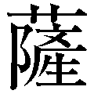

| 「昭和史」を歩きながら考える (PHP文庫) | |
| 半藤 一利 | |
| 株式会社ＰＨＰ研究所 (2015) | |

「昭和史」を歩きながら考える
半藤一利
「昭和史」を歩きながら考える◎目次
編集協力──武藤郁子
装丁──神長文夫＋松岡昌代
装丁写真──gettyimages
第一章 「昭和史」のなかのわたくし
戦後史のなかのわたくし
一 昭和二十八年
昭和二十八年（一九五三）春、わたくしは大学を卒 えて文藝春秋新社（現・文藝春秋）に入った。月給一万二千円であった。ビール大瓶百三十円、もりそば二十円、とんかつ並一皿（ライス別）百三十円のころである。初任給が高いほうの部類であったかどうか、いまになると見当もつかない。
前々年の二十六年九月、対日平和条約がサンフランシスコで調印され、連合軍による長い日本占領が終わり、二十七年四月に国家主権をとり戻して、やっと戦後日本は独立している。まず国家独立の実感として胸に響いたのは、羽田空港の返還と記憶している。飛べるものはすべて連合軍機のみというそれまでの七年間、「この空はわが空ならず秋の空」という俳句がずっしりと胸にこたえていた時代が終わった。やっと日本人のパイロットによって日本の飛行機が日本の空を飛べる、日本の空が戻ってきたんだよなあ、と、すっきり晴れ上がった空を眺めながら、やたらに嬉しく思えたものである。それと、キャメルやフィリップ・モリスなど、それまで吸いたくても吸えなかった外国タバコが自由に買えるようになる。値段はいくらだったか忘れた。ちなみに日本のピースは十本入り四十円であったことは覚えている。
わたくしの入社、つまり社会人の一員となったのは、そんな風に〝この国のかたち〟が大きく変革したときということになる。
ついでにいえば、この年の二月にテレビ放送がはじまり、三月にソ連の独裁者スターリンが死に、六月にはイギリスの女王陛下の戴 冠 式 が行われた。七月に朝鮮戦争の休戦協定が板門店で調印と、世界もどことなく落ち着きをみせはじめる。わが独立国日本でも、高校以上の課外にこれまで禁止されていた剣道の復活が認められる。ただし、自然にでる掛け声はよいが、無用の発声はいけない。つまり戦争中の肉弾切り込み部隊がだしたような声をだすと審判が注意し、きかないときは反則負けとなった。
どこかチグハグながら日本人が少しずつ威張りだしたとき、雑誌編集者となったわたくしは、群馬県桐生市に住んでいた作家の坂口安吾さんを訪ねた。原稿を頂戴してすぐ帰るつもりであったのに、一行も書いていない。こうなったら貰 えるまでは離れぬぞと、安吾宅に一週間もこっちが缶詰めとなる破目となった。そして毎晩酒を呑 みながら（安吾さんは冷や酒、わたくしは燗 酒 ）安吾大先生の、古代史にはじまって戦後日本論までの、天衣無縫、奔放不 羈 の名講義で徹底的に鍛えられた。
「街はすべて焼け野原。食う物もなく痩 せこけた人間が眼ばかりギラギラ光らせて、ヨロヨロと畜 生 道 餓 鬼 道 をうろつき歩きながらも、われら日本人は破れ電車に命懸けで乗り、シャカリキになって働きだした。生きとし生けるものは誰もが生きぬくために、ともかく元気をだした。尻 尾 を巻いた負け犬はほとんどいなかった。そしてやっといまの独立にたどりついた。さて、これからこの国はどうなると思う？」
「そりゃ、もうぐんぐん発展するでしょう」
「バッカダネー」
この「バッカダネー」が安吾さんの口癖で、何度、頓 珍 漢 な受け答えをして、この言葉を浴びせかけられたことか。
「そうはうまく問屋が卸 さんと思うよ。戦争に負けてさんざんな目にあったからって、人間はそう簡単に変わるもんじゃない。人間は元来そういうものなんだ。悲惨も残酷も非情もすぐに忘れて、元の木阿弥。またぞろわれら日本人は世界に冠たる優秀民族だなんて、獅 子 吼 する人間がいっぱいでてくるにきまっている。そしてまた亡びるなんてことになる、そう俺は予言してもいいね」
正確ではないが、この趣旨の安吾さんの話を聞きながら、昭和二十一年発表の『堕落論』の一節を、わたくしは想いだしていた。
「醜 の御 楯 といでたつ我は。大君のへにこそ死なめかへりみはせじ。若者達は花と散ったが、同じ彼等が生き残って闇 屋 となる。ももとせの命ねがはじいつの日か御楯とゆかん君とちぎりて。けなげな心情で男を送った女達も半年の月日のうちに夫君の位 牌 にぬかずくことも事務的になるばかりであろうし、やがて新たな面影を胸に宿すのも遠い日のことではない」
このリアリズム！ 戦後日本をどういう国につくり直すのか、皆目見当はつかないが、安吾直伝のリアリズムだけはわが精神に叩 きこんでおかねばならぬ、と社会人になりたてのわたくしは思ったことであった。
二 昭和三十五年
わが師といえる安吾さんは二年後に急逝した。その翌年の昭和三十一年七月に発表された経済白書（「年次経済報告」）は総論の〝結語〟にこう書いている。
「貧乏な日本のこと故、世界の他の国々に比べれば、消費や投資の潜在需要はまだ高いかもしれないが、戦後の一時期に比べれば、その欲望の熾 烈 さは明らかに減少した。もはや『戦後』ではない」
経済問題にうといわたくしは、もう戦後は終わったといわれてもピンとこなかった。しかし、設備投資を主要な需要とする経済成長がＧＮＰ一〇パーセントの伸びを達成し、「神武景気」が到来したのだと説明されて、少しは納得した。要するに、戦後の飢餓と貧困と混乱のなかで営々として働いてきたわれら日本人も、夢と自信とをもっていいのだなと思ったのである。
いま考えればたしかに、このとき日本は戦後の悪戦苦闘の復興経済からテイクオフし、自信に満ちて高度経済成長の道を歩きはじめていたのである。
ところで、「もはや戦後ではない」のもともとの名付け親の評論家中野好夫氏のお宅をその年の秋に訪れて雑談をかわしたとき、中野さんは妙なことをいった。自分がいいだした「もはや......」が妙な方向へ歩みだした現状を評して、
「神武以来の好景気とはいっても、日本固有の経済的強みや政治的政策があって生まれたものとはどうも思われないな。わが家の家計簿の帳尻をみても、さっぱり異変らしいものはない。それにしても、大いに自信を持つことは結構だが、ロクな政治らしい政治一つ行われないで、しかもこの好景気到来とは、日本人は案外幸福者なのかもしれんね」
と語って海坊主のような中野さんが豪快に笑ったのを思いだす。そして、勤勉な日本人は焦土から立ち上がって、とにかくここ十年間みんなしてセッセと働いて、あれよという間に生活的な不満を解消して楽になり、景気よくはなっている。とはいうものの、新しい国づくりのほうはまだ放ったらかしのままなのかもしれないな、と反省も交えて思ったことであった。
その新しい国づくり、つまりどういう国家をつくって国際社会の一員となっていくかについての、戦後日本のいわば分 水 嶺 となったのが、昭和三十五年夏の六〇年安保闘争であったと思う。このとき〝戦後〟は完全に終わりを告げ、自由・平等・平和・民主主義・社会主義という思想的に混合されたかたまりが整理されて、国の進む方向があっさりと一つにまとまった。哲学者の田中美知太郎氏がいうように、あの政治的大騒乱は「一切の戦後的なものの一種盛大な葬式」であったのである。
わたくしは当時三十歳、『週刊文春』編集部員でトップ記事を書いていた。熱狂するよりいくらか冷めた眼で騒乱を望見していた。五月十九日から六月十八日までの一カ月間、東京の中心部が革命の坩 堝 のなかにあるかのように荒れ狂った。が、直線距離で一キロほどしか離れていない銀座の社屋にあって、わたくしは国会議事堂前の激突を毎日テレビで眺めていた。若い社員のなかにはデモに参加したものもいたらしいが、革命とはこんな派手派手しい押しくらまんじゅうで起こるものではない、武器一つももたずに、と達観していたことを覚えている。
案の定であった。岸信介内閣の強行採決への怒りではじまった大衆蜂起は、岸内閣退陣とともにあっという間に退潮していった。〝戦後〟という時代のガス抜きが終わったのである。あらためて考えるまでもなく、あのとき中心となった若者たちは、戦後民主主義の土壌のなかで教育をうけた世代である。戦前の大日本帝国にたいする嫌悪感や反発心をひとしく植えつけられている。太平洋戦争勃発時の東条英機内閣の閣僚が、首相になって議会政治をないがしろにし、ふたたび軍事路線を歩もうとしているという認識、そしてそのことへのヒステリックな反発が原動力になっていた。それゆえにその元凶が退陣となって、あらゆる怒りも抗議もさあーっとおさまっていったのである。
騒乱が鎮 まって議事堂付近では、催涙弾のあとであろうか、硝煙がたなびき目がチカチカしているとき、わが編集部では編集会議がひらかれ、次号の第二特集として「デモは終わった、さあ就職だ」というテーマがきまった。「半藤、それをお前がやれ」と命じられて、わたくしは目を白黒させた。でも編集長に「これが正しい時代の見方なんだよ」と説得されて、そうかいなと思いさっそく取材に走った。
取材をすすめてみて、ほんとうにびっくりした。戦前の紀元二六〇〇年（昭和十五年）のときの「祝いは終わった、さあ働こう」というスローガンを思いだし、それと同じだ、安吾さんのいうとおり戦争に負けても日本人はちっとも変わらないんだと、しみじみと考えさせられた。
その年の六月二十七日号の『週刊文春』をもちだせば、いまでもその記事を読むことができる。下手くそな書きっぷりで読み直すことなんか御免なのであるけれど、あえて久しぶりにひらいてみると、「かつての就職地獄をヨソに、全国最高の秀才を集めた東京大学の法・経学部は、いまや就職シーズンに突入した。それも学生が会社を選ぶという形で......」といった謳 い文句で、なんと五ページのルポである。すっかり忘れていたが、読み返してみて仰天した。
なによりも安保闘争でワッショイワッショイとやっているそのときに、会社説明会が行われていたのである。とくに六月十五日は全学連の国会乱入と、そのさなかの樺 美智子の死があった日なのである。
・六月十四日（火）
第一銀行、丸紅飯田、八幡製鐵、三菱銀行、日本生命、トヨタ自動車工業。
・六月十五日（水）
三和銀行、帝国人絹、三井銀行、三菱化成工業、新三菱重工、東洋レーヨン。
・六月十六日（木）
日本勧業銀行、川崎製鉄、三井物産、日立関係四社（製作・電器・電線・金属）、東洋信託銀行、小野田セメント。
・六月十七日（金）
住友銀行、東京芝浦電気、日本長期信用銀行、蝶理、三菱日本重工、山一證券、倉敷レイヨン、松下電器。
以後、六月三十日までの半月の間に、約百社が就職説明会を行っていた。
何となくなつかしい社名もあって、いまは昔の物語となっているが、六〇年安保騒動のうしろ側ではこのように日本経済はすでに景況を謳 歌 しつつあったのである。そして敗戦後に志した文化国家・道義国家の国づくりの理想は、雲散霧消というか、塵 芥 のごとくに捨てられてしまっていたのである。
三 昭和四十九年
安保改定をめぐって揺れた昭和三十五年（一九六〇）の経済成長率は実質一三・一パーセントであった。これは戦後日本六十九年間でもっとも高い数字である。岸内閣のあとをうけた池田勇人内閣の「所得倍増計画」はこの年の九月五日に発表された。「日本の国民所得は、アメリカの八分の一、西ドイツの三分の一。この所得を十年後に倍にします。つまり国民の一人ひとりの月給を二倍にするのです」と。そしてこの年から四十九年（一九七四）までの十四年間は、いわゆる高度成長の坂道を日本国はぐんぐん駆け上っていった、まことに目 出 度 い歳月となる。
わたくしはその間まことに楽しい編集者生活を送っていた。勤めていた出版社の社業もずっと順調に伸びつづけている。そして小泉信三、松本清張、司馬 太郎、大宅壮一といった作家たちとの親交をぐんぐん深めた。この時代の思想史を語るのに、これらの人びとの存在ぬきでは到底語りえないのではあるまいか。その存在と活躍が時代の知的文化の根幹をなしていたのである。人間の自由な考え方と新たなるモラルの創造にむけての指標として、かれらの書いたものを知的中間層はむさぼり読んだといっていい。
編集者としては幸福で、仕事もなんらの停滞や障壁もなくバリバリとやった。好きな酒はそれこそ毎晩浴びるほど呑んでいた。トリスや安焼酎で我慢していたミミッチイときから、オーシャンとなり、角瓶となり、ダルマそしてジョニ赤、ジョニ黒を平気で一本あける大層な身分になるまで、たいして時間はかからなかった（好きな日本酒もドブロクにはじまって特級酒まで、これまた三段跳び）。
そういえば、余談になるが、家庭生活で焦 げた御飯を食べる必要のなくなったのは、六〇年安保の直前のことではなかったか。電気釜という文明の利器が家事になれないヨメさんたちを救ったのである。お焦げを子供のときから好物としていたわたくしは、いまどきの日本人がお焦げのおいしさをまったく知らないことが残念でならない。
閑話休題 、そんな風に、高度成長をほんとうに満喫していたわたくしであるが、心の底ではこんな太平楽がいつまでつづくはずはないとひそかに憂えていた。わたくしの頭の中には、無謀ともいえる太平洋戦争になぜ大日本帝国が突入したのか、そして無残な敗北をとげたのか、そのことを徹底的に調べて得た教訓の、その警鐘がたえず鳴っていたからである。資源のない国、海岸線がやたらに長く国防的に守りづらい国、そして歴史を学ぼうとしない民族エトセトラ。それは経済大国をいくら誇ろうとも厳然と存在している。
それに、戦前日本の経済学の無能ぶり、そして戦後のマルクス経済学オンリーのいま、この高度成長の現実分析や予測が十分に力を発揮できるはずはない、とすこぶる悲観的であった。それだからわたくしは物質的繁栄を全身的に浴びることはなく、ごく最低限の日常生活で満足することにした。つまり、酒をのぞけば、戦前の東京下町の貧しい暮らしぶりプラス少々のアルファのところで、悠々閑々と日々を送ってきた。
そんな反時代的なわたくしとは関係なく、高度成長の十四年間は平均成長率はじつに九・七パーセント。日本経済がつくりだすパイはどんどん大きくなり、社会の構造はもとより人びとの生活も意識も根底的に変化した。この短い期間に日本人が体験したいろいろな出来事は前例のないものばかり、国際収支の悪化や物価上昇にたいする批判もときどきあったが、そんな〝雑音〟に聞く耳もたずで終始する。ましてや公害という〝ひずみ〟に目をくれる人はまずいなかった。
そこに昭和四十九年の第一次石油ショックがガツンと襲ってきたのである。前年十月に勃発したイスラエルとアラブの衝突に発するもので、その影響がもろにきた。作家の大岡昇平がこの年の一月一日に朝日新聞に発表したエッセイの一節を引用する。
「政府は信用できず、従ってその統制下にある情報も信用できない。テレビのＣＭだって、そらぞらしく聞える。（中略）このような価値の不意の転換は、敗戦以来はじめてといえる。沖縄が帰って来てもＧＮＰが自由世界第二位になっても、私は戦後がおわったとは感じなかったが、こんどはわれわれの考え方を替えなければならない時が来ているような気がする」
この年はじめて国民総生産がマイナス成長となった。戦後日本が直面した大きな危機そのもので、高度経済成長社会の終焉の年といわれたのもムベなるかな。なのに国家は無為無策。国民もまた大岡さんのいうように考え方を替えなければならないのに、そうは右から左へという具合にトントンとはいかない。経済成長がアラブの安い原油によってやっと成り立っていることを思い知らされたが、翌年は昭和も半世紀、国民の八五パーセントが中流意識をもつ〝昭和平安〟の時代と心から慶賀していたのである。
わたくしは冷たい眼差しで、人びとのトイレットペーパー買いあさりなどの周 章 狼 狽 を眺めながら、つぶやいていた。太平洋戦争は石油をアメリカから止められたためにはじめた。こんどもまた自存自衛のために戦争、というわけにはいくまい。で、こうなれば戦争中の標語「ぜいたくは敵だ」の延長でいくよりほかに、進むべき路 はないのじゃありませんか。日本人よ、と。そしてこの国が資源の何もない小国であることを、一人ひとりがしっかり認識するんですよ......。
四 おわりに
安吾さんの予言したように、日本人はすぐ変わる。化ける。鬼畜米英、一億玉砕を叫んでいた超国家主義者が、たちまち民主革命の赤旗ふりの先頭に立った。同じことで、ワッショイ、岸内閣打倒の大デモ隊の政治リーダーが、一夜明けたら所得倍増・月給二倍論で夜も寝ずに働く経済戦士となる。歌の文句の「昨日勤皇、明日は佐幕......」ではないが、戦前から戦後にかけて見慣れた日本人の素早い変わり身である。とくに驚くほどのことはない風景だが、政治大混乱の冷たい季節から高度成長の温暖な季節への大転換は、いまもどうしてあんなにスムーズにいったのかと、しばし沈思黙考しないわけではない。
それはもう終戦直後の死ぬほどつらい空腹に七転八倒した体験をもつ身には、飢餓からの脱出は字義どおり地獄に仏。それで当時の日本人の、経済大国をめざそうという足並み揃 えての国民的合意の一応の理解はつく。しかしそれだけではなかったように思う。
では何があったか、と問われれば、その根元に戦後日本がいつか身につけていた工業技術、あるいは機械技術への自信があったと答えたい。焦土と化した荒地の中から戦前からあった日本独自の科学技術というものが、政治的混乱と関係なく蘇 り成長していた。見事花開いていたのである。造船だの自動車だの、さっきふれた電気釜だの電気掃除機だの、カメラだの、その技術は世界の水準をはるかに抜いていた。
政治は信じられないが、零式戦闘機や戦艦大和を自前で造った日本の技術の優秀さ有能さは信じられる。それは戦後だって変わらない。池田首相がドゴール仏大統領に「トランジスタラジオのセールスマン」と揶 揄 されても、何を小 癪 な、じゃあ作れるなら作ってみろ、と胸を張った。技術立国の誇りである。
昭和三十三年（一九五八）十二月、東京タワーが天を突いて立ったとき、あの鉄塔の三分の一は朝鮮戦争休戦で余った戦車を溶かした鉄材でできている、と知らされ、日本の業者の抜け目なさよりも、技術陣の見事な成果にただただ脱帽したものである。
昭和四十年代の国家目標を高度成長においた基底には、この国民的自信と自負と確信があった。それが高度成長へと日本人を驀 進 させたのであると思う。もちろん、わが仮説、いや盲説かもしれない。しかし、あの時代の官僚や経営陣が国を思い国民を思って有能であったように、技術者も謙虚で真面目で優秀であったのはたしかである。だれもがいい国家建設の熱に燃えていた。
それも、あっちもこっちも二代目三代目となったいま、すべてにそうはいかなくなっている。原発は安全という「神話」に乗せられたまま老骨となったわたくしは、三・一一の水素爆発で建屋が吹っ飛ぶという想像もしなかった光景を見て、魚雷を十発二十発喰らおうと沈まない、という戦艦大和の「神話」を想いだして、ただ慄 然 とするばかりであったのである。
安吾の特攻隊賛美
占領下の昭和二十二年、雑誌『ホープ』に載せる予定で書いたのに、ＧＨＱの強圧的な検閲で、全文削除になった坂口安吾の作品がある。それこそは幻のエッセイといわれた「特攻隊に捧ぐ」である。筑摩書房『坂口安吾全集』の第十六巻（二〇〇〇年刊）にはじめて収録された。
《私は戦争を最も呪ふ。だが、特攻隊を永遠に讃美する。その人間の懊 悩 苦 悶 とかくて国のため人のためにさゝげられたいのちに対して。......／私のごとく卑小な大人が蛇足する言葉は不要であらう。私の卑小さにも拘 らず偉大なる魂は実在する。私はそれを信じうるだけで幸せだと思ふ》
と安吾さんは特攻は「強要によつて起りはしたが」「凡人も亦 かゝる崇高な偉業を成就しうるといふことは、大きな希望ではないか」と結論づけ、最後に生き残った戦後の青年たちに語りかける。
《青年諸君よ、この戦争は馬鹿げた茶番にすぎず、そして戦争は永遠に呪ふべきものであるが、かつて諸氏の胸に宿つた「愛国殉国の情熱」が決して間違つたものではないことに最大の自信を持つて欲しい》
安吾好きとしては、あらためて、戦中戦後一貫していうことに変わりがないな、と嬉しくなる。時代の風潮がいかに変わろうとも、自己を偽ることなく、二枚舌を使うことなく、安吾さんはたえず国を愛することの大事さを強くいいつづけている。
特攻隊賛美といえば、安吾さんばかりではない。大岡昇平さんまた然 り。『レイテ戦記』（中公文庫）の特攻の章で、出撃する特攻隊員にたいして、大岡さんはすこぶる優しくなっている。今日まであれほどの自己犠牲の決意と勇気とをもって、国のために一身を捧げたものはない、という賛嘆とをもって、大岡さんと安吾さんとが限りなく精神的に結び合う。
と感服しつつも、特攻について考えれば、やっぱりきちんといっておかなければならないことがある。とくに、四月といえば、六十九年前の沖縄攻防戦で、「散る桜残る桜も散る桜」と、特攻作戦がルーティンワークのごとくに行われたとき。ただ青年たちの精神的高揚と純粋さを讃えるばかりであるのはどんなものか。
志願による十 死 零 生 の特別攻撃は、金輪際許すことはできない。命令できないことを強制するのは、人間としてしてはならないこと。真の人間悪を、至純な精神のオブラートでくるんではならぬ。責任をとろうとしなかった計画者や指揮官のことを、一緒に祀 ることはできないと思う。
日中戦争の陥落主義
●スローガン
「今次事変の理想が、わが国肇 国 の精神たる八 絃 一 宇 の皇道を四海に宣布するの一過程として、まず東亜に日・満・支を一体とする一大王道楽土を建設せんとするにあり。その究極において、世界人類の幸福を目的とし、当面において東洋平和の恒久的確立を目標としていることは、政府のしばしばの声明をまつまでもなく、けだし自明のことである」
六十歳以上の人々には、なんともなつかしく、気恥かしくなる文字の羅列であるまいか。肇国の精神、八紘一宇、王道楽土、そして「東洋平和のためならば、なんで生命 が惜しかろう」の歌が自然と想い出されてくるだろう。
昭和十四年（一九三九）二月に、司法省（いまの法務省）がひそかに作製した「支那事変における出征（戦傷死）者遺家族の動向に関する調査」の、いちばんはじめに書かれている文章である。
上海陥 落 にはじまって、太原、南京陥落と、昭和十二年は旗行列とちょうちん行列で、日本人は戦勝を祝った。忠勇無双の日本軍の進撃ですぐにも終わりそうな戦争は終わらない、ばかりか、戦死傷者の数が激増。こんなはずではなかったと、政府も軍もかなりあわてた。士気を鼓舞するためには戦勝祝賀祭にかぎるのである。
昭和十三年は、例の「国民政府を対手とせず」の近 衛 声明で幕があけた。それは、日本の首相みずからが、世界に「和平の道を閉ざした」ことを宣言したようなものだった。となれば、最後の勝ちをつかむまで、戦果をひたすら大にしなければならない。目標を徐州へ、広東へ、そして最終点を 介石の臨時首都であった漢口に向ける。はじめの作戦計画にはなかった戦線拡大である。そして、十三年十月二十七日、漢口は陥落するのである。
陥落、陥落また陥落、そのたびにちょうちん行列ヨヤサノサ、戦争はお祭りではないのだが、捨ニ無ニ進撃アルノミの、戦線の拡大と動員と、一方で戦果を待ちに待つ銃後と、どっちがニワトリでどっちが卵かわからないが、競り合わすような形で士気を保たないことには、どうにもやりきれぬほど戦争はどろ沼化していった。「兵隊さんは命がけ、私たちは襷 がけ」という標語は、当時の国民感情を言い得て妙である。
しかし、漢口陥落が、日本の〝陥落主義〟の終点だった。拡大もここまで。日本人は勝った気になっていたが、陥落主義には、都市陥落のあとの中国民衆の抵抗が視野に入っていなかった。占領地域の後方に、抗日政権があり、抗日遊撃戦があり、毛沢東の「持久戦論」があった。
日本人は、でっかい中国の地図の上に、陥落主義で、あちこちに日の丸の旗を立てて喜んでいたが、よくよくみたら日本軍が占領していたのは「点と線」。主要都市に軍の基幹部をおき、地方都市の重要度にしたがって、師団・連隊・大隊・中隊と配し、それらをつなぐ鉄道沿線を中心に警備区域をつくって威張ってはいた。しかし、要するに点と線である。そのほかの広い「面」のところは中国軍のお出入り勝手である。なにしろ、自国の大地が戦場になった中国の民衆にとって、直接に戦地と自分が結びついている。日本でいう銃後と戦地の区別なんかなかったのである。
陥落主義から「点と線」警備という、お祭り騒ぎが消えて、戦争が新しいサイクルに入ったとたん、中国と違って戦地と遠く離れた日本の銃後をひきしめるために、日本の政府と軍部は、新しいキャンペーンを展開せねばならなかった。八紘一宇も東洋平和もそれである。そして「堅忍持久」「尽忠報国」である。昭和十四年の司法省の「調査」で謳われた麗々しい文字は、その事情をあざやかに語ってくれている。
しかし、スローガンが美 々 しければ美々しいほど、実情に混迷をきたしていたのである。銃後の不満は、おさえればおさえるほど大きくなり、噴き出しつつあった。もちろん「天皇陛下のために喜んで」という声が大部分だが、そっくりその裏側にひそむ戦争憎悪、倦 怠 感。司法省の調査はそのことを大いに嘆いている。（原文を読みやすく新カナ常用漢字に直すと）
「戦争はいつまで続くものでしようか。御上はなんのためにかように人命を犠牲にして、大金を要してまで戦争をなさるるか、私には不思議でなりません」
「大勢もない大事な人の子を連れていって、幾年も幾年も無駄奉公させられてたまったものではない。焼けつくような熱いところで、飲み水もなく腹をへらして戦争をしているということだ」
「わが軍は漢口から先へ行くつもりか、広い国を先から先へ占領しても後が困るのでないか」
「召集召集でずいぶん御上に召し上げられたが、召集されて行くものばかりで帰るものが少ないようだ」
「軍人ばかり出る家は貧乏の上にますます貧乏する。軍人に行かぬ家はますます金持になる。金持からも軍人に出るようにせねばならない」
「戦死に際し、戦死して芽出たしと祝辞をのべたる村民あり、親として芽出たきことなし」
こうしたさまざまな悲鳴を押しつぶして、戦闘はつづけねばならなかった。何のために？ 東洋平和のために。しかし、やがて誰も信じなくなる。スローガンも「欲しがりません勝つまでは」と悲壮、卑俗なものへと変わってゆくはかない運命にあったのである。
●千人針
日中戦争時の銃後をもっともよく象徴する風景に、街頭の千人針があった。虎は千里を征 って戻ってくるといういい伝えで、虎の絵などを豆しぼり風に描いた布切れに、千人の人が針と糸で真心をこめて結び目をつくってゆく、これを腹に巻いて戦場にでると、弾丸に当たらないと信じられた。
当時のさまざまなことは、いまになって考えれば、馬鹿馬鹿しい限りなんだが、千人針もその一つ。それが戦地と銃後を結びつける精神的なきずなと、一億のほとんどが信じていたのは確かである。
大まかにいえば、献金、千人針、武運長久祈願の村民大会というのが、銃後の国民の三大行事であった。国家総動員法にもとづく、これこそが精神総動員の証しとなれば、誰もが逃げるわけにはいかぬのである。いまに直せば、カンパ、署名、集会だ。どうやら民衆運動とは昔もいまも同じような形態をとるらしい。
千人針を語る当時の手記から。
「街の喫茶店に入った。隣の席に洗 髪 の新橋芸者が三人陣どっている。ボーイが、お願いしますと、一枚の千人針を持参におよんだが、なんとそれには、十銭五銭のニッケル貨が、ジャラジャラと鈴なりになっている。（中略）
『ああ、五銭玉がない。それじゃ苦戦を越えちゃおう』
第一の芸者がそういって十銭玉をぬいつけると、
『じゃ、あたい、死線を越えるわ』
と、第二の芸者が五銭玉を結びつけた。
そこで三人目はなんとのたまうかと見ていると、
『あたい、銃後の祈り、と』
そういって、ちょっとおがむまねをして、帯のあいだの赤いガマ口から、十銭と五銭と、二枚のニッケル貨をつまみだすのであった」（『改造』昭和十二年十月号、奥村五十嵐「街頭事変色」より）
この五銭玉や十銭玉をぬいつけた千人針の日本兵を、中共軍（八路軍）は実に面白く観察している。昭和十五年に、日本の上海特務機関がひそかにキャッチした八路軍の秘密文書によると、これこそが日本軍隊の懦 怯 性の表現だと指摘しているのである。懦怯とは、辞書に「臆病で意志の弱いこと」とある。
この極秘文書は題して「日本軍隊的政治特性」という。
日本軍将兵はほとんどがその身体に「お守り」とか「千人針」をつけている。お守りがあれば弾丸がそれて死を免れることができるとか、千人針があれば千人力をもって彼を助けてくれるに等しく、いざというとき怪我をしないですむとか、日本軍将兵は思っている。
そして、これは長期戦争のうちに政治的欺まんが表れ、権威が失墜するようなことがないかと日本軍閥が深く恐れるあまり、このような封建的な迷信を用いて日本将兵の戦闘精神を維持しようとしているものだ、とする。
だから、とこの秘密文書はいう。
「日本軍隊は表面から見ればたいへん強そうに見え、見目よく見え、誰もかれもが現代軍事技術を具有した部隊であることは否認することはできない。しかし、その裏面では、この種の軍隊はかえって濃厚な封建思想を残しているのであって、あたかも霊魂なきが如 く、菩 によりて自分を扶持せねばならぬのである」
この大いなる矛盾！ この矛盾性が表れて、日本軍隊は「一面相当の頑強堅決をもち、他面また非常に懦怯・貪生怕死であるといえるのである」と、秘密文書は結論する。
まことにごもっともな観察ではないか。たしかに、死線を越えるため五銭玉、苦戦をはねのけるために十銭玉と、こんな他愛のないゴロ合わせを、当時の日本人は信じていたかにみえる。しかし、本気ではなかったろう。これを正気で信じたんだとすれば、生に執着し死を恐れる怯 懦 なやつと評されても仕方あるまいが、そんな兵隊はいなかった。しかし、そんなものでも信じなければ、信じているふりをしなければ、とてものこと、やりきれないような戦争であったのである。つまりすべてがフィクション。やってられないよ、であった。しかし、やらねばならぬとあればイワシの頭だって信じて拝 んだまでのことだったのである。
●不打硬仗主義
戦争が長期化し、ゲリラ戦となると、侵略側からすれば治安戦になってくる。
このことは古今東西の戦史から、いくらでも例を拾うことができる。近くは、ナチスとフランスのレジスタンス、ベトナム戦争のアメリカ軍とベトコン等々。
そうしてゲリラ戦ともなると、中共軍の戦略は古今の戦史も顔負けするくらい巧妙をきわめたものだった。交通線の破壊、少数部隊への襲撃、日本軍に協力する村落への攻撃、親日要人の暗殺、日本下級兵士への反戦工作など、手をかえ品をかえ、飽きずにくりかえしたという。
そのための三原則というのがあった。第十八集団軍総司令官の朱 徳 将軍の発案によるものであったらしい。
「敵進我退」（敵が進めば、逃げ）
「敵駐我騒」（敵が駐屯すれば、さわぎ）
「敵退我追」（敵が徹退すれば、追いかける）
これである。戦術と特別に申せないほどありふれたものとみえるが、これを何があっても徹底しぬいた。だから巧みな戦法になった。つまり中共軍のやり方は、不打硬仗主義（無理な戦争はしない）で一貫し、日本軍は、とくに中国北部方面では、この不打硬仗主義によって奔命の追撃戦に明け暮れた。そして疲れきった。彼らは正面に立ち向かうことをせず、追えば逃げる、放っておけばたかる、という具合に、背後に、側面に出没した。
さらに、中共軍は中国民衆に対して、
「空室清野」（家を空にして、食糧をかくす）
「両平三空」（人と飲物と食物の三つをかくす）
の二つの大戦略を徹底的に実行させたというのである。敵陣地と信じ日本軍が攻撃し、占領すると、無人の村落、無食糧地帯となっている。散々に骨を折った甲斐もないから、空 き腹のやけっぱちで、日本軍は軽口をたたいた。滑稽な話である。
「毛さん給与は空手形、豚も鶏もみなかくす」
やむなく徹退。すると、そのすぐ後に、ぞろぞろと中共軍が現れて陣地を回復した。ばかりではない、村の道では肥えた豚がいつの間にかぐうぐう昼寝をしているではないか。
介石軍の将軍が、合同軍事会議で中共軍の将軍にかみついた。
「八路軍は遊して撃たず、延安には一人の負傷者もいないというが......」
味方の軍隊もあきれるほどの徹底ぶり。いまあらためて、帽子をとって感服するほかはない。
●遺棄死体
中国大陸の日本兵は、さぞかし混迷を深めたことだろう。なにしろ付近に生活する中国人のなかから抗日軍を嗅ぎわけて、戦わねばならぬのであるから。白か黒かハッキリすることを好む日本人の最も不得手とするところ。敵が民衆と区別しにくくなればなるほど、民衆全部を相手にしなければならなくなる。しかも、日本の戦史に、およそゲリラ戦の戦訓など薬にしたくともないのであった。
結果は、ときとして掠奪、強姦、殺人という非人間的行為。こんどの戦争は、われわれがどこまで非人間的になれるかを教えてくれたのである。
東京裁判に提出された動かぬ証拠は、本当に心からわれわれを悲しませる。アングラ文書なんかではない。昭和十四年に作られた日本の陸軍省秘密文書第四〇四号というレッキとしたもの。「事変地ヨリ帰還ノ軍隊、軍人ノ状況」と題されている。そのなかのいくつかを。（原文は片カナ）
「戦闘間一番嬉しいものは掠奪で、上官も第一線では見ても知らぬ振りをするから、思う存分掠奪するものもあった」
「ある中隊長は『余り問題が起らぬように金をやるか、又は用を済ました後は分らぬように殺しておくようにしろ』と暗に強姦を教えていた」
「戦争に参加した軍人をいちいち調べたら、皆殺人強盗強姦の犯人ばかりだろう」
軍紀のゆるみは、個人のレベルではなく、すでに集団になっていることを、これらの言葉は示している。そしてこれら証言がえんえんとつづいて、胸くそ悪くなる。「戦陣訓」はこうした軍紀のびん乱をいましめるため急拠作られたものであったという。
こうして中国民衆は、日本軍によって、家を焼かれ、間違えられて殺されたりした。その本当のところは日本側の資料からでるはずもない。間違って殺されたことがわかるのは死んだ中国人自身であり、これが日本軍の報告や資料では、きっと〝敵の遺棄死体〟となっているであろうから。
戦場の日本兵にとって、だれが敵なのか不明確になった。戦争目的がぼけてきた。さらにはいつになったら終わるのか、わからなくなってきた。彼らを支えているのは、戦わなければ自分が殺される式の恐怖感だけではなかったか。
兵隊だけではない。日本指導層の対中国対策は、近衛の「対手とせず」声明いらい、錯乱に錯乱をかさねるのである。汪兆銘を主席とする傀らい政権をつくり、それとの和平交渉をしながら、実は 介石との直接和平交渉をもくろんで、おびただしい工作がくりかえされている。昭和十五年末、対重慶工作は実に十七本のルートによって行われていた（『大本営機密日誌』より）という。これで 介石に何を信ぜよというのだろうか。
近衛は、この「対手とせず」声明を終生悔いつづけたとある。昭和十九年、太平洋戦争で日本の敗北決定のころ、謝罪の親書を、彼は 介石に送ろうとした（原文は片カナ旧カナ）。
「日華両国の和平は、余のつねに念願とするところなり。余はかつて声明を発し......（中略）余の意図に反し、事態紛乱してこんにちにいたる。その責任の重大なる、余の深く自省するところなり。おもうに日華和平の緊切なる、こんにちよりはなはだしきはなし、乞う、閣下余にそのことを協議する機会をあたえられんことを」
いやはや、何をか言わんや。およそ人間離れをした公家感覚をもつ宰相を、いちばん大事なときに頭にいただいた日本民衆の、いやそれよりも中国民衆の方がより大きな、不幸であったとしかいいようがない。
日本人の集団催眠
昭和史と太平洋戦争に取り組んでからもう何十年となく心にひっかかっているナゾがいくつかある。その一つに、昭和十七年（一九四二）六月のミッドウェイ海戦で機動部隊を率いた南 雲 司令部の指揮ぶりがある。
五日午前四時二十八分に、重巡「利根」の索敵機が「敵ラシキモノ見ユ」を伝えてくる。南雲司令部は即応して米艦隊攻撃に頭を切り換えねばならない。なのに、モタモタして余計な通信応接に時間を空費し、やっと敵機動部隊への攻撃命令を下したのが午前五時五十五分。この一時間半に近い遅れは、時間との勝負の航空戦においては致命的というほかはなかった。
南雲司令部の幕僚には海軍航空の第一人者がずらりといるのに、この不手際は奇妙というしかない。戦後生き残った彼らの口から弁明に近い説明を聞いても、さっぱり要領を得なかった。そして到達したのは、長官も参謀も南雲司令部の全員が、作戦開始の時点で、敵機動部隊はゼッタイに 出撃してこないと思いこんでいた、集団催眠にかかっていた、という結論であった。それにしてもそんなことがあり得るのであろうか。
敗戦後五十年近くもたって、思いもかけずその解答が示されてアッケにとられた。平成六年（一九九四）六月の「松本サリン事件」である。警察はもとより、新聞・週刊誌・テレビの、これに煽 られての国民の、「早く捕まえろ」の大合唱がそれである。ほんの少数の人をのぞいて、犯人像を無実のひとりの人にしぼりこみ、だれもが疑おうとしなかった。
犯人視された河野義行さんの手記『「疑惑」は晴れようとも』（文藝春秋、一九九五年十一月刊）を読み、その思いをいっそう深くした。
あとからどんなに「疑惑」を打ち消さねばならないような事実や、考え直す必要のある情報が入ってきても、犯人はあの人という確信の前にはないにひとしかった。その確信があらゆる正当かつ合理的な判断をはねのけてしまう。五十数年前のミッドウェイ海域の南雲司令部と、ほとんど変わらなかった。
戦前の昭和史においては、危機に直面した日本人はある一つの観念にとらわれると、雪崩 現象をおこしてそれに突っ走る。自分にとって望ましい目標を設定し、上手な作文で壮大な空中楼閣を描き出すのを常とした。南雲司令部はまさにそれであった。その教訓をふまえて戦後は......と考えていたが、あにはからんや、もっとひどく集団催眠にかかりやすい国民になっている。そんな気がしてならないのである。
群集心理に動かされる
先日、団塊世代のＩ君と話す機会をもった。どことなく人の良さそうな穏やかな雰囲気を漂わせる初老の、ただし、その昔には、七〇年アンポでお祭り気分で暴れ回った覚えのあるらしい御仁である。以下は、そのＩ君と一献傾けながら語り合ったバカ話の一部。
さてさて、そのときわたくしは相当きこしめして、俄然、語りに調子が上がっていた。
近代日本の歴史において、いや、ついこの間まで、群集の暴動がしばしば国策遂行の前に立ち塞がった。「明治の日比谷焼き打ち事件」や「大正の憲政擁護運動」や「昭和の六〇年安保闘争」などは、群集暴動が政治と対決した好例といえよう。それが昭和四十四年（一九六九）一月、団塊の世代が大暴れした大学紛争の終結いらい、ぴたりと消えた。「一月十九日、機動隊八千五百人が東大安田講堂に突入、催涙ガス弾四千発、三百七十四人を逮捕」などと歴史年表で眺めたりすると、そぞろ懐 かしさでいっぱいになる。
「それにつけても、あのすさまじい政治の時代はどこへ去ったのか。あの〝群集〟はいったいどこへ消えてしまったのか」
Ｉ君がムニャムニャと何か言おうとするのを押しとどめ、さらにわたくしは講釈をつづける。
フランスの社会心理学者ル・ボンは『群衆心理』（創元文庫）という名著を十九世紀末に書いているが、そのなかで彼は言っている。
《群衆の最も大きな特色はつぎの点にある。それを構成する個々の人の種類を問わず、また、かれらの生活様式や職業や性格や知能の異同を問わず、その個人個人が集まって群衆となったというだけで集団精神をもつようになり、そのおかげで、個人でいるのとはまったく別の感じ方や考え方で行動をする》
そして群衆の特色を、ル・ボンは鋭く定義して、──衝動的で、動揺しやすく、興奮しやすく、暗示を受けやすく、物事を軽々しく信じる、と。さらに群衆の感情は誇張的で、単純であり、偏狭さと横暴さと保守的傾向をもっている、とも。
「で、オレはつくづく思うんだな。昭和十五年から対米英開戦までの道程における、日本人の、泥沼の日中戦争に飽いて、新しい戦争に期待する国民感情の流れを考えると、まさしくル・ボンのいうとおりであったなと」
「なるほど」とＩ君が肯定した。
「たしかに、戦後の、たとえば、大はメーデー事件、砂川・内灘闘争、六〇年アンポ、七〇年アンポ。小はうたごえ酒場、山谷・釜ヶ崎暴動と、熱狂した群集を考えると、おっしゃるとおりのようでありますな」
それもナ、と、グイと酒を呑んでわたくしの弁舌はますます冴えわたる。
ときの政府や軍部が冷静な計算で操作していったというようなものではない。日本にはヒトラーのような独裁者はいなかったし、強力で狡猾なファシストもいなかった。民衆と不可分の形で結局はリーダーも群集のひとりであり、民衆のうちにある感情を受容しそれを反映する場合にのみ、リーダーは民衆を左右できたのである、と。
「この歴史的な教訓からみると、国民感情の激発とは無縁の、シーンとした昨今の社会状況は、歓迎されることにこそあれ、非難されるべきなにものもないのかもしれんな」
「いや、それはどうでしょうか。容易に熱狂する民衆が消え去ったとは思えませんが」
「そこだよ。実は、物理的群集心理論という学説があるんだな。それを研究している人によると、群集心理の度合いは密度（人／平方メートル）であらわせるらしい。一平方メートル六人はちょうどエレベーターの定員の標準。この六人が八人になっても新聞が読めるし、落とし物も探せる。十人になると四囲から体圧が加わる。十二人では悲鳴があがる。十四人になると災害の一歩手前という荒々しいことになるそうな。そして、この物理的な群集論を使ったのがヒトラーなんだ」
その著『マイン・カンプ』（邦題『我が闘争』）はその手法を手品のように明かしている。人間は群集密度が高まると理性が弱くなり、感情が高ぶってくる。疲労や空腹が加わると傾向はいっそう強まる。ヒトラーはそこをねらった。演説は夕方をえらぶ。そして親衛隊により前後から群集を圧迫し、群集密度を高める。そこに火のような感動的な名セリフを叩きこむ。
「ヒトラーは、明らかに人間は加工されやすい憐れな動物であることを見抜いていたんだよ。物理的に、心理的に圧力をかけて群集密度をあげていくことで成功した。おそらく彼のような天才的アジテイターが日本に出てくれば、訓練のない幼児のようないまの日本人を群集化することなど、お茶の子さいさいであろう、と思うんであるな」
すると、Ｉ君は突っかかるように言った。
「いやいや、現実に、小泉ナニガシという政治家に日本人は見事にだまされましたよ」
「フム、そうであった。世はなべてコトもなし、なんて手放しで慶賀してばかりもいられぬのか。閉塞状態のつづくいまや〝衆愚〟を心配しないわけにはいかないということなのかな」
こうしてその夜の酒はますますピッチが上がっていくのであった。
山本さんの名言
山本元帥、山本長官、山本提督などと書くよりも、旧制長岡中学校同窓の後輩としては「山本さん」とよぶことにする。もちろん、一面識もないのであるが、わたくしには山本五 十 六 さんが心底なつかしい人と思えてならない。太平洋戦争時の連合艦隊司令長官である。
その山本さんは昭和史にいくつもいい言葉を残している。
なかでも、「やってみせ、言ってきかせて、させてみて、ほめてやらねば人は動かじ」が有名か。いまも、思いもかけないときに思いもかけない人から聞かされてびっくりさせられることがある。上杉鷹 山 の「なせばなる、なさねばならぬ何事も、ならぬは人のなさぬなりけり」を、山本さんらしく直した名言ということになろうか。
海軍兵学校に入学したとき、信念は何か？ ときかれたときに答えた言葉もいい。「私の信念は、やせ我慢であります」。明治政府から冷遇された長岡出身者らしい、わが心に響く実にいい言葉である。
いよいよ戦雲急となった十六年十月二十四日付の、嶋田繁太郎海軍大臣あての書簡にも、いまは至極有名になった言葉がある。
「......大勢に押されて立上がらざるを得ずとすれば、艦隊担当者としては到底尋常一様の作戦にては見込み立たず、結局、桶狭間とひよどり越 と川中島とを併せ行ふの已 むを得ざる羽目に追込まれる次第に御座候」
この「桶狭間とひよどり 越と川中島」を併せた作戦が、開戦初頭の真珠湾への殴り込みであったことはいうまでもない。
もはや対米英戦争は確定と覚悟したとき、すなわち十六年十一月九日付の親友堀 悌 吉 予備中将あてのよく知られる書簡もある。
「之が天なり命なりとはなさけなき次第なるも、今更誰が善いの悪いのと言った処ではじまらぬ話なり。......個人としての意見と正反対の決意を固め、その方向に一途邁進の外なき現在の立場は誠に変なもの也。之も命といふものか」
自嘲的な響きが、悲劇の将そのものを語っている。死ぬ覚悟はこのときに定まっていたのであろう。
人口に膾 炙 したこれらの言葉よりも、昭和十四年五月、日独伊三国同盟に断々固たる反対の意思を貫いたとき、万一を慮 って遺書をしたためた。そのラストの一行がわたくしは好きである。
「此身滅すべし、この志奪ふ可 からず」
この堂々たる男の気概は何ともいえず、いい。
そういえば、なぜか誤解されやすい言葉も山本さんはいくつか残している。十六年九月十二日、ときの首相の近衛文麿に、対米英戦争の見通しを訊ねられたときの、よく知られた名言がある。
「どうしても私にやれといわれれば、一年や一年半は存分に暴れてご覧にいれます」
これである。戦後になって井上成 美 大将が「あの一言は余計であった。失礼ながら山本さんの黒星です」と批評したというが、戦いをやれといわれれば自分はとにかく必死に戦うのみ。と覚悟を披 瀝 したあとに、「総理もどうか、生易しく考えられずに、死ぬ覚悟で妥結を見出すべく日米交渉にあたっていただきたい」といっている。つまり山本さんの避戦への願いが込められている。これをぬきにして、ここだけを取り出してみるのは間違っている。
同様に政治的な操作によって誤解を生んだ言葉がある。十六年一月二十四日付で笹川良一氏に出した私信の終わりの部分である。
「日米開戦に至らば己が目ざすところ素 よりグアム、比 律 賓 にあらず、将 又 、布哇 、桑港 にあらず、実に華府 街頭白亜館上の盟ならざるべからず。当路の為政家、果して此本腰の覚悟と自信ありや」
この文章の肝どころは、いま「アメリカ討つべし」などと威勢のいいことをいっている軍部や政治の指導者連中に、それだけの覚悟と自信があるのか、と山本さんが憤激を叩きつけているところにある。ところが、戦死後、戦意高揚に利用するために、最後の「当路の為政家......」以下のいちばん大事な一行がカットされて国民には発表されたのである。このためアメリカでも日本国内でも、山本さんは軍国主義の権化と見られてしまった。ほんとうに不幸この上ない、許すべからざることであった。
あっけらかんの夏が来た
また、八月がやってきた。
六日のヒロシマ、九日のナガサキ、そして満洲侵攻、十五日の天皇放送と、あの惨めであった日々。拙著『昭和史』（平凡社）の寺子屋授業の生徒たちを前にして、八月は死者を想い起こす月である、といとも厳 かにいったら、全員がキョトンとした顔をした。
「戦陣ニ死シ職域ニ殉シ非命ニ斃 レタル者及其ノ遺族ニ想ヒヲ致セハ五内為ニ裂ク」
わたくしは毎年八月には、終戦の詔書のなかのこの文言をぶつぶつと経文のように唱えて起きるのを、毎朝のしきたりとしている。
・玉 音 のまぎれがちなり汗冷ゆる日野草城
・一本の鶏頭燃えて戦終る
加藤楸
・寒燈の一つ一つよ国敗れ
西東三鬼
・泣くときは泣くべし萩が咲けば
秋山口青
・いくたびか哭 きて炎天さめゆけり
山口誓子
・てんと虫一兵われの死なざりし
安住 敦
昭和の名だたる俳人たちの、あの日の句である。忘れていた。もう一句、久保田万太郎の名句があった。
何もかもあっけらかんと西日中
この「あっけらかん」とは、事の意外さに呆 れて口を開けて茫然としている様をいう。まったく、あの日、人々の心も蕭 条 たる焼け跡もあっけらかんとしていた。
ところであの日、天皇放送が終わったあとのラジオは何を報じたか。あっけらかんとなった日本人にはほとんど記憶がない。まず「君が代」が奏せられ、終わると下村宏内閣情報局総裁が、「謹 みて天皇陛下の玉音放送を終わります」と結んだ。ついで、和田信賢アナウンサーが日本がポツダム宣言を受諾して負けたことをはっきり伝えた。さらに「謹んで詔書を奉読いたします」とあらためて終戦詔書を朗読し、終了すると、「謹んで詔書の奉読を終わります」と言った。そのあと、鈴木貫太郎首相の敗戦に直面しての国民の覚悟を説く「内閣告諭」を和田は朗読する。......日本が敗北した事実を国民に徹底的に叩き込んだのである。
いまごろになって、徹底抗戦のハッパをかける詔書であると思った、などと言う人がいるが、聞いている間はそう思ったかもしれないが、すぐに敗北はわかったはずで、後知恵のつくり話であろう。
という具合に、予定されていた放送はすべて中止。ところで、このほど山本安
英
の回想記などを読んでいて、面白い話にぶつかった。八月十五日午後七時、ニュース（当時は報道といった）、箏曲「千鳥の曲」が演奏されて、そのあと森 外
原作・久保田万太郎脚色の放送劇『護持院ヶ原の仇討』が生放送されることになっていた。
外
原作・久保田万太郎脚色の放送劇『護持院ヶ原の仇討』が生放送されることになっていた。
信州に疎開していた山本安英は、出演するために前日に、空襲下に命がけで上京してきていた。共演が喜多村緑 郎 、藤村秀夫。
さて、テストは前日に終わって、当日は昼過ぎにもう一度テストすることになっていたので、昼ちょっと前に安英は宿舎をでて内幸町の放送局へ向かった。そして汗みどろになってたどりついてみると、局は着剣の兵士で厳重に固められている。安英は、出演するんだからといっても、兵士は頑として撥 ねつける。入れて下さい、駄目だ、と押し問答しているところに、芸能局長の春日由 三 がひょっこり中からでてきた。
「安英さん、日本はアメリカに負けちまったんだよ。こんなときに、仇討ちのドラマでもあるまいよなぁ」
と、不 貞 腐 れたようにいった。山本安英は目を白黒させ、そのまま宿舎に戻ったという。
とにかく、かくてその日の放送は完全に中止となる。なるほど、史上初の敗戦の日に仇討ちドラマでもあるまいが、名優たちの名演を聞きたかったと、ちょっぴり残念な気がしないでもない。
八月十五日に関連して、蛇足を一つ。
当時しっかと記憶していたことがある。すなわち昭和二十年七月十六日から売り出された「勝札」（いまの宝くじ）のことである。一枚十円で一等十万円が二百本、その売出し最終日は間違いなく八月十五日であった。この「勝札」変じて「負札」の結果は、はたしてどうなったのか。終戦のドサクサですべて雲散霧消。てな話はないんでしょうな、と疑問を抱いたままに戦後七十年もたって、このほど思いがけなく宝くじ関係の知己を得て事実を確かめたところ、その返事がきた。
「〝勝札〟の処理、顛末についてご報告申し上げます。
八月十五日まで売り出され、抽選日は八月二十五日、賞金の支払い期間は八月三十日から一年間の計画でした。そしてこの抽選と支払いは当初の予定通りなされました。但し、抽選会場は当初の東京ではなく長野で行われました。勝札の発行業務を担当していた日本勧業銀行・戦時貯蓄部が、同行・長野支店に疎開していたためです。（以下略）」
一等十万円に当たった奴は何者なるか？ なんていう詮索はおよそ下 司 のやることなんである。
「日本敗戦」の歌
●遠い敗戦を思う月
このほどわたくしは『日本国憲法の二〇〇日』（プレジデント社、二〇〇三年五月刊）を上梓した。昭和二十年八月十五日の一億慟 哭 からはじまって、翌二十一年二月二十二日に、昭和天皇が、
「最も徹底的な改革をするがよい。たとえ天皇自身から政治的機能のすべてを剥 奪 するほどのものであっても、全面的に支持する」
と、明治憲法を全面的に改正することの決断を下すまでの、混乱の日々を追ったものである。それはまた、わたくしたちが否応もなく体験させられた敗戦後の、あの絶望と貧困と飢餓との歳月を辿 る物語でもある。
あれからもう半世紀以上もたっている。あの悲惨を知る人も毎日毎日少なくなりつつある。過去は空しく葬られて、「八月は遠い敗戦を思うときである」と、ある感慨をもって語れば、いまはキョトンとした顔だけがならぶときとなっている。
老骨は消え去るのみ。未来だけが大事といった顔の若ものたちに、六日のヒロシマ、九日のナガサキ、そして満洲、十五日の天皇放送と、あの惨めであった八月の日々を永遠に忘れることはできない、といったところで、寂しいことに、とうていわが胸の底にあるものへの理解を得ることはできない。といって、「じいさん、そんなむかし話、いい加減にしなよ」と新人類どもにいわれようとも、この三つの歴史的日付は息絶えるまで消しさるわけにはいかないではないか。
「戦陣ニ死シ職域ニ殉シ非命ニ斃レタル者及其ノ遺族ニ想ヒヲ致セハ五内為ニ裂ク」
前にも書いたことながら、わたくしは毎年八月には、終戦の詔書のなかのこの文言を、ぶつぶつと経文のように唱えて起きるのを毎朝のしきたりとしている。
●泣くときは泣くべし
おやおや、いったい何の話かいな、と思う人もあろうか。でも、本を一冊仕上げてみると、しばしそこからは離れられない。お許しを願うほかはない。
といっても、歌の話になるのである。
こんどの日本国憲法の本を書くとき、ふと気になって、歌人や俳人があの暑かった日に、どんな想いを作品に託したであろうか、と調べてみた。本にはその一部しか書き入れなかったので、ここにご紹介してみたくなったのである。いくらかは参考になるかもしれないから。
まずは、名だたる俳人の句から。
・秋蝉も泣き蓑虫も泣くのみぞ
高浜虚子
・烈日の光と涙降りそゝぐ
中村草田男
・玉音のまぎれがちなり汗冷ゆる
日野草城
・一本の鶏頭燃えて戦終る
加藤楸
・寒燈の一つ一つよ国敗れ
西東三鬼
・忍べとのらす御声のくらし蝉しぐれ
臼田亞浪
・泣くときは泣くべし萩が咲けば
秋山口青
・いくたびか哭きて炎天さめゆけり
山口誓子
どうであろうか。わたくしは虚子、楸 、青 の句を好みとしている。まさにあの日は「泣くときは泣くべし」で、ほかにすることは何もなかったのである。
●ほこりのごとき島国
俳人と比べると、歌人は「一九四五年夏」をかなり多く詠んでいる。十四文字の差でわが想いの深さをこめることができる。短歌の有 難 さである。それだけに、俳句ほど外に突っ放したきびしさはなく、内に叙情的に流れがちのようである。同じ心をうたいながら、短歌と俳句の違うことはほんとうに驚くばかりである。
・紅の花アマリリス咲き残る地 はせつなしたたかひやみぬ
木俣 修
・湧きあがる悲しみに身をうち浸しすがりむさぼるその悲しみを
窪田空穂
・ひのもとの大倭 の民も 孤独にて老い漂零 へむ時 いたるらし
釋 超空
・聖断はくだりたまひてかしこくも畏くもあるか涙しながる
斎藤茂吉
・命をば托せむとせし庭の壕こはすにもろくはかなく潰ゆ
窪田章一郎
・やぶれたる国に秋立ちこの夕の雁の泣くこゑは身に沁みわたる
前川佐美雄
・地球儀のほこりのごとき島国にあるや生きつぐわれといま知る
北見志保子
・散るべく国やぶれたる宿命のなみだをぬぐふ天日のもと
筏井嘉一
・昨日ひとり今日また一人兵帰る村はひそけし蜻蛉 も飛ばず
四賀光子
・しんしんと秋のもなかの月夜にて日本 の蟲 のこほろぎ鳴くも
川田 順
・たたかひはすでに敗れつ信濃路の秋 霖 雨 に濡れて還るみ霊 あり
吉野秀雄
こうした寂しい歌を読んだところで、体験していない人には、その日、日本のいたるところで流された涙の意味を、きちんと理解することは容易ではあるまい。それはもう、みんながただひたすら泣いたのである。政治指導者も軍人も、官僚も実業家も泣きに泣いた。詩人も作家も涙で頬 を濡らした。教師も学生も商人も農民も職人も泣いていた。それぞれがそれぞれの思いの丈 で泣いたのである。
●あっけらかんと西日中
いってしまえば、絶望、無念さ、悔恨、情けなさ、惨めさ、幻滅、焦燥、腹立たしさ、将来への不安と恐怖、何ものへかわからない憤怒、そうしたさまざまな思いが胸の奥の奥で渦巻いていた。とにかく、いろいろな想念が複雑に錯 綜 し、理性と妄想と感傷と口惜しさとが入りくみもつれあい、居ても立ってもいられず、さりとてどうしようもなかった。思いつめた気持の行き場を失ったような虚脱感、それゆえにだれもが泣くほかはなく、そして涙がとまったあとは、茫然自失という状態にあったのである。
なかには悲しみを突き放したような歌もある。しかし、これらだってよくよく味わってみると、文字の底のほうからつき上げるような悲しみが感じられてくるであろう。
・あなたは勝つものと思ってゐましたかと老いたる妻のさびしげにいふ
土岐善麿
・戦ひに敗れてここに日をへたりはじめて大きな欠伸 をなしぬ
前田夕暮
そしていまになって考えると、涙の底から生まれてきたのは、陶酔というか、受難という意識ではなかったかと思う。涙を流しつつ一億が互いにそれを確かめあった。民族受難。そして過去はたちまちに押し流された。それが八月十五日という日ではなかったか。それはまた、この悲惨で非情な戦争の責任を問うといった精神的厳しさとは無縁であったのである。
と書いてきて、そうだ、もっとも好きな句を忘れていたことに気づいた。久保田万太郎の作である。
・何もかもあっけらかんと西日中
緊張感の切れた放心の状態は、まさしくアッケラカンという言葉がぴったりであった。あれからもう七十年、まわりにあるたくさんの空虚。ああ。
白線高校の意地
八月十五日の天皇放送を聞いたのは、中学三年生のとき。そのころ新潟県長岡市の在の寒村に住んでいた。かなり辺 鄙 なところであったから、占領軍の本土進駐があっても、しばらくは青い眼の兵隊をみる機会などなかった。かりに早めにかれらを身近に迎えたとしても、とてもギヴ・ミー・チョコレートとすり寄る年ではない。しかも軍国少年ではなかったものの、その直前まで、米兵の本土上陸を迎え撃ついざ鎌倉のときは、見事に刺し違えてみせる気概だけはまだもっていたから、白い眼を向けるだけであったであろう。
そんなわたくしがひと月もたたないうちに、進駐軍放送を毎晩聞くようになったのであるから、お笑いである。多量の放出食料の前についつい頭が下がってしまったらしい。これからの英語の時代に遅れないよう英語放送を聞け、との忠告に中学生は忠実であったのである。いま思い返しても情けないったらないことよと、かなり嫌な気分になる。
九月二十七日、昭和天皇は米大使館にマッカーサーを訪ねた。極秘裡であったから国民は誰も知らなかったが、その夜の進駐軍放送にダイヤルを合わせたら、
「ヘロヘト・バウ......ヘロヘト・バウ......」
と何遍も繰り返していたのを覚えている。数日して新聞に例のマッカーサーと天皇の記念写真が載って、ヘロヘト・バウが了解された。天皇がペコンと占領軍の元帥にバウ（お辞儀）したんだな、と思った。このときほど祖国の敗亡が無念に思えたことはない。
昭和二十三年（一九四八）春、わたくしは旧制浦和高等学校に入学した。前年の三月、教育基本法および学校教育法が制定され、いわゆる六三三の新学制が成立していることは承知していたが、旧制高校は新制大学に吸収、あるいはみずから新制大学に転化する。入学前はそう思わせられていた。ところが、大学への入試はもういっぺん来年やり直しということが決定され、この報にはげんなりした。高校合格のわが世の春はたちまちに奈落へ転落する。難関突破のための猛勉強は何のためなるや。はち巻きの締め直しかよと、国家に大嘘 をつかれた思いである。
裏の事情は早耳によってただちに伝えられる。すべては米国教育使節団と日本側の教育刷新委員会との話し合いによる、とされているが、それは形式だけのこと。六三制をやらせることは使節団が来る前から決まっていた。占領軍が新制度を押しつけた、というのでは、アメリカ民主主義の名がすたる。教育使節団という学者グループをよこして、日本側と討議させて、一つの形を作っておいて、それを日本が自発的に受け入れる、それが教育改革という大芝居の真相である、というのである。ＧＨＱの占領政策の巧妙なところよ、とアホらしくも感服した記憶がある。
真実のところは確かな史料があるわけではないから分からない。が、当時はこの情報を信じた。学生に特権階級意識を与えるゆえに、と旧制高校は特別に忌 避 されむりやりに滅亡せしめられた。それは民主主義教育の名のもとに、学問の喪失を意味する。いや、それ以上に、ノブレス・オブリージュの精神、すなわち克己と自己犠牲の精神は失われ、五十年後の日本は骨抜きばかりとなり惨たる国家になるぞと、あまり先のみえない頭でそう考えたのである。
六月十日（木）、と日付はハッキリしている。寮生を中心の街頭ストームの夜、少々血の気の多い連中が肩を組んで輪になって、占領軍のＭＰ（憲兵）の乗るジープに何度もストームをかけた。われわれの大太鼓を叩いての行進のあとを、何を警戒してか、かれらはずっと跡をつけて来たのである。高校を潰
される腹いせが、 国を潰すなら戦車はいらぬ ヨイヨイ 白線高校をなくしゃよい ヨイヨイ デカンショと、ぐるぐる回って踊りながらのジープへの体当たりとなった。自動小銃をもったアメ公の顔はだんだん硬直していった。
国を潰すなら戦車はいらぬ ヨイヨイ 白線高校をなくしゃよい ヨイヨイ デカンショと、ぐるぐる回って踊りながらのジープへの体当たりとなった。自動小銃をもったアメ公の顔はだんだん硬直していった。
彼らは即座に報復にでた。浦和駅前での恒例のファイア・ストームで、燃え盛る火の周りで寮歌を高吟しつついい気持になっているとき、突如、頭上から滝となって水が落下してきた。駆けつけた四台の消防車からのもので、しかも目標は火ではなく、円陣に向けられ、水の勢いは凄 まじく、学生は地面に次から次へと叩きつけられた。ＭＰの強硬な指令によってとられた愚かしくも情けないどしゃ降り攻撃であったのである。当時の新聞に駅前の果物店山口屋の主人談が載っている。
「あんなに小さな火を燃やしたからといって消防自動車が四台も来、見物人にまで迷惑をかけるようにホースで水をかけたりすることに感心できない。毎年の例からいってどうしてあんなに騒ぐのだろうかと不思議に思っている」
そのあと、わたくしたちは厳重抗議すべく知事公舎の門前に押しかけた。知事が出てくるはずはない。やむなくリーダーが大声で演説をはじめる。いまでも明瞭に憶えているのは、「......われわれはナトリウムと同じである。水をかけられればかけられるほど燃え上がるばかりである」という獅子吼。
水をかければ燃え上がる ヨイヨイ デカンショ。それからしばらく門前で踊り狂った。ジープの存在などもう眼中にはなかった。
蛇足になるが、米教育使節団の来日するころ文部大臣で、「旧制高等学校は存続させる。私の眼の黒いうちには絶対にやらせない」と豪語していたくせに、のち教育刷新委員会の委員長になって六三制を受け入れた当事者の安倍能 成 さんに、のちに編集者として逢ったとき、その背信をただしたことがある。安倍さんは大声でいった。
「受け入れた翌日に委員長を辞任したことで、いろいろという人がいるが、キミ、相手はＧＨＱだよ。それ以上の何ができるかね」
「ＧＨＱってなんですか」
安倍さんは眼を丸くした。
「キミ、そんなことも知らんのか。General Headquarters、連合国軍総司令部じゃよ」
「ああ、そうでしたか。ゴー・ホーム・クイックリーの頭文字かと思いました」
元文部大臣はすこぶる塩 梅 悪くなりそうな顔をした。
昭和二十七年（一九五二）四月、講和条約発効、日本はふたたび独立国になった。しかし、進駐軍はまだ日本に大勢残っていた。二十八年十一月二十四日夜、酔った米空軍兵三人が、夜の女のポン引きを数寄屋橋の上から外堀に投げ込んで水死させた。占領このかた米兵の強盗事件や暴行事件はもうしばしばであったが、群集の前で日本人が殺されたのは、これが初めてである。さらにひと月もたたない十二月十八日深夜、浅草のサラリーマンが欄 干 によりかかって酔いをさましているところを、四、五人づれの米陸軍兵にいきなりかつぎ上げられ、同じ数寄屋橋から外堀に投げこまれた。朝鮮戦争後の殺伐たる空気がそのままもちこまれていたのである。日本の警察は手も足もでなかった。
日付を覚えているのは、相当に腹が立ったからである。すでに銀座の雑誌社に勤めていたわたくしは、野郎メ、いざ仇討ちをしてくれん、と何度も深夜に数寄屋橋に出陣してみたが、生 憎 にっくき仇に出会うことはなかった。勇みたったのは、なにもわたくしだけではない。銀座の商店街もまた然 り、敗戦いらいのアメリカ色を町から一掃するため、勤める雑誌社のあったみゆき通りはパリのムードをめざして街路樹にニセアカシアを植えていた。まだそれくらいの反骨と美意識があった。
さらば、さらば
羽織袴に身をかためた小柄な初老の男が、つかつかと広い教場に入ってきた。色の黒い顔が猪 首 の上に乗っかり、いやに眼玉が大きかった。越後の田舎出には、大そうな衣裳だけでも驚異だったのに、いきなり黒板に「実存哲学」と大書し、
「実存哲学とは......」
と大喝した。そのまま、大きな眼をギュッとつぶると、約五分間、顎 をツンとあげて天井を見上げたきりで動かない。沈思黙考・泰然自若とはこのことならんか、さすがは高等学校の授業だわい、とひどく感心したことを憶えている。
やれ「価値の無価値」だとか、「非条理の中の条理」だとかいうのだが、サルトルやカミュからさかのぼって、キルケゴールだのハイデッカーだのヘーゲルだの、八百よろずの神々が総登場、深遠崇高の講義だったらしいが、みんな忘れた。われながら情けないことである。
＊
こうして入学したのが昭和二十三年（一九四八）春、学制改革とやらで追い出されたのが翌年の春。わずか一年。せっかく晴れて合格しながら、つづけて翌年にまた厳しい入学試験を受けさせられることは、ずいぶん不満だった。なにか空漠たるものを感じた。しかも夏のはじめころに、突然の上からのご託宣、泣く子とＧＨＱには......というやつだった。いとしの恋人に去り状を突きつけられたような狼狽と悲哀を深く深くおぼえた。いまなら大層な騒ぎになっていたことであろう。由緒ある高等学校が抹殺されるのである。近頃になってノボリを押し立てて寮歌などがなっているのは、愛嬌がすぎて悲しくすらある。高校の雲散霧消も敗戦の虚脱というやつだったのか。
＊
入学式のときの新 関 良三校長の祝辞にたまげた記憶がある。小さな校長が小さな台に立つと、諸君の入校を心から歓迎すると型どおりの挨 拶 のあと、この佳き日に諸君におくる言葉はとボソボソと言って、そして声を大きくして、
「デン・コップ・ホッホ」
と一言。それでおしまいである。この間わずかに二分。短かさにも驚いたが、たった一言の教訓にも驚いた。なんのことかいなと思った。後で聞けば「頭を高く」、つまり希望をもてとのこと。おでん屋のコップ酒でもホッホと喜んで飲め、ということではなかった。
一年修了で追放のときにもやっぱり式があった。新関校長の「送辞」はやっぱり短かかった。型どおりの言葉の後に一言が、やっぱりあった。
「ステュール・バッサー・ディーント・ティーフ」
高校生活わずか一年、この間フランス語が第一外国語のおかげでドイツ語はいぜんさっぱりであった。意味を、後で聞いたら、「静かな水は深い」とのこと。高校ぶっ潰るるとも、要するに失意のときもガタガタするなかれ、の意ならんかと推察した。
いらい、デン・コップとステュール・バッサーの間をうろうろしつつ、下天のうちをくらぶれば、の齢をもう三十五歳も越えている。人の世はたしかに夢まぼろしの如くなり、かもしれない。
＊
青春謳歌の寮生活の毎日も、一皮めくれば、焦燥と痛苦で色濃く染め上げられていた。実存主義の「あれかこれか 」と、共産主義の「前衛か反動か」が渦巻いて、寮生大会などでは国会以上の罵 詈 讒 謗 のつぶてが、マジメ学生・ノンポリ・文学青年・スポーツ狂の頭上をわがもの顔に飛び交った。これぞ「自治の衿 持 」ならん、と猛練習でへばった心身をやっとこさ支えて聞いていたが、脳 漿 の片隅でそっとアホかいなと考えていた。
支え切れぬ友に、われこそ煩 悶 、遂に死を決すで、自殺あるいは未遂者が出た。あるものは寮を去った。不謹慎な言い方だが、しじみ貝の中から真珠があらわれたような気がした。ホレイショーの哲学何するものぞ。友はそう人生を観じたに違いないが、性来迂 濶 の気味がある田舎ものは「ホーレン草のおしたしが食いたい」などと人生の悲哀を勝手に転化してノホホンとしていた。そして齢八十を越えて、孤独の深 淵 をのぞいている。笑止である。
＊
とにかくやたらに腹がへった。マカナイ征伐どころか、時に門限に遅れて帰寮した折など、逆にきびしく退治されて、できるだけ身体を動かさぬよう蒲 団 に潜りこんでは、あまりの空腹にサメザメと泣いた。勉強どころではない。涙が腹にこたえてそぞろおかしく、チェーホフの〝泣き笑いの人生〟をよーく理解した。空腹と受験勉強で寮を去るものが出た。夏休みが終わったころ、寮はすっかり閑散とした。
「進駐軍からの放出物資」とかで、主食何日分かの代りにチョコレートの大きな塊が寮生にくばられたことがある。極めて粗製の、歯が立たぬほどに固い、原酒という言葉をもじっていえば原チョコ、といった代物であった。その夜の寮は狂声乱舞の場と化した。鼻血を流して寮中を駆けるもの、ストームを敢行するもの、ウオーオーと叫ぶもの、泣くもの、太鼓を叩きつつ踊るもの、寮歌を一晩中がなるもの。青春を酔わせるもの、悲しみから救うものは、酒だけではないことをつくづくと学んだ。
＊
身体が大きかったので、ボート部に入った。戦後に作られた若い部であるため、ピンの大先輩からキリの二十三年入学組まで総勢二十五人。コンパなど実に和気藹 藹 。それがいけなかった。いま思えば、二度とないチャンスとなった最後のインターハイの直前に、澎 湃 として部員の中から出場辞退の声が上がったのである。食うもの食わずで漕ぐことの意味、本も読めないほどの疲労の堆積は何のためか、しかも迫りくる受験、学生であることの真の意義は？ エトセトラ、追いつめられた弱者の理屈は常に悲痛である。われら何のために生きるのか。それがわかるのは死ぬときなんだろうが、当時はそんなことのわかり得べくもない。
先輩も交えて議すること数日、数時間。遂に投票ときまった。戦争に負けてからの日本は、天地にとどろく民主主義である。大体、言葉があまり氾濫するということは実体があまり無いことだろう、などとはいまにして悟ることである。愚かなり、愚かなり。
結果は不出場と決した。瞬間、Ｙ先輩が立ち上がった。そして窓に立ち豪快に寮雨を注ぎながら、中庭に向かって涙ながらに叫んだ。それはほとんど悲鳴に近かった。
「浦和高等学校ボート部、ここに潰滅セリッ」
二度、三度と同じことが叫ばれた。あとは書くに忍びない。そのまま寮生活をつづけてはいたが、われわれはただ生活をしていただけだったと思う。共通の目的、つまりは真の友情を育む場を失った部の生活は、ばらばらな個人が互いにそっぽを向いて、勉強しているだけであった。退寮していくものが次々につづいた。いつも気がつくに遅い、野呂松な、そして不出場に票を投じたおのれに、吐き気のするほどの嫌気を感じて生きていた。死にたいほどの自己嫌悪、だが空腹は相変らずであった。
＊
二十四年の春が過ぎても寮にいた。六月に大学入試があった。夏が終わろうとしても寮にいた。どうして三食にありついて暮らしていられたのか、記憶も記録もない。寮から大学に通った。食堂にいちばん近い東一寮の階下の五室十部屋にただひとり。ほかにも友があちらにひとり、こちらにひとり。ときどき雀や蜂や蝶が訪れてくる。茫々たる想い。武原寮の看板もおろされ、入寮式や記念祭で腹にしみとおるような音を響かせた太鼓も、再び高鳴ることもなく、ほこりをかぶっていた。天井板も羽目板もすでに焚き木の煙と化し、畳は蔵物をさらけだし、骸骨となってやっと立っている老残の建物がそこにある。たしかに六つの寮はしじまのうちにあったが、故山の夢をよぶ健児はみんな去っていた。旧制高等学校は夢のまた夢と消えたのである。
寮と別れる日が来た。何月の何日だったか、はっきりしない。自転車にせんべい蒲団と本を二、三冊くくりつけるとペダルを思いきり踏んだ。サヨナラをいう人もいなかった。蝉がないていた記憶がある。閑さや岩にしみいるというあの音色である。滅びゆくものには寂 滅 為 楽 の蝉の声がよく似合うと思った。秋に樹の葉が黄色くなるのは当たり前だ──感傷はないのである。滅びゆくものは勝手に滅びよ。さらば、さらば、であった。
昭和と「戦後五十年」
戦後日本の〝夏〟は、平和を願う多くの行事とともに過ぎていく。それが戦後五十年余の長い間、毎年のこととして繰り返されてきた。このごろはそれも単に儀礼的な、形だけの慣習。したがって平和への祈りも形骸化した、うわべのものになっているようである。あの日から半世紀も経てば、戦争の悲惨な記憶は薄れていく。それは当然のことと見るべきなのかもしれない。
しかし、昭和二十年（一九四五）八月六日から十五日までの十日間は、わたくしのような〝古い〟日本人には、たしかに回顧さるべき実感の継続として、なお意識されているのである。八月六日の広島への原爆投下、八月九日の長崎への二発目の原爆投下、そして、同じ日のソ連軍の満洲侵攻と数えきれない死者のあとに、八月十五日の天皇放送がくる。敗北感、虚脱感、信念の喪失、価値の激変が、あの暑い日のひどい空腹感とともに、いまもわが心によみがえる。それはときが経てば経つほど、日本人が改めて正気と緊張感とをとり戻すための日々なのだ、とわたくしには思えてくる。
されど、いまはすべてが過ぎてしまうと、ほとんどの人には、また平凡な日々が......。それはもう平凡というより何やらシラケきった、張りのない、先行きの見えない生活というべきか。それでいて、なべてコトもなき泰平爛 熟 の時代、ちょっと働けば食うにこと欠かない。と同時に、個人は歯車の一つとしてしっかりと組み込まれて、身動きならぬほど完整した社会体制。それは生半可の揺さぶりではびくともしない強固さをもっている。共同体を喪失した孤独な人の群れ。こうなれば世界や日本のことよりも、自分の生活や周辺を守ることにしか関心がもてなくなる。あるのはすこぶる個人的な、ちょっぴり不満でちょっぴり楽しくて、ちょっぴり苦痛な状況。そして、不満や苦痛が少しばかり大きくなると、たちまちにキレてしまう人が続出する。
どうしてこのような国になったのか。
＊
八月十五日より前の昭和日本は、明治維新このかたの近代国家日本の政策上の延長線にあった。太平洋戦争の原因には、その前に日中戦争があり、満洲事変がある。さらに、その原因をたどれば、結局は日清・日露の戦争にたどりつく。この両戦争によって得た、南満洲鉄道を中心とする満洲の諸権益を日本帝国は保持し、強化し、より拡大せんとして、強力な軍事大国を築き、欧米列強と衝突し、ついには武力的対決を敢えてしなければならなくなる。
その間には、世界からの孤立、軍部の政治介入、外交の拙劣さ、政治的テロの続出、政党政治の腐敗など、さまざまな複雑な要素が入り交じり、国そのものの動きがとれなくなる。そして背後からは、マスコミに煽動され自 惚 れのぼせた国民的熱狂が後押しした。世界中を相手の戦いの果ての亡国は、それらの必然的な結果でしかなかったのである。
その意味からすれば、あの暑い夏の日の天皇放送は、明治日本いらいの臥 薪 嘗 胆 ・富国強兵の歴史への終結宣言、ともいえる。
八月十五日は、日本帝国の突き進んできた道の終わりでもあり、新しい道の始まりとなった。敗戦までの近代日本と、敗戦後の戦後日本とは、明白に質的に異なったものとなったのである。
こうして、この日は、全国民が破局の後に創りだされるべき何ものかを模索する出発の日となった。廃墟からの再生である。このとき、つまりは敗戦後の数年間の混乱期において、立場の相違をこえて、日本人はひとしく一つのことに運命的に合意することにした。それは一言でいえば、戦前の価値や存在にたいして全否定という方向でものを考える、ということである。
それにしても、いくら敗戦という厳しい現実に直面したからといって、全否定は急でありすぎた。自信を喪失した日本人は、太平洋戦争を犯罪的な侵略戦争として断罪した勝者の主張を、あまりにも素直に受け入れ過ぎた。「正義」は連合国側にあると示され思い込んで、自分の国の過去を全否定したところに出発点をおいたのである。やがてときが経つにつれて、そのことに対する反動がおきる。歴史とは、決して過去と断絶したものではないからである。戦前・戦後の連続性は否定しきれないものなのである。
そこから日本人の思想的な分裂と混乱とがおこった。あるいは精神的拠点を失った人々の心の彷 徨 がはじまる。そのことは、戦後日本はどんな国をつくればいいのか、という大命題にたいする大きな亀裂となった。平和と民主と平等と自由を掲げたスローガンは立派であり、誰もが共感するものであるが、その実現の方法論は千差万別である。人の顔が違うように違う。いろいろなイデオロギーが錯綜し、それは日本人同士のまっ向からの激突となって、しばしば戦後史を根本から揺るがした。
しかも、亀裂は対立をいっそう深く鋭くするだけで、ついに解答を見出すことなく、日本人はあれよあれよという間の半世紀を過ごさざるを得なかったのである。
しかも、二十世紀後半の世界史は、米ソを中心に、かつての連合国それぞれの国の「正義」のベールが、朝鮮戦争、スターリン批判、ハンガリー事件、中ソ論争、ベトナム戦争、文化大革命、プラハの春、スエズ事件、中東紛争などの事件をとおして、一枚一枚はぎ落とされていく歴史であった。戦争に正義の戦争のないことは明白となった。そのことも、われわれの精神的混乱を生む結果となった。
戦後五十年とは、大まかにいってこのような時代であった、といえようか。戦前の昭和日本が波 瀾 に満ちた動乱の時代であったように、戦後日本もまたそれ以上に疾風怒 涛 の時代であった。しかし、近代日本が批判され、反省の対象になったように、戦後日本もいまや猛省の対象になりつつある。われわれが選択し、進んできた道は天下の正道であったかどうか。それ以外にとるべき道はなかったのか。そのことに深く思いをいたすことが、日本の明日を考えることになる。
＊
それにしても、戦後日本はじつに変化に富んだ、ある意味では面白い時代であった。わたくしは昭和二十八年（一九五三）春に大学を卒え、雑誌編集者として、マスコミの世界に足を踏み入れた。新聞記者や雑誌編集者は現代史の証人であるといわれるが、そんな大袈裟なものでないにしても、いろいろな事件の現場に立つ機会を数多くもつことができた。京都旭丘中学事件、第五福龍丸事件、近江絹糸スト、内灘・砂川などの基地紛争、チャタレー裁判、皇太子ご成婚、そして六〇年安保......。毎日毎日が、めくるめくような思いのうちに過ぎていった。なにか悪戯な創造神の気ままな指示に追いまくられているようで、一日一日が字義どおりに夢の如くに飛んでいった、そんな感じなのである。
もちろん、一口に戦後日本というが、それは大きく変わった時代相によって幾つかに区分される。
・昭和二十六年（一九五一）までは、占領の時代といえる。
ということは、このときまでに戦後の方向の枠組がほぼ出来上がったのである。すなわち日本社会の民主化である。それを決定したのは連合国の占領軍であり、マッカーサー司令部である。日本民族はいってみれば「俘 虜 」の状態にあった。それで、すべての政策をいわば唯 々 諾 々 のままに押しつけられた、と残念がる人も多いが、このときに得たものはまことに大きかった。
過去の政治的権力を完全に払 拭 した象徴天皇制への移行、国民主権と議会民主主義の確認、財閥解体、農地改革、言論・表現・結社の自由、労働三法の実行、そして平和憲法。
当然、今日においては、これに猛反対をとなえる人がいる。何が平和憲法だ、何が家族制度の改革だ、かえって日本の国柄を悪くした、と主張する声がこのところ年々大きくなっている。この時代を、占領軍の支配と圧政下ととるか、軍国主義の支配下からの占領軍による解放の時代とするか、根本のところで人びとの反応は大きく分かれる。
貧しくて、ロクに物の食えないときであった。「闇肉、闇酒、闇のお米で、生きてるお方は欲に目がくらみ、配給の食糧で生きてるやつは、栄養失調で目がくらむ。ハハのんきだね」と、そんな歌がはやった。しかし、誰もが未来に希望を描き、じつに元気そのものであった。
・昭和三十五年（一九六〇）までは、政治闘争の時代と観ることができる。
まず、天皇および天皇制の問題がはげしく論議された。この問題は、日本人の倫理（モラル）と伝統と文化と国家観に深くかかわっている。しかし、それも昭和三十四年の皇太子ご成婚の大パレードに多くの国民が送った盛大な拍手の音とともに、何となく結論がでたことになる。
そして議論ではなく、「平和と民主主義」をめぐる政治闘争という形で、この大問題が内乱に近い形で激烈に戦われた。つまり〝平和と民主主義を守るための闘争〟が日常化し、〝平和革命〟が真剣な目標となった季節といっていい。講和条約発効の直後の血のメーデー事件、警職法反対闘争、そして六〇年安保の大騒乱という三つの事件に示された尖鋭な対立は、米ソ冷戦という国際情勢を反映して、戦後日本の基本方向をめぐっての最終的な戦いといえようか。反体制側はこれを闘争と呼び、体制側はこれを騒乱と呼ぶ。
戦後日本の不幸は、この結果、平和と民主主義という最大眼目といっていい言葉が、左右両陣営が捏 ねくり回した挙げ句に、まったく意味も内容も不鮮明になったことにある。これを口にする人の一人ひとりが、それぞれの立場からの意味内容で語り、ほとんど一致することはない。
軍事的緊張が次第にアジアにおいて高まっているいま、〝平和と民主主義〟の名の下に、日本人はどのような惨 禍 のなかに踏み込んでいくことか。そんなことになるはずはない、という保証はどこにもない。
・昭和四十年（一九六五）までは、経済第一の時代である。
まさに、高度成長時代への堂々たる第一歩を戦後日本が踏み出した時期である。六〇年安保騒動で揺れた年の十二月、池田勇人首相は「国民所得倍増計画」を発表する。ここから戦後日本の国家づくりの青写真が決定する。近代日本の富国強兵は反省され否定されたが、いまや強兵なき富国が国家的目標となったのである。それはいろいろな多くの可能性のなかから、当時の日本人が選択した唯一の国民的合意であったというほかはない。
いま思うと不思議というしかないのであるが、日本人はいっせいに、昨日まで口にしていた言葉を、ゴミ屑 篭 に捨てるように忘れ去った。「生活は貧しくとも、志は高く」──新しい国家目標は、こうした志を捨てたところから出発したのである。
高度成長は、それだけを見れば経済現象である。ことの本質ではない、その時点では誰もがそう理解した。ところが、そこに日本人の意識とさまざまな営みが集中したとき、そこから得た果実と同時に切り捨てられた大事なものがあったのである。つまりは、あらゆることを本質ではなく経済的なものの見方で判断する、お金や物で判断する思 惟 の独占化が、当時はあまり気付かなかったが、多くのマイナスをいつか内在し、後に顕現化するようになっていくのである。
・昭和四十九年（一九七四）までは、自信回復の時代と呼ぼうか。
高度成長政策の開始から、昭和四十九年の第一次石油危機でマイナスに転じるまでの十四年間は、日本経済が常に右上がりの上昇をつづけたときである。平均成長率が、じつに九・七パーセント。わたくしの月給が年々急上昇したのを覚えている。たちまちに山のようにあった会社からの前借りが消えた。日本経済がつくり出すパイは一気に大きくなり、社会の構造はもとより、人びとの生活も意識も根底的に変化した。大衆社会の発展と知的中間層の増大、そしてマス・メディアの拡大と、国民は完全に自信を回復した。
戦後日本のもっとも華やかなときで、東海道新幹線の開業（一九六四）、東京オリンピック（一九六四）、大阪万国博（一九七〇）、沖縄の復帰（一九七二）などは、その時期のバラ色の雰囲気を物語るシンボルといえようか。
また一方で、全学連の結成にはじまる激しい大学紛争の拡大は、まさに「騒乱」の時代の様相を呈した。昭和四十三年だけで、警視庁機動隊による大学の占拠解除は十五校七十五回。出動した件数は二千八百六十四件、検挙者九千三百四十人。この騒乱のクライマックスが東大・安田講堂の攻防戦（一九六九）であった。人びとは学生は何を意図しているのかと危惧したが、結局はいっときの嵐となって過ぎ去っていった。この大騒乱すらも、よくよく考えれば、経済繁栄の驕 りからくるものといえそうである。
「自分はなぜ学生運動をしているのだろうか？／革命、そんなこと起こるわけないよ！／もうすぐ留置場へ行く／二度目はいやだ」
安田講堂のなかに残された情けないくらい甘ったれた落書きが、そのことを如実に語っている。
＊
こうして戦後日本の三十年は、見事なほどに国家建設に成功した時代である。アメリカの核の傘の下とはいえ、経済大国の実現は、それ自体、世界史的な大きな成果である。
この後の十五年をたどれば、ロッキード事件（一九七六）、成田空港の開港（一九七八）、日中友好条約調印（一九七八）、東京サミット（一九八六）とつづき、昭和の終焉。そして、平成二年（一九九〇）のバブル崩壊と株価暴落までは、有頂天のうちの昭和平安の時代と規定することもできようか。
しかも、その間われわれは「進歩」と「成長」とが絵空事であることに目をくれようとはしなかった。それは果てしなくつづくものと固く信じた。科学と技術の振興こそが人間の至福をかなえる唯一無二の手段であると、誰もが確信していたのである。そして、その陰にさまざまな、早急に解決しておかねばならなかった諸問題が、放置されたままになっていることに、気付いても気付かないふりをしていたのである。
しかし、栄華は所 詮 「槿 花 一 朝 の夢」に過ぎなかった。日本人は馬車馬的勤勉と栄耀栄華の謳歌の帰結とを、否応もなしに現実のこととして見せつけられたのである。達成感とともに、喪失感とを「天国と地獄」のごとくに味わわせられた。それがわれわれのいま生きている現代そのものの姿なのである。
このように、昭和五十年以後となると、そのまま今日につながってきて、流動的で、歴史としてのはっきりとした画像を結んではくれない。語ることができるのは、経済第一主義で無我夢中でやってきたツケが、あるいは翳 りが、つぎつぎに露呈してきているということである。
教育の荒廃、経済摩擦、水俣病・イタイイタイ病などに象徴される公害、生きがいの喪失、自然破壊、どれ一つとして解決の容易な問題ではない。文化意識や公意識や国家意識の希薄化も、また由々しいことであるかもしれない。ますます過熱化するセンセーショナルなマスコミも、大衆文化時代とはいえ、憂慮される。さらには半世紀前の戦争の〝遺産〟が放置されたままの辛い問題として、つぎつぎに解決をせまってくる。中国残留孤児、従軍慰安婦、細菌部隊、アジア各地での残虐・暴行の責任......。
クラウゼヴィッツ『戦争論』再読
一
東日本大震災における地震・津波の被災地ならびに原発大事故の現地での、自衛隊の各隊の奮闘努力には心から感謝を申しあげる。満八十四歳の老骨には、低く頭を下げてお礼を言うほかにできることはない。まことに情けなく残念でならないのであるが。
そうした隊員諸君の姿を見るにつけても、政府・東電・官庁の無能無策ぶりそして無責任ぶりにはただ憮然とするばかりである。戦後日本ではずっと、やたらにリーダーシップ論がもてはやされたけれど、結局はペーパーの上だけの阿 呆 陀 羅 経 にしかすぎなかったのか。危機にさいして人の上に立つものはいかに責任を完うすべきかのきびしい追究は、古くから命令されることに馴れており、かつ忠実な実行者たらんとするものの多い日本人には向かないのか。そんな想いのみがしきりである。
そしてまた、歴史に学ぶとか歴史の教訓とか、しきりに口にするものがあるが、結局は、人間は歴史からは何も学ばない、というのが最大の歴史の教訓である。そんな皮肉なことを口にして、われとわが憂 鬱 をなぐさめている。つまり、三・一一いらい、「日すでに西山に傾いた」老骨はわれとわが心を打つ気にもならず、ただ茫然と日々を送っているのである。
それでも、とある日、クラウゼヴィッツの名著『戦争論』をあらためて読む気力を奮い立たせた。十九世紀初頭のプロイセン（ドイツ）が産んだヨーロッパ最大の戦術家の著作なのであるが、このハイテク時代にいくら古典的名著とはいえ何の役に立つのか、と疑う向きも多かろう。なるほど、ミサイルが飛び、無人爆撃機が攻撃してくる時代に、十九世紀の戦争論でもあるまい。それにクラウゼヴィッツという軍人の軍歴をみれば、それに反撃できない気になってしまう。
なにしろ一八一二年ナポレオンがモスクワ遠征に乗りだすや、抵抗をためらうプロイセン王のもとから脱走して、彼はロシア軍に身を投じて戦った。ロシア軍の反攻が功を奏して、戦局が逆転すると、脱走の罪を許されてプロイセン軍に復帰する。ナポレオン軍が最終的に敗北した一八一五年のワーテルローの戦いでは、プロイセン軍の参謀長として大いに活躍した。『戦争論』はそうした彼の戦場体験をふまえて書かれた書物である。なァーンだ、ナポレオン時代の戦いかよ、といまどきの人に一笑にふされてもそれはやむを得ない。
しかし、リーダーシップとは何ぞや、を考えるためには、それほどバカにして笑ってすませるほどのヤワな本ではない。こんど再読してあらためて気づかされたが、どうしてどうして鋭いところを突いている名著なのである。ここは一番、いまのオタオタ、モタモタと昏迷している指導者たちに、是非にも読ませねばならぬ必読の書であると、いまさらのことながらあらためて推奨することとする。
二
この本は岩波文庫に全三冊、篠田英雄訳ででていて、いまも簡単に手に入る。その訳者の篠田さんが巻末のあとがきでこう説いている。
「戦争の経過や勝敗の決定が、戦争の担い手であるところの政治家、将帥、上級および下級指揮官、一般の兵ならびに国民に与えるさまざまな精神的影響に、戦争心理学的、あるいはきわめて特殊な人間学的分析をほどこしている」書物なのである。
そしてさらには、その根底において、そもそも人間とは何かという人間そのものにたいする鋭い洞察、さらに戦いをめぐる人間的ないろいろな問題についての冷徹な分析も、この本にはひめられている、という。要するに、この本は、戦争論と銘うっているがほんとうは人間論の書ともいうべきなのである、ということになる。
そこで、まだ読んだこともない人にわかりやすいように書くと、クラウゼヴィッツは戦争には四つの要素があるといっている。「曰 く危険、曰く形体上の労苦、曰く不確実、曰く偶然」がそれである。この四つがいろいろと組み合わさってあらわれてきて、戦いというものを複雑にする。それゆえに、この四つの要素を何とか凌 駕 して勝利を確実ににぎることのできる人物として、それこそが「軍事的天才」であるとクラウゼヴィッツはいい、それはどんな人物であるかを説明するのに多くの言葉をついやしている。
まず、どんなにすぐれた天才的な知力や人一倍豊かな情意をそなえていても、それが戦争に不向きのものならばリーダーとしてはただちに失格である、とする。結局のところ、軍事上の天才というのは、いろいろな能力が満遍なくうまくそなわっている人である。すなわち、何か一つの力が際立っていてもさしつかえはないが、それが他の力のはたらきを妨げるものであってはならない、というのである。
これを一言でいってしまえば、
「軍事的天才とは、心的諸力の調和ある合一にほかならない」（篠田訳による）ということになる。
そしてクラウゼヴィッツは、この「心的諸力」なるものを細かく分析してくれる。ここがきわめて具体的で、人の上に立つ人たちには参考になるところであろう。
第一に「勇気」。それも「個人の危険にたいする勇」と「責任にたいする勇」とその二つの勇気。暴虎馮 河 の勇なんてとんでもないこと。
第二に「智力なかる可からず」。きちんと事態を理解し、判断できる智力である。これがなければ問題にならず。
第三が「微弱なる光明に頼りて部下を進ましむる力」すなわち「果断」である。お先真っ暗なのに部下を突っこませるのは果断とはいえない。
以下、「不期の事に処する力の充実していること」。いいかえると「平常心」。さらには責任に押しつぶされることのない「堅忍不抜」の精神。個々の衝突に一喜一憂しない「意志の堅固さ」。さらに長時間の労苦にへばらずへこたれない「忍耐力の強さ」。また「強く感奮せるにかかわらず、また激情の風波の起りたるにかかわらず、なおよく智にしたがって冷静に行動する」ことのできる「感情の強さ」。そして「その信念を十分に持続する」ことのできる「性格の強さ」が肝要なりと......。いかがなものか。
こうやってわかりやすくくだいて文字にしてしまえば、きわめて当然のことばかりで、とくに変わったことをいっているわけではない。が、クラウゼヴィッツはこういった心的諸力がうまく調和してすべてそなわっている人物が「軍事的天才」といっているのであって、一つ二つの能力は確かにあるが欠けたところの一つでもある人物はリーダーにふさわしくない、と説いているのに注意しなければならない。
まこと、真のリーダーたることは難 きかな、と思うほかはない。
三
それともうひとつ、こんどの再読で、わたくしはきわめて大事なことに気づかせられた。そのことについて簡単にふれておきたい。それはクラウゼヴィッツが「戦争は防 禦 からはじまる」という命題をたてていることである。前に読んだときには気づかなかったことで、これにはいささかながら驚いた。わたくしたちは、だれでも漠然と戦争は攻撃からはじまると観念しているのがふつうである。クラウゼヴィッツの主張はまるであべこべである。
「攻撃は闘いを絶対的目的とするものではなく、むしろ、物の占有をもっぱらの目的とする。戦争は、いうならば、防禦をまって初めて成立する。というのは、防禦こそは闘いを直接の目的とするからであり、敵の襲撃に抵抗することと闘いとは、明らかに同じことであるからである」
いわれてみれば、そのとおりである。いくら攻撃側が暴れ回っても、相手の抵抗がないことには戦争状態をつくりだすことはできない。たしかに、戦争になるかならないか最後の決め手をにぎっているのは、攻撃よりも攻撃を受ける側かもしれない。
まことに奇妙な議論にみえるが、太平洋戦争そのものを考えると、どうも正しい感じがしないでもない。やれＡＢＣＤ包囲陣だの、やれ石油の全面禁輸だのと、アメリカの戦争政策による〝攻撃〟を受けようが、そんなものどこ吹く風として柔軟な外交交渉をえんえんとつづけていたら、戦争にはならなかったであろうし、そのうちにナチス・ドイツの敗色もあらわになって世界情勢は一変し、大日本帝国の採るべき政策も大きく変容せざるを得なくなったことに間違いはない。
クラウゼヴィッツにいわれてハッと思わせられたのは、近代日本の戦略思想にはもともと「防禦の思想」というものがなかったということである。戦争というと、まず日本人の頭にくるのは攻撃であった。「攻撃は最大の防禦なり」とは、帝国陸海軍ともに信奉する考え方であったのは書くまでもない。太平洋戦争中の航空機や軍艦の装甲をみればそのことは明白である。日本では、攻撃力や速力を増すと称して、装甲のうすいものが設計されがちであったが、欧米諸国はそうではなかった。攻撃のために防禦を忘れることなど、もってのほかであった。
この、攻撃を最高の戦術とする、いわゆる攻勢防禦の思想こそが、大日本帝国の軍隊の金科玉条とする戦争論であった。満洲事変から太平洋戦争にいたる政戦略のエスカレーションは、まさしくこの攻勢防禦思想によるものであった。そして戦争終結の見とおしのないままに対米英蘭支、いや世界中を敵とする大戦争に突入したのも、もとはといえば、攻勢防禦思想のなせることである。さらに戦争がはじまってからも、緒戦の勝利の余勢を駆る追撃の思想から脱却することができず、戦勢がおかしくなっても攻勢から防禦への転移をついにハッキリ自覚することがなかった。ましてや敗色が明らかとなり、どの地点の日本軍も攻勢態勢とはおよそ縁遠くなると、もはや手の打ちようがない。字義どおり、どうしてよいかわからなくなった。
ともかく、日本軍の戦略戦術思想のなかに、クラウゼヴィッツの「戦争は防禦からはじまる」という大命題は、はじめからなかったのである。大本営のエリート参謀たちは、彼の『戦争論』に目をとおしていたであろうが、攻勢と防禦を明確に区別するというある意味では根本的な考え方には、まったく関心がもてなかったというほかはない。
話をうんとでっかくしていえば、明治から昭和までの近代日本の栄光も悲惨も、つまるところは攻勢防禦思想の産物であった。資源のない貧乏国日本のやむを得ざる思想である「攻撃は最大の防禦なり」で、帝国陸海軍は発展成長し、攻勢防禦思想の破綻とともにその生涯を閉じたのである。
クラウゼヴィッツ『戦争論』を再読しながら、満八十四歳の爺 いは、ことあらためて、日本の明日を考えるとき、攻勢防禦思想の魔力に思いをいたすべきではないか、とつまらぬことを考えた。
第二章 編集者の視線から
雑誌に見る風景
〝現場百遍〟が武器だ
いくらかは雑誌編集者として自慢話ができるようになったころ、
「映画やテレビで刑事がきまって〝現場百遍〟というだろう。あれだ、雑誌ジャーナリズムのもっている有効にして痛快な武器の一つであるぞ。現場にでかけてよく観察し、調査し、分析する、つまりルポルタージュや紀行という有 難 い手法である」
と、若い編集者をさとすのを常とした。
まずはガンサー、リード、オーウェルを読めといい、さらに大宅壮一の裏街道もの、吉田健一や丸谷才一の食いもの紀行を推奨し、ついでは旭丘中学校事件があれば臼井吉見と京都へ、原爆マグロ事件のさいは桶谷繁雄と焼津へいち早く飛んだと、わが体験談を吹いたものである。
いまの雑誌ジャーナリズムでは、編集者が億 劫 がりになったのか、経費節約が先行するのか、それとも腕のいい書き手が不足のためか、司馬 太郎『街道をゆく』が消えていらい、スカッとするような面白いルポルタージュをほとんど読むことができない。いったいどうしたことか。
人間というのは地理的条件と歴史的条件から切りはなされては存在しがたい。時と関係なく宙に浮いて生きているわけではない。それを正確にさぐるためには現地へ行くしかないのに、すべてを机上の空論ですましては、活気を失いどんどんつまらなくなる。
『新潮45 』に長く連載されていた近藤信行氏の空襲でやられた日本の地方都市ルポ「被爆街道をゆく」が、『學鐙』連載中の「東京・遠く近き」ともども、出色のものと思っていたのに、このところ休載がつづいている。頑張れとエールを送りたい。
アンケートの効用
編集者としてそろそろ雑誌編集が面白くなったころであった。
「......編集の一つのテクニックとしてアンケートの効用を心得ておくといい。第一に読者に盛沢山の情報量を提供し喜んでもらえる。第二にふだんお付き合いの少ない執筆者に雑誌の存在を喚起することができる。第三にときとして回答のなかからそれを拡大することで新しいプランが発見できる。というわけで、ときをえらんでアンケート特集を試みることは無駄にはならない。ただしアンケート嫌いの人も多いから失礼にならぬようにね」
と、先輩が秘伝の妙策をそっと教えてくれたことがあった。
諸雑誌が十二月号ともなるとほぼきまって「今年の収穫ベスト３」とか何とか、アンケート特集をやることが多い。本年もその例にもれなかったが、なかでは『俳句研究』（富士見書房）の「'96 平成八年俳句の現在」がやたらに面白く、かつ豪華で読みでがあった。
第一線の俳人二百五十人へ、今年のベスト３句、今年の句集ベスト３冊のほか俳句の現状についての意見を求めている。句集では能村登四郎『易水』が群をぬいて選ばれているが、ベスト３句となるとそれこそてんでんばらばら。悪くいえば「人間不在のきれいごとに終始する俳句が量産されている」（老川敏彦）現在をそのまま語っているようで、とにかく大いに勉強になった。いまの俳人は俳句に馴れ親しみすぎてはいまいかね。
立花「東大論」は必読
編集者として〝老兵〟になったころ、識者にしきりにいわれたものである。
「いいときに辞めたね。これからの総合雑誌は編集がむずかしくなるばかりだからな。水割りアカデミズムの支配、テレビの野球解説みたいに読み流し評論を好む傾向、全体性の壮大な理論より細部の具体性、部分的な事実に凝るという精神──まさしく総合雑誌は転機を迎えているね」
その総合雑誌『文藝春秋』平成十年（一九九八）二月号は創刊七十五周年の記念号である。五百ページを超えるどっしりとした雑誌を久しぶりに丁寧に読んだ。よくある自己祝賀的なものは巻頭随筆ですませ、記事はすべて今日の問題〝話題で読者に呈していることに好感がもてたし、編集の苦心のほどもよくわかった。なるほど、考えられるだけの好読物〟力作がそろっていた。
なかでも立花隆「私の東大論」を日本の将来を想う人に必読の報告として推したい。日本の大学の入れば全員卒業のトコロテン方式の害毒はすでに論じられているが、それ以上に「入りやすくなった」大学の現状、さらには小見出しにある「中学レベルの生物知識で医者を目指す」「世界最低の大学国家」となっている惨たる学問のいまを知らされて、背中に冷たいものが走った。ゆゆしきことで、これでは総合雑誌どころか日本の明日はない。
それだけにしまいにきて「つづく」には心底がっかりした。まさか次号への商売を考えたわけでもあるまいから、編集者よ、なんとか努力して「終」までたどりつけなかったものか。
追悼記の芸の見せ所
雑誌編集者「心得の条」の一つにかつてはこういうのがあった。
「知名の士が亡くなる。その追悼記をどうするか、編集者の芸の見せ所だ。ふだんからの目配りのよさが必要となってくる」
この教訓はいま当てはまらなくなっている気がしている。最近も文芸雑誌などで追悼特集を目にする折が多いが、なんとなく物足りなさをいつも感じた。なぜだろうか。
『文學界』平成十年三月号の阿川弘之さんの「直井潔追悼」を読むことでそのわけがわかった。
若き日に戦場での治療不十分もあって全身の関節が畸 型 化し、四肢不自由になりながらも小説に打ちこむことで全うしたこの作家の、八十二年の生涯は「よくぞまた」と感嘆するほかはない。それを「人間」を書かせたら当代一の阿川さんが簡潔に、力強く、一字一字彫りあげるように描出した。短いものながら読み終わったとき、阿川さん以上にすさまじい嵐に打たれたような気になった。そのときわが心をついたのは亡き直井潔の作品を読みたいとの痛切な想いであった。
現下の、新人探し狂 奔 ・使い捨てという浮薄な文学状況、チャラチャラしたバタフライ・ナイフみたいな小説が多いとき、しっかりと焼きの入った腰骨の太い九寸五分のような作品を載せることは大事である。編集者がしっかり読みこんで、ほとんど読むことのできなくなった亡き人のこの一篇と推せるものを併載する。それが今日の追悼記における編集者の芸の見せ所というもんじゃないか。
すばらしい傍線
編集者の大先輩のその人は、出版社だろうと雑誌社だろうと〝本屋〟というを常とした。
「本屋がね、読者を教育するなんてまちがいです。本屋の役割は、人類の進歩に貢献すること、それだけです。とにかくあまりもうけずに、損せずに」
とその人はいった。きわめてそれに同感したし、いまもしている。
平成九年（一九九七）十一月号の諸雑誌は昭和史好きの私を喜ばせるものがいくつかあった。『現代』のジョン・ラーベ「南京の真実」、『ＴＨＩＳ ＩＳ 読売』の「張作霖爆殺の全容」。それぞれ歴史の見方を少しく変えてくれる第一級の資料であるし、「人類の」とまではいかないとしても、日本人の進歩に貢献するであろうよき記事であった。
なかんずく『中央公論』臨時増刊の「激動の昭和文学」のなかの石川達三「生きている兵隊」。ずいぶん前にたしか新潮文庫で読んでいるから、はじめて読んで感動、というわけではない。こんど目を見張ったのは、編集部が昭和十三年当時に伏字であった個所を傍線ですべて示してくれていることである。作者の石川は当時起訴され禁固四カ月執行猶予三年の判決をうけた。つまりその罪状が傍線で示されている。
戦争は民衆の熱狂にはじまるという。非常時の日本人がいかに熱狂し常軌を逸していたか、そしてそれをいかに誤魔化そうとしていたことか、この傍線の部分を味読すればよくわかる。改めてショックであった。その意味で、日本人の明日に貢献するすばらしい傍線であった。
『ここは牛込、神楽坂』
丸谷才一氏の著『どこ吹く風』（講談社・平成九年二月刊）で今井田理論が紹介されていた。『ミセス』の名編集長をうたわれた亡き今井田勲の言である。
「プランはみんな、人から貰 つたものでしたね。自分で考へたのなんか、一つもなかつた。でもね、どんな名企画だつて、編集長が採用しなければ消えてしまふものなんです。......」
まったくそのとおりで、名編集長といわれる人はみんな着想と実行を今井田理論でやっていた。近頃は電話とＦＡＸで外にでないですむから、人からの貰いものもなく、編集者は机の前で眉根にシワを寄せて自分で考えている。雑誌は破天荒に楽しいのがなく、辛 気 くさいのばかりである。
季刊のタウン誌『ここは牛込、神楽坂』を先日神楽坂の某店で新旧二・三冊手に入れて読んだら、これが面白かった。シロウト的（失礼！）女性二人で作っているらしく、万事今井田理論にすがっている。とくに八号の特集「神楽坂粋すじ事情」なんて女性の発想ではない。
しかし実行となったら大半のページをうめて徹底的である。柳暗花明の巷 が大好きのこっちはすっかり惚 れこんだ。
「昔は、お米の値段を知ってはいけないと言われました」と君香姐 さんがいうと、「それに税金の話はいけない。あれくらい色気のない話はないからと」と久也姐さん。芸者と素人の違いは踊りで鍛えた歩き方で「病院で寝巻姿でもすり足で歩くんです」とぼたん姐さんの語る座談会なんか、その昔の某総合雑誌なんか十八番であったと、大いに楽しんだ。
事実を追う猟犬たれ
大先輩の池島信平さんがよく語っていた。
「ものを上手に書ける人は三百人ぐらいはいる。その人をいくら組合せてもだめなんで、書けないけれども非常にいい材料をもっている、異常な体験や、だれにも共感をよぶ話をもっている人は、何万人もいる、それを探すんだ。掘り起こすんだ。読者は名前で読んでいるのではない。中身で読んでいるんだ」
雑誌の編集者の仕事とは右のとおりだといまも思っている。が、いまの編集者諸氏はエラクなりすぎている。事実の猟犬たるよりは天下国家を論ずるプロデューサー的な差配師になっているような気がしてならない。毎号毎号〝三百人〟の学者とか評論家とかが入りかわり立ちかわり登場するだけの、総合雑誌らしいのがいくつかある。月号の区別もつかぬ。
たとえば、ペルーの大使公邸人質事件に関していえば、毎号力をこめて論じているが、突入した共同通信の原田浩司記者やテレビ朝日系の人見剛史記者の手記をとるのが最初じゃないか。一月の初めにこの二人の記者は公邸内に入った。すぐバッシングがはじまったものの、雑誌編集者は手記についてはまったく関心なきが如 し。いったいどうなっているのか、と首を長くして待っていたら、『新潮45 』平成九年四月号にやっと原田記者の手記が載った。
今月はこれが一番と思う。これは「戦争なんだ」とみる原田記者は「戦死」を覚悟で入邸した。人質の生命の危険がどうのと論ずる前に、まず事実を知れである。事実は論を超えている。
インタビューの技術
雑誌編集者にとって、というよりもジャーナリストにとって、インタビュー術を身につけることは必須の条件である。これが実は容易にみえてなかなかにむずかしい。
坂本龍馬が西郷隆盛を評した言葉ではないが、叩 き方の如何によって相手はどのようにでも鳴る。喋 り過ぎるのは問題外としても、なるほどヘェー、ホーだけでは編集者ならずして返答者になってしまう。
要諦は──「自分が知りたいことを知ること」（ガンサーの言葉）につきる。これだけはどうしても聞きだすということを三つ、きちんときめ、長い話の絶好の個所にそれを織り込んで聞くという技術である。三つがいいところでそれ以上や以下だと話がボケてしまうことが多い。
さて、『オール讀物』平成九年十二月号の「山田風太郎インタビュー」である。現代人でありながら現代を超越した「仙」であり、最高の歴史小説家と考えているわたくしは、勝手な想いこみをもって期待してページを開いた。「もともと努力することが嫌いだから」という山風さんの仙的な生きぶりは、クスクス笑いながら同感もまじえて、楽しく読んだ。
四十数年ぶりに賞を受けたことにたいするお祝い記事であるから、山風さんの近況の知らせだけで読者は満足するであろうが、やっぱりここはせっかくの機会である。たとえば司馬 太郎にちょっと話が及んだとき、すかさず山風さんの「明治という国家」論を聞けなかったものか。鐘の叩き方が軽かった。それがちょっと惜しかった。
雑誌編集の妙諦は？
まだ新米のころ、編集者の大先輩に、結局のところ雑誌編集の妙 諦 は何ぞや、とぶしつけなことを尋ねたことがある。
「きまっているじゃないか。好個の話題に絶好の執筆者よ。この絶好のということがむずかしい。ついつい流行や有名やニセの権威に編集者の目がいきやすい」
まことに返答はあっさりしたものであった。
リニューアル創刊第二号（平成十年四月号）の『婦人公論』の柳美里さんの「だから新井将敬氏は死を選んだ」を読み、いまさらのように編集の妙諦とはこれにつきるなの感を深くした。これまでにも、この好個の話題に関する訳知り的論評にいくつか目を通したが、足裏を直接に掻 くというスッキリ感は得られなかった。やっぱり死者はすべてを包み隠して墓場へもっていくのか、と思っていたが、柳さんの解明でコトンと納得できた。「かつてユダヤ人が差別されたように、故国を喪失した人間はアイデンティティの不安を金で支えるしかない」という在日韓国人である柳さんの言葉は重く苦渋にみちているが、脱党いらい根無し草となった新井氏の存在理由の根本を示している。
それにつけてもリニューアルのこの雑誌は、広告料目当ての月二回刊という常識外の刊行で、さき行きどうなるのか、大いに野次馬的にならざるを得ない。器がでっかくなると盛ってある料理が同じでも、満腹感とはまいらぬのが不思議である。「編集者はその志を生かすところに生き甲斐がある。いさぎよしとしないことをする必要はない」とは、さきの大先輩の言葉でもある。頑張ってほしい。
いきいきとした写真
まだ若き編集者のころ、気鋭のカメラマンを前に、
「活字何百字、いい写真一葉に如かず」
なんてハッパをかけたものであった。
総合月刊誌が毎月巻頭グラビアを組むようになったのは、戦後もかなり早かった。『文藝春秋』が昭和二十四年八月号、『中央公論』が二十七年五月号、『世界』は三十年一月号、『潮』三十六年と、どの雑誌も写真ジャーナリズムの確立をめざして組写真でも一枚写真でも、いきいきとした、迫力のある写真ページをつくって競い合い、当時は面白かった。映像的表現が活字的表現に挑戦しているの概があった。
今どきの雑誌は、その熱気がすっかり失われている。遠い世界のことや異常な突発事件はテレビや新聞にかなわない、とはじめからあきらめている。それに印刷・製本・配本などでのシブい労働時間の問題もあって、各月刊誌の写真ページは前もって撮られた企画ものかナツメロ的構成ものばかり。温泉街の干物市場に案内されているような気分である。目の保養になってもナマツバがわいてこない。
と書いて突然に話を変えるが、月刊『相撲』（ベースボール・マガジン社）平成九年六月号である。千秋楽が五月二十五日、手もとにこの雑誌が届いたのは三十日。優勝杯を抱いた曙のいい笑顔が表紙になっているし、貴乃花との大一番のカラー写真も組まれている。それが命綱なんだから当然、といえばいえるが、やればできるんだなの感がやっぱりしてくる。
孫氏の怖いご託宣
雑誌編集者の永遠の問い──読者はどこにいるか？
「答えは簡単よ。読者は自分のうちにいる。自分が読みたいもの、聞きたいものだけを載せる。それが雑誌編集の妙諦というものさ」
名編集者といわれる人びとはきまってこういうのを常とする。わたくしも編集者時代には口真似して、後輩諸君におごそかに教訓をたれたものであった。
雑誌創刊となればこの妙諦を実行する絶好のとき。そう思って『カピタン』（文藝春秋刊）の平成九年七月創刊号を面白く読んだ。〝金と女と出世〟といういまの雑誌の三大要素にあえて背を向けて挑戦の、壮なる意気ごみは感じたが、はたして「読者は自分」に徹し得たか。衣の下からいまどき流の出世欲がちらちらのぞいて、中途半端の部分がある。もっと腰をすえてみたら如何 。
なかで孫正義へのロングインタビュー「もし僕が総理大臣だったら」（このタイトルはよくない）が出色。その発想の斬新さに三嘆した。たとえば──、人間の脳細胞の数は三百億個。コンピュータのチップ内のトランジスタの数は、二十五年前は百個、いまは六百万個。
「しかしチップの進化は一年半で二倍のペースがずっと続いているんです。このペースがいったい何年続くと三百億個を追いこすか。ちょうど二十年です。いまから数えて二十年で五百億個になる」
そのころこっちはもう生存していないだろうから平気だが、この孫氏のご託宣は恐るべきつぎの〝モダンタイムス〟を予告している。真夏なのに背に冷たいものが走った。
モッタイナイことをした
名編集者と世評も高い人から何度も同じことを聞かされた。
「編集者のいちばんの仕事は人と会うことよ。私なんか一日に三人の未知の人と会うことを義務づけている」
ほんとうにこの人がそれを実行していたかどうかはともかく、楽しげに談笑していた姿は目に残っている。人間を知ることが編集者の基本である。その上に知識を豊かに話題を豊富に、その上よきプランをひきだすことができる。人と会って損することはない。
そう教えられても、編集者時代には肌合いが違うと勝手な理屈をつけてわたくしは何人もの人を敬遠した。三島由紀夫もそのひとりである。三回しか会っていない。うちまともに話をしたのは一回である。
『新潮』平成九年十月号の「川端康成・三島由紀夫往復書簡集」を読んで、わたくしはなんとモッタイナイことをしたものかと、いまになって悔しい想いを味わっている。この書簡集は川端さんという鏡に映った三島さんの成長史とも読める。そして行きついたのは「ここ四年ばかり、人から笑われながら、小生はひたすら一九七〇年に向かって、少しづつ準備」をし、「こんなに真剣に実際運動に体と金をつぎこんで来たことははじめて」という自決直前の想い。
義理堅く、行き届いた人となりが書簡をとおしてわかればわかるほど、こっちからもっと進んでぶつかれば、の想いが残る。ＦＡＸと電話だけの編集者にはわかってもらえぬ千載の恨事ということになろうか。
雑誌づくりの妙諦
編集者になりたてのころであった。
「今月号の雑誌十冊の目次を、こんな風に上（テーマ）と下（執筆者）とをチョキチョキと切り離して、ごちゃごちゃとまぜて、いろいろな上と下との組合せをつくってみる。すると思いもかけない主題と執筆者の組合せができる。雑誌づくりの妙諦はそれよ」
と先輩に教えられた。好個の話題に絶好の執筆者、つまりプランとはそれかと、たとえ話ではあるが、大いに納得するところがあった。この観点からみると、いまの雑誌ジャーナリズムは安定して編集者の競争意欲が感じられなくてつまらない。同じ話題で同じ人、このテーマはこの人と、読む前から内容が察せられるきまりきった雑誌づくりがハバをきかせている。
なかで思わず小膝を叩いたのは『オール讀物』平成八年八月号の「？の考現学」で、山内昌之東大教授に〝映画のハテナ〟を頼んでいる。これが意表をついて、二ページのコラムであるが内容はたっぷり。この史学の泰斗は文芸百般なんでもござれの熟達者であり、まことにあざやかであった。もう一つ、『東京人』平成八年九月号の俵万智・諸井薫・丸谷才一の三氏が語る〝テレビ水戸黄門論〟も組合せが成功で愉快であった。横丁の隠居と八 卦 見の先生とが小町娘に酌をさせて、カンチューハイをなめなめの趣 きも若干あるが、ごく生真面目に文化論をやっているのがいい。これが〝柴又の寅さん論〟であったらもっとタイムリーであったものを、と惜しまれるが。
座談会は呼吸が命
少しばかり経験をつんだ編集者になったつもりのころであった。
「人間の話というのは不完全なもので、二重に喋ったり、余計な枝葉末節の話が多かったりする。これを適当に取捨し、結論に向かって話を盛りあげるように速記録に手を入れる。座談会や対談のまとめにはその技術は欠かせないが、それだけでは面白さが完璧にはならない。そこに出席者相互にかわされる呼吸というか、やりとりの妙がなくてはならぬ」
と、座談会まとめの名手といわれた先輩に時に応じてさとされたものであった。
その呼吸というのは──戦前の『文藝春秋』で幸田露伴を囲んで、文人たちが座談会をした。作家の鈴木氏 亨 が「先生、頼山陽は、いい学者ですか」と尋ねたのに、露伴はたった一言、
「さればさ」
といったきり、口をつぐんだ。じつに辛辣というほかはない。つまり、この味わいに座談会の生命がある、というのである。
右の観点からみると、近ごろの総合雑誌をはじめとする諸誌の座談会も対談も、楽しんで読めるものがはなはだ少ない。話の内容はわかっても（時に整理不足でわからないのもあるが）ア・ウンの味わいに欠けるものばかり。ページ数をけちって詰めこめるだけ詰めこむために相違ないが、これではせっかくの座談会の意味が失われてもったいない。
平成八年十一月号の諸誌では『文藝春秋』の佐藤愛子・野坂昭如の対談「ただいま初孫三昧」によき呼吸があった。ただし前半だけであるが。
松たか子さんと家族
雑誌編集者の少しくベテランになったころ、酒場などで、
「とにかく他人のふんどしで相撲をとる。それにつきる。書き手をみつけて、こっちの意図にあうものを書いてもらう。対象が存在しないのにそこから何か生みだすべく考える。つまり編集者にとっていちばん大切なのは、構想力さ」
なんて後輩に説教を垂れたものであった。
『文藝春秋』平成九年二月号の「家族の自画像」に、久しぶりにこの雑誌独得のよき構想力を感じ、二十二本の記事をいい気持で読んだ。
家族の絆とは、家庭の崩壊をとどめるには、といった今日的な主題を、論文や解説でなしに、当事者の具体的な事実をもって考える。一つ二つピントはずれがあったし、編集部の全体の意図の簡明な説明という親切さがなかったけれど、この雑誌の本来の特色を発揮したいい特集であった。
とくにいまをときめく女優松たか子さんの文章には感じいった。編集部の聞き書きでなく、彼女自身の筆になるものであろうが、この女優さんはなみの才能の人ではない。「遠いところを目指して」勇気をもって仕事をしているおやじの背中と、それを支える「優しくて厳しい」おふくろこそが、家族の絆を強くするという古典的な教えを、彼女は短い文章のなかにきちんと書いた。そしてそのなかで自分がどう生きるかについても。
この記事をとった編集者のその晩の酒は、さぞやうまかったことであろう。
ゼネラルに考える
これには異論をとなえる人もいるかもしれないけれど、そのむかし、
「編集者というのは浅くとも広く知識と趣味と関心をもつゼネラリストでなければならぬ。とともに、一つだけでもいいから自分の得意技をもつスペシャリストでなくちゃいかん」
と、後輩諸君に胸をはって訓示したものであった。薬がききすぎたのか、近ごろは大物が減って、こまごまとしたことに興味をもつ編集者がふえているの感があるが......。
編集者時代にわたくしは歴史好きという得意技を鍛えさせてもらった。その歴史好きからみると、教科書問題について総合雑誌は、しばし記述の細部についての絶叫型の議論ばかりを載せているのではないかという不満が少なからずある。もっと全体的に、国家・歴史・教育の関連のなかで、イデオロギーを離れて、つまり矮 小 化せずに、この問題を編集者諸氏もゼネラルに考えたらどうか、と思っていた。
それがやっと出た。山崎正和／坂本多加雄両氏による対論「歴史教科書これだけは言いたい」（『ＴＨＩＳ ＩＳ 読売』平成九年九月号）である。編集部は「闘論」とあおっているが、静かな討議で、付かず離れず両氏は問題点と憂国の想い（？）をよくだしている。
「国家が歴史的事実の認定や評価に全くかかわらないのが正しい立場」とする山崎説にわたくしは大いに傾いているが、〝歴史を知らない国民〟になんとか面白くて為になる歴史教科書を、という坂本氏の若い情熱にも感動した。
夏目漱石の死生観
そのとき、鏡子夫人の言葉を借りれば、
「あの時三十分ばかりは死んでいらしったのです」
ということになる。八百グラムという大吐血をしそのまま人事不 省 におちいり、仮死の状態になってしまった。医師が十六本まで数えているというくらいたてつづけに射ったカンフル注射と食塩水注射とで、ようやくにして夏目漱石は危うい一命をとりとめる。これがいわゆる伊豆の修善寺の大患で、明治四十三年（一九一〇）八月二十四日のこと、漱石ときに四十三歳である。
漱石先生は、エッセイ「思ひ出す事など」で、このときのことを詳しく書いている。その一節をちょっと長く引く。
「妻 の説明を聞いた時余は死とはそれほど果 敢 ないものかと思った。そうして余の頭の上にしかく卒 然 と閃 めいた生死二面の対照の、如 何 にも急劇でかつ没交渉なのに深く感じた。どう考えてもこの懸 隔 った二つの現象に、同じ自分が支配されたとは納得出来なかった。よし同じ自分が咄 嗟 の際に二つの世界を横断したにせよ、その二つの世界が如何なる関係を有するがために、余をして忽 ち甲から乙に飛び移るの自由を得せしめたかと考えると、茫然として自失せざるを得なかった」
察するに、何もわからなかったが、漱石先生はまさしく生から死へ、死から生へと行ったり来たりしたのである。そして、この貴重な体験が、なんと漱石を、それまでの漱石とは別な人間につくりかえてしまった。死 神 に背を向けたのはよかったが、ついでにそれまでの自分にも別れを告げさせてしまったのである。
これを一言でいうと、大患前に書かれた小説（『吾 輩 は猫である』から『門』まで）と、大患以後の小説（『彼岸過 』から『明暗』まで）とは、まったく主題を別にする作品となったのである。
大患後の漱石からは文明批評家としての一面が失われて、なにやら生か死かの大問題の前には、世の中の悪や邪や愚劣への批評とか戦いとかは何の足しにもならないと、達観してしまったようなのである。それまできびしく外に向けられていた眼が、突如として内に向かった。大患のあとの小説はいずれも内面的心理的になり、自己解 剖 的になっていく。
それが文芸評論家ではなく、編集者的にみると面白くない。
そしてこれが俳句になると、もっと一目瞭 然 でハッキリしている。この大患を契機にそれまでの「アイデアとレトリック」を基軸として発想されたユーモラスな〝俳諧〟的要素がかげをひそめ、びっくりするほどに深い内面から流露される〝俳句〟が詠まれるようになる。淡々と景を叙しながら、澄明で味わい深い心境をあざやかに伝える句となった、といったらいいか。
「思ひ出す事など」にある、「人よりも空、語よりも黙 。......肩に来て人懐 かしや赤 蜻蛉 」の句がその代表といえるであろう。この静けさ、優しさ。悟りをひらいた高僧の趣きさえある。そのことが何よりも漱石の人間的変容を物語っている。
同じエッセイ「思ひ出す事など」十一のおわりにかかげられている句も、まことにいい。
風に聞け何 れか先に散る木の葉
ここには、鏡子夫人の妹が、箱根で、水害のために流されようとして危うく難をのがれた。門下生の森田草平が、崖くずれで家が丸潰れになったが幸にも助かった。この二つの事実の知らせが、修善寺の温泉宿で病んで寝ている漱石のもとにとどけられたことが語られている。
「そうして二人の安全であるという報知 が着いたときは、余の病が次第々々に危険の方へと進んで行った時であった」
と漱石は回想して、そのあとにこの句を記しているのである。
人の生き死にというものは、さながら一本の樹の無数の葉っぱが、あとになり先きになりして散るようなもの。木の葉一枚一枚そのものは散るか散らぬか、すなわちその生命のつきる運命のときなんか知るべくもない。それは風に聞いてくれ、と漱石は詠じている。
門下生の松根東 洋 城 がこの句を評していっている。
「風という頼りにもよすがにもならないものに、一途に恃 むと言うてきた所に、人間の小さい非力なところが現われていて、たまらなくいいと思う」
これに和して同じ門下生の小宮豊隆がいう。
「こういう風にまとめられるというのは、平素永年ずっと磨かれて来ているからだ。生き死にの境を越したばかりではとうてい詠めない境地だ」
わたくしもこの小宮豊隆の感想に同感する。大病したから漱石がこの境地に達したなどという浅いものではなく、永年ずっと心のうちで考えつづけ、自分自身の人生観・宗教観としてしっかり腹の底におさめている人でなければ、とっさにこういう名句を詠みだせるものではないと思う。つくりようによってはきわめて月 並 みになる危うさがある。
それにこの漱石句の「風」には、なにやら禅の悟りみたいなものをも感じさせる。たとえば、と書くそばから、道元の『正法眼蔵』にある麻 谷 宝徹の話が、とっさに思い起こされてきた。
ある日、麻谷が扇をつかっていた。弟子がそれに目をとめて尋ねた。
「風はどこにも満ち満ちています。扇をつかって何になるのですか」
「キミは、風が満ち満ちていることを知っているようであるが、しかし、風のことは知らん」
「エッ、風って何ですか」
麻谷は、黙って扇をつかいつづけているばかり。
なんだか漱石句は、『正法眼蔵』の禅問答を思わせる句のような気がする。人間の生死をきめる運命はたしかにどこかにある。しかし、みずから求めねばそれは姿をみせてはくれない。
漱石先生が、大患前からおのれの死生観により深まりをみせていたことはそれはもうたしかなこと。その作品を読みとくことで、はっきりとわかる。「死は万事の終りである。又万事の始めである」（『虞美人草』明治四十年）、「凡てが生死の戦いであった」（『門』明治四十三年）と、作品の片言隻句を挙げるだけでも十分であろう。そしてその死生観は大患という生き死にの境を越したことによって、暗鬱の翳 を宿しつつ、大いなる諦 観 へと導かれていく。
人生とは、どうあがいてみても、所 詮 は死への歩みなんである。それゆえに、時々刻々の老化の歩幅をはかりつつ、いかに生くべきかをもう一度しっかりと考えよう、と漱石はいうのである。
行く人に留まる人に帰る雁
風折々萩まづ散つて芒 哉
明治四十四年の句である。この年、活溌なる生の息吹きというよりも、死の近きを覚悟しているような静かな佳句が多くみられる。漱石にとって、生きていくことが、どんなにか面倒であり、不愉快なものであったことか。たえざる胃の痛み、重さ。堪えられない痔の痛み、そして何度もの手術と、肉体上の欠陥からくるいろいろな煩わしさと苦痛とに、もう飽き飽きしている。そのためか、その死生観は、死への希求のほうへとこのころからずっと傾いていたようなのである。
大正三年、漱石門に入ったばかりの高田元三郎（元大阪毎日新聞代表取締役）が「十月三十日の夜のことが忘れられない」として漱石のいくつかの晩年の言葉を書いている。
「先生は『死』について語られ、度々病苦を味わった自分は、ひたすら死を欲している。ただし、自分で作ることだけは欲しないといわれた。『死は帰なり』という中国の先哲の言葉を信じていると語られ、『死こそ大きな生活だ。死こそ真のリアリティだ』と淡々として語られた」
まことにすさまじくも淋 しい言葉である。漱石その人にとっては、漠然たる言葉かもしれないが、生きているのは虚で、死こそが唯一の真とは、あまりにも衝撃的にすぎる。
大正四年、死の前年である。漱石数えて四十九歳で、この年に名品『硝子戸の中』が書かれている。そこにあるのはようやく到達した漱石の死生観の結論というものであろう。
「『死は生よりも尊 とい』
こういう言葉が近頃では絶えず私の胸を往来するようになった」
ついにそこまでのぼりつめて、漱石先生は亡くなった。
『日本のいちばん長い夏』
昭和十九年（一九四四）、数え年で十五歳以上の者は、戦う人間であるというので、わたくしは学校に行かず勤労動員で軍需工場に働きに行っていました。工場と家を行き来する毎日。母と妹は、田舎に疎開し、東京・向島で親父とお手伝いさんと三人の生活でした。
そのころ、東京への空襲が始まり、翌年三月から、アメリカが焼夷弾の攻撃を開始した。焼夷弾って凄 まじいものですよ。筒が三十六本の束になっていて、バーンッと上空で散って降って来る。たとえるのなら、頭の上を急行列車が走るくらいの衝撃でした。そのころは政府から「焼夷弾は消せる」と教えられていたので、わたくしは燃えているところに一生懸命水をかけたんです。でも、消えない。嘘だったんですね。火の海が広がる中、わたくしは、必死で逃げ回って、まさに九死に一生でなんとか生き延びたんですよ。
三月十日の東京大空襲の日、わたくしの目に映ったのは真っ黒焦 げの遺体の山。でも、もう何とも思わないんです。可哀そうとか悲惨とか、感じないの。それが戦争の怖さ。人間は、いざっていうときには何になるかわからないものです。戦争は、人間を被害者にも加害者にも、そして傍観者にもするんですね。
親父とはぐれてひとりで家に戻ると、見渡すかぎりの焼野原。そこで十五歳の少年が思ったこと。それは、「絶対」はないんだということ。〝絶対に日本は勝つ〟〝絶対に神風は吹く〟〝絶対に自分の家は焼けない〟......。身に沁 みました。余談ですが、わたくしはこの日以来、一度も〝絶対〟という言葉は使いません。本を書くときもこの言葉を使ったことはありません。
八月十五日のお昼十一時五十八分。工場内の機械の動きが止まってみながラジオに耳を傾けました。玉 音 放送です。グワングワンと雑音が混じっていましたが「ポツダム宣言を受諾せんと欲す」とか聴こえたので、「あ、負けたんだ」って悟りました。
周りの大人は号泣しているけどわたくしは泣かなかった。ただ、「畜 生 、負けやがったのか」って悔しさみたいなものがこみ上げてきましたね。当時、「鬼畜米英」と新聞が書いていましたし、日本男子はカリフォルニアか南の島あたりに連れていかれて奴隷にされる、女子はアメリカ人の妾 になる、って言われてましたから。わたくしの人生は終わったと思ったんです。
でも、そのことを親父に話したら「馬鹿もん！」って一 蹴 。「約三五〇〇万人いる日本男子を外国に連れていくのにどれだけの船が必要だと思っとるんだ。そんな船がどこにあるか！」と。さらに「日本女子がすべてアメリカ人の妾になったら、アメリカの女子が黙っとるわけないじゃないか！」って（笑）。そのときに目が覚めたんですね。俺は、国家に騙 されてたんだな、と。そのころはリアリズムなんて言葉は知らなかったけれど、親父のひとことでわれに返ったんです。
そのときに脳裏をよぎったのが、焼け跡に生えた青々とした草でした。焼夷弾で焼けたところから、一週間もすれば命が生まれてるんですよ。「国破れて山 河 在り」なんて、当時そんな立派なこと考えてませんでしたけど（笑）。
わたくしは戦争に負けて、「国の言ってることは嘘ばかりだった」「この国はもう一回立ち上がることができるはず」。この二つを心に強く刻みました。
戦争が終わって、やることのないわたくしは勉強ばっかりしてました。おかしなものでしょ（笑）。そしたら、どんどん成績が上がって大学に合格。卒業後は、文藝春秋に入社しました。出版社に入ったのにもかかわらず、わたくしは文学なんか縁がなかった。ただ、歴史が好きで、その関連の本しか読まなかったですね。戦争史、昭和史に特に興味をもって、戦争体験者に話を聞きにいくうちに、危機感を感じました。証言をしてくれる方がどんどん亡くなっていく。しかも、そのころは戦争のころの話をするのは、よそうじゃないかという空気が暗黙の了解であったんですね。戦争が終わってからの日本というのは、やたら「平和が大事だ」と強調し、戦争のような悲惨なことはもう思い出さなくてもいいじゃないか、というような空気があったと思います。
それでわたくしが企画したのが、過去に例のない大座談会だったんです。これまで取材をしたことのある方を含め、終戦当時、政府の中 枢 にいた方、日本の軍部の先頭に立っていた方など三十名近くに集まってもらって、八月十五日を振り返って自由に発言してもらってはどうだろう、と。たとえば、今村均 さん。座談会当時七十七歳の彼は、終戦時にはラバウルに司令官を置く第八方面軍司令官、陸軍大将でした。ＢＣ級裁判で有罪判決を受け、巣鴨の拘置所に入れられたんです。ところが、刑期満了し、出所したあとも自宅の一隅に独房とそっくりの三畳間の小屋を自分でこしらえて、死ぬまで幽閉生活を送られたんです。わたくしは、その〝謹慎部屋〟で何度も取材をしました。誠実で温厚な方で、こちらの質問に対し、ご自分に不利なこともきちんと話してくださる方でした。当時も今も、わたくしが非常に尊敬している方です。お声をかけると、参加を承諾してくださいました。
当時若かったし勢いもあったわたくしは、すぐに当時の編集長にこの企画を伝えました。すると、「三十人もひとつの場所に集めたら、必ず私語が方々で始まってしまうぞ。座談会にならんぞ」と言われたんです。でも、わたくしは「やってみなきゃわかんないじゃないか」って。やってみてうまくいかなかったらしょうがない、くらいの気持ちで臨んだんです。
そしたら、そんな懸念はあっさりと吹っとびました。みな冷静に、本当に真剣に相手の話を聞くんですよ。わからないことは積極的に質問し合ったりね。びっくりしましたし、感動すら覚えましたね。司会のわたくしがほとんど口を挟む間もないくらい、盛り上がったように思います。
周りには「歴史に残る座談会だ」「大成功だ」と言われました。わたくしが三十三歳のときです。その座談会を「日本のいちばん長い日」として『文藝春秋』に掲載したら、ものすごい反響で、自分でも驚きました。でも、今思えば、いろんな立場に置かれていて、こんな機会でもない限り、まず話すことのない方々が一堂に会し、それまで語られなかった胸のうちを明かすのですから、すごい試みでしたよね。なかなか大胆なことをしましたね（笑）。
わたくしは、好きだから歴史のことを書いているだけ。完璧に知ることはむずかしいとしても、事実をきちんと知ることが好きなんです。歴史の面白さっていうのは、万事が人間がつくったものだってところなんです。私たちが生きている今もやがて歴史になります。つまり、人間が何を考え、どう判断し、どのように動くか、どんな間違いを犯すか、っていうことそのものなんです。だから、歴史とはわたくしに言わせれば、人間学なんですよ。
ドイツの哲学者ヘーゲルの言葉に、「歴史から学ぶことができるただ一つのことは、人間は歴史から何も学ばないということだ」という言葉がある。その通りなんです。
人間はあまり歴史に学ばない。日本人は戦時中からあまり進化していないですよね。政治でも何でも先人のやっていることと今私たちがやっていることは、似たり寄ったりなんですよ。
たとえば、身近なところでいうと世論調査。あれって、日本人がみんなそう考えている、みたいに見えるじゃないですか。でも、少々疑ったほうがいい。昔は、紙を配っていちいち書いてもらって、それを集めてきて数をかぞえたり、統計をとったり。ものすごい時間がかかるし、けっこう面倒くさいものでした。だから、そんな頻 繁 にはやらなかったんですよ。でも、今はパソコンなんかを使ってちょこちょこっとあっという間にできてしまう。内閣支持率が、毎週、大幅に上がったり下がったりするんですね。その数値にみんな一喜一憂して、惑わされてしまう。特に政治家は、ね。それでさらに数値がぶれるなんて、おかしい。要するに、誰も何も考えていないんですよね。催眠にかかっていると言ってもいいんです。
『昭和史』の中で書いているんですが、戦時中、日本人はとにかくマスコミに踊らされていたんです。「勝った、勝った」ってちょうちん行列をやったりしてね。優勢だったのは初めのころだけで、すぐに、明らかに不利な状況に置かれていったのにもかかわらず。軍部だけじゃなくて、日本国民全体に責任があると思います。戦後七十年を迎えようとする今もなお、日本人は、一辺倒的な考えかたになりがちなところがあるので、本当に危険。戦争中の教訓が生かされていないんですね。
わたくしがいちばん言いたいのは「集団催眠にかかることなかれ」ということ。誰かが、あるひとつの方向に行くようにうまいことを言うと、「そうだそうだ」ってそっちにバーッと行きがちになる。集団催眠にかかると、選挙でも何でも、とかく熱狂が始まるので気をつけなければいけないんです。むずかしいことかもしれませんが、報じられることの理屈を自分なりに検証し、一人ひとりが冷静にならなければいけないんだと思います。
文人たちの短歌
世に「文人俳句」という言葉があって、俳人がびっくりするような、素敵にうまい句をつくる小説家が山ほどもいる。ということから、そんな名称が生まれたのであろう。この文人俳句を編集者という一種の野次馬としてみると、どんな風になるか。そのことを書いてみたい。
俳句が玄人 はだしの夏目漱石は「俳句はレトリックの煎じ詰めたものである」「扇のかなめのような集注点を指摘し描写してそれから放散する連想の世界を暗示するものである」といった。二葉亭四迷は「俳諧はたのしみを旨とするもの」といい、室生犀星は「俳句は閑寂の芸術である」といった。横光利一は「これからの小説家は俳句や短歌をほんとうにやった人でないと駄目だということになりましょうね」と述懐した。
なかには内田百 のように、文字を扱う小説家が俳句をまとめることのうまいのは当たり前で、しかしながらそういう俳句は本物ではない、という意味の厭 味 をいった作家もいる。ただし、オレの俳句は別、という注釈が入るのかもしれないが。
わたくしなんかは、花鳥風月だの写生だのというプロの俳人の作よりも、創作的空想的な文人俳句のほうがずうーと面白い、と思うのであるが、この世界ではあながちそんな単純なものではないらしい。某書店「俳句ムニャムニャ」の編集長に、ドヤ、文人俳句の連載を俺にさせないか、と勝手気 儘 な申し込みをしたら、編集長氏は渋い顔をして「そりゃ、アカンですわ。そんなことしたら全俳人から総スカンを喰らいます」とあっさり断ってくれたものである。
漱石、永井荷風、芥川龍之介、久米正雄、久保田万太郎、永井龍男など、専門家顔負けの名手がいるのに、俳壇ではざっとそんな具合である。いわんや、種々の戒律やら結社の結束のきびしい短歌界においてをや。でも、横光利一の言葉ではないが、作家で短歌をつくる人がまったくいないわけではない。でも、そこは残念なことながら、大方はまことに下手クソである。
短歌のむずかしさは、たとえば俳句で名をなした芭蕉をはじめ蕉門の名士たちがつくった短歌、いや五七五七七の狂歌を眺めてもそれとわかる。いずれも他愛のないものばかり。
・網 雑 魚 を枡にはかりて売る人は買ふ人よりもあはれなりけり 芭蕉
・我死なば桃梅柳うすき酒鳰 のむらさめ加茂のあけぼの 其角
・などてかくいそがしいとて二階から落ちての後はひまなかりけり 去来
・下手ばかり死ぬる事ぞと思ひしに上手も死ねばくそ上手なり 許六
こと俳譜にかけては達人の面々も、たった十四文字多いだけで、なかなか手こずっている。つまりたった十四文字が短歌の生命なのである。
ましてや、よき散文とは、美的で個性的な言葉づかいを駆使しながら、明快で、逞 しく、理論的に組み立てられているもの。なよなよした言葉づかいや、調べとかリズムとかに流されると、ろくなことに相ならぬ。大雑把にいえば、散文は男性的、短歌は女性的ということになろう。それが道理というわけで、散文家で短歌が上手につくれるという人はほとんどおらぬ。「文人短歌」などとだれもいわない所以である。
ところが、作家諸君の、その下手さ加減がまた、われら歌詠みからみれば、すこぶる楽しくて、じつは元気づけてくれる薬になるのであるが......。
夏目漱石と源実朝
もうずいぶん前の話になる。「お主は、著書で漱石先生は短歌をつくらなかったと書いておるが、岩波の全集十七巻には和歌が九首載っておるでよ」と、電話でひどく叱られたことがある。
ナヌとあわてて十七巻をひっくり返したら、ありました、ありました。第一高等学校文科二年生のときの明治二十二年九月に二首、十一月に一首あった。熊本の第五高等学校教授の時代の、明治三十二年秋に、阿蘇登山したときに源実朝ばりの歌を詠んでいることは、かすかに憶 えていたけれども、十年も前の若いころに何首かの歌をつくっているとは考えてもみなかった。老い来たりなば、耄 碌 遠からじ。ずいぶんと焼きがまわるものであることよ。
ではあるけれども、その若いときの歌を初めて読んでみて、ま、無視してしまってもさほど罪にならんなと思ったことである。三首のうちの、ちょっと面白いと思われるのを挙げてみる。
・情あらば月も雲井に老いぬべしかはり行く世をてらしつくして
月も老いるなんてちょっと奇抜な発想であるが、これも唐の詩人李賀の「天もし情あらば天もまた老いん」に学ぶところが大であったのであろう、とちょっぴり凝っている。同じ明治二十二年に、親友の正岡子規の作『七草集』を評して、漱石が書いた漢文のなかでも、李賀の詩を借用している。「古人有句云天若有情天亦老」と。よっぽど気に入った詩句であったのであろう。
熊本での、短篇「二百十日」の舞台でもある阿蘇登山に材をとった歌では、
・赤き烟黒き烟の二柱真直に立つ秋の大空
・山を劈 いて奈落に落ちしはただ神の奈落出でんとたける音かも
と、実朝の「大海の磯もとどろに寄する波われてくだけてさけて散るかも」を連想させるマスラオぶりが発揮されている。どうせ歌をつくるならば、短歌的抒 情 よりは漢詩的な格調を重んじた実朝でいこう、と漱石先生はひそかに考えたものと観察する。
さらに十年後の明治四十二年十月の歌三首からも、私見で一つえらべば、
・高 麗 百済 新羅 の国を我行けば我行く方に秋の白雲
ということになる。これだって実朝の「箱根路をわが越えくれば伊豆の海や沖の小島に浪の寄る見ゆ」を偲 ばせないでもない。
結局のところ、「和文のような、柔らかいだらだらしたものは嫌い」という言葉は、漱石が正直におのれを語ったものということになる。俳句はともかく、漱石の短歌は、ぶっきらぼうにいえばどうでもよろしく、論ずるに足らぬものということになる。
初恋に破れた芥川龍之介
余計なことをいう前に、若き日の芥川龍之介の短歌を引用する。
・やはらかく深紫の天鵞絨 をなづる心地か春の暮れゆく
・なやましく春は暮れゆく踊り子の金紗の裾に春は暮れゆく
・春漏の水のひゞきかあるはまた舞姫のうつとほき鼓か
・刈麦のにほひに雲もうす黄なる野薔薇のかげの夏の日の恋
作られた月日には異論があって確定しないようであるが、年でいえば大正三年（一九一四）のことに間違いがない。 巻義敏編『芥川龍之介未定稿集』（岩波書店）には、大正三年夏に、これらの歌とともに、上総 一の宮から吉田弥生にあてた手紙の草稿断片と、書簡のいくつかが収められている。芥川が一の宮に滞在したのは七月二十日から八月下旬までであるから、歌はそのあいだにつくられたことになる。
草稿断片には、「これで弥ぁちやんへ手紙をあげるのが、二度になるのですが、二度とも、ある窮屈さを感じているのは事実です」「眠る前に時々東京の事や、弥ぁちやんの事を思ひ出します」などとあり、七月二十八日付の手紙には、「御手紙拝見致し候、二度も三度も御返事認 め候へども皆意に満たねばやめに致し候」と、いずれも恋情をぶつけているような微妙に揺らぐ気持が書かれている。
短歌四首には、その少し前の、恋を知りそめた春のころの作と思われるものも交じっていて、相 聞 歌 とよむことのできる瑞 々 しさがある。
ときに明治二十五年（一八九二）生まれの芥川は、前年に第一高等学校を卒業し、東京帝国大学に入学したばかりの二十二歳の青春。恋の相手となった吉田弥生も同年である。彼女は東京は下町の深川生まれで、本所育ちの芥川とおそらく妙に気の合う女性でもあったことであろう。彼女は青山女学院英文科予科を卒業している才媛で、当時としては学歴に申し分がなく、釣り合いもとれていた。
とあって、若き二人の情熱はひたむきに昂 まって、結婚を考えての真剣なものとなる。そして芥川の想いは、恋の歌としてうたいだされる。
・君をみていくとせかへしかくてまた桐の花さく日とはなりける
・君とふとかよひなれにしあけくれをいくたびふみし落椿ぞも
・病室の窓にかひたる紅き鳥しきりになきて君おもはする
・その日さりて消息もなくなりにたる風騒の子をとがめたまひそ
なかなかどうして、綿々にして嫋 々 とよろしくやっているのではないか。
しかし、この恋は、思いもかけぬ反対の声の合唱のために、無理にも諦 めなければならなくなる。彼女が戸籍上では私生児として生まれたことが、芥川家の人びとの目には家に相応 しくないものと映ったのである。とくに養父母と伯母が頑 として認められないと、龍之介の情熱を突き放した。それにまた、彼女には芥川とは別に婚約の話が進んでいたらしい。そんな女性に龍之介が勝手にプロポーズしたことも、旧時代を生きてきた養家の人々には我慢のならぬ破 廉 恥 なことで、強い反発を買ったともいう。
恋を諦めきれない芥川は哀しみの歌をうたう。
・人妻の中の一人に君をしも数ふ可き日の近づきにけり
・美しき人妻あらむかくてあゝわが世かなしくなりまさるらむ
・かなしかる女 は空を仰ぎつゝ春来にけりとつぶやきにけり
年譜によれば、吉田弥生は大正四年（一九一五）四月に嫁いでいったというから、その直前に、龍之介は最後の別れを告げたものと思われる。「春来にけり」の弥生のつぶやきは、そのときに耳にしたものであろう。
恋を失った芥川は荒れる。深く傷ついたこころは癒しようもなかった。彼は「家」がいかに自分を束縛するものかを知った。その重さにくずれた。養子という立場は辛いもので、さりとて世の倫理道徳に逆らうことのできるときではなかった。芥川は自分自身をもてあまし、一途に官能の巷にのめりこんでいく。本所から見れば、不夜城の吉原が隅田川の向こう側にあった。
・かすかなる光のごとくしのび来てやがて去りたるよろこびもあり
・かなしくもなまめかしけれはつはつにふれし小指ゆかよひくる春
・夏の日をにくむもかなし放埒の薄ら明りをよろこべる子は
これらの歌はそうした放 蕩 の日々に吐き出されたものにちがいない。親友の井川恭（のち恒藤恭）あての手紙の一節に「うちへかへつて『丁度うまく汽車が間にあってね、十時五十分かに品川から立ちましたよ』と云つたら母や伯母が涙を流した。おやじまで泣いてゐる。年をとるとセンチメンタルになるものだなと思つた」（大正四年四月十四日）とある。芥川は吉原ばかりでなく、品川遊廓にまで足をのばしていたものか。養家にたいする反逆の思いはすさまじいものがあったと推測される。
大正四年八月、芥川は井川の故郷の島根県松江に旅をする。ラフカディオ・ハーンも愛した川の多いこの城下町は、彼のこころをなぐさむるに充分な静かさと優しさとをもっていた。毎日のように水平線に没する美しい落日を眺めているうちに、龍之介はやっと自分をとり戻す。そして自分の進むべき道をはっきりと意識する。それは短歌ではなくて散文の世界への道であった。松江ではげしく彼を衝 き動かしていた創作への想いは、帰京したときには溢 れんばかりとなっていた。
大正四年十一月号の『帝国文学』に掲載された「羅生門」が、芥川龍之介の名をいっぺんに新文学の若きエースにのしあげた。「己が引 剥 をしようと恨むまいな。己もさうしなければ、餓死をする体なのだ」と、失職して途方にくれる若者の叫びは、多分に、「家」の重さや世の常識によって押しつぶされた自分を投影させたものであろう。そう叫んで老婆を蹴倒す。それは新しく生きる勇気というものでもあったであろう。失恋事件からの自己解放を、芥川は謳 いあげたかったのである。それはまた、彼の「歌のわかれ」でもあったのかもしれない。
林芙美子は 木好き
木好き
森光子という女優が舞台でつくった林芙美子像というのは、まことに困ったものと思っているが、それは今回の主題ではない。林芙美子は作家であると同時に、詩人でもある。生涯にわたってほんとうに多くの詩をつくっている。出世作『放浪記』のなかでも、長詩そして短詩と、たくさんの詩がうたわれている。哀しい詩、寂しい詩、辛い詩、情けない詩、諦めた詩。挫 けそうな詩、気力をとり戻す詩と。
その一つ。詩集『蒼馬を見たり』の中の「赤いマリ」を。
私は野原へはふり出された赤いマリだ！
力強い風が吹けば
大空高く
鷲の如く飛びあがる。
おゝ風よ叩け！
燃えるやうな空気をはらんで
おゝ風よ早く
赤いマリの私を叩いてくれ。
そしてまた、『放浪記』にはいくつかの短歌、それも自分の歌ではなく自分が好きな歌が、いくつか書き込まれている。
「さいはての驛
に下り立ち／雪あかり／さびしき町にあゆみ入りにき」。この
木の歌に、「雪が降つてゐる。私はこの
木の歌を偶
つと思ひ浮べながら、郷愁のやうなものを感じてゐた」と芙美子は書く。
「平手もて／吹雪にぬれし顔を拭く／友共産を主義とせりけり」「酒呑 めば鬼のごとくに青かりし／大いなる顔よ／かなしき顔よ」。これらの歌には、こう威勢よく書いている。
「あゝ若い私達よ、いゝぢやありませんか、いゝぢやないか、唄を知らない人達は、
木を高唱してうどんをつゝき焼酎を呑んでゐる」
もう一首、
木。「函館の青柳町こそ悲しけれ／友の戀歌／矢車の花」。芙美子の感想がいい。
「いゝ歌だと思ふ。生きてゐる事も愉しいではありませんか。真 実 に何だか人生も楽しいものゝやうに思へて来た」
さらに
木。「家にかへる時間となるを／たゞ一つ待つことにして／今日も働けり」。この歌にたいする彼女の思いはあわれである。
「
木はこんなに楽しさうに家にかへる事を歌つてゐるけれど、私は工場から帰ると棒のやうにつつぱつた足を二畳いつぱいに延ばして、大きなアクビをしてゐるのだ。それがたつた一つの楽しさなのだ」
引用が長くなったがもう一首。「静にぞねむらせたまへ／人間の／命死にゆく時のをはりに」。これは大熊長次郎という、昭和八年に三十二歳で自殺した歌人の歌である。林芙美子はこれにつらい感想をのべている。
「これは、ほのぼのとした歌で、強がつてゐる私を妙に悲しがらせる。実際悲しい時がある。勉強も字を書く事も嫌になつてしまふ時がある。芝居や映画も久しく疎遠だ。白々しい時は、唇に両手をあててぢつとしてゐるに限る」
ということで、さて、肝
腎
の芙美子の短歌であるが、『放浪記』にはない。まとまったものとしては、『厨
女
雑
記
』（昭和九年刊）に載っている「私の歌十五首」のみである。それも
木ばりに三行書きで、しかもなぜか句点がついている。その出来具合からみて、全部写してもしようがない。
で、面白いと思ったものの幾つかを。
・こゝにもピアノ弾くあり／古倫母 の／街はづれの白き山荘。
・吾庭にこぶし ひともと／咲きゐたり／皇子の如く白き花なり。
・君のこといまも憶へり／偶 となみだ／こゝろに沁みて橋を渡りぬ。
・眼さむれば夏の風ふく／今日の日も／誰にたよらむこの心かな。
・おとなびし吾こゝろにも／恋影は／唄ともなりぬ旅ともなりぬ。
いかがなものか。好きな
木とはほど遠い。稚拙と評してもいいか。こんな歌なら残さないほうがいいと思えるのではあるが......。
わが探偵帖から
半七親分や銭形平次やむっつり右門ではないけれど、編集者を退職してから歴史探偵を名乗っているわたくしは、いつも小さな雑 記 帖 をポケットに潜ませている。別に天下国家の大論議なんかではなく、ちっぽけな、耳よりの話があると早速書き入れておく。直接にどうのというわけではないが、それだけでかなり心豊かな気分になれる。その一部をご紹介してみる。
●某月某日。
女除 けの法なるものを、物知りより聞く。一、歯 糞 をためておく事。一、爪 を伸ばしておく事。一、耳 垢 を掃除せぬ事。一、決して金を使わぬ事。一、なるべく襟 垢 をつけておく事。一、無口にて冗談を言わぬ事。一、何 時 もアアだと言わばコウだと反対する事。以上だ、と言うから、これでも女に惚 れられたらどうする？ と聞く。曰 く、「そんときゃ、構わねえ、大金の無心を吹っかけるのだな」。
なるほど、と感服する。
●某月某日。
ココアの歌、コーヒーの歌、紅茶の歌を知れるや、と問わる。残念ながら知らず。「ここは御国を何百里......」の軍歌「戦友」がココア、「コーヒー（恋）はやさしい野辺の花よ......」というオペレッタ「ボッカチオ」がコーヒーの歌なりと。紅茶は東海道五十三次の歌、と言わる。エッ？ と疑問の声がでる。歌ってみろよ、と言われて一番を歌う。
お江戸日本橋七つ立ち初のぼり 行列そろえてアレワイサノサ コチャ高輪夜あけて提
灯
消す コチャエ
最後になって紅茶が出てくるとは！
●某月某日。
最高に上品なワイ談を見つける。
英国のジョージ五世とメリー皇后とが、家畜の品評会にでかけた。会場中央に、いっぱい飾りをつけた巨大な牛がつながれている。皇后が係のものからの説明を聞くと、この牛に特別優秀賞を授けたとのことなり。皇后はさっそくその理由を尋ねた。係のものは恐縮して、この雄牛は一日に四十二回も種つけができる旨を説明した。と、ジョージ五世が声を低くして聞いた。
「一頭の雌牛に四十二回も種つけをいたすというのか」
「いいえ、四十二頭の雌牛にでございます」
ジョージ五世はニッコリ笑った。
「その旨をハッキリといま一度、皇后によく説明するようにせよ」
──さいごの一行、まこと、よく利いている。上品で、たまらなく可 笑 し。
●某月某日。
良寛の有名な句に「焚 くほどは風がもて来る落葉かな」がある。いかにも天衣無縫の良寛らしい句である。また、文化十二年（一八一五）十月刊の一茶の『七番日記』に「焚くほどは風がくれたる落葉かな」の句がある。これまた、生涯貧乏に徹した一茶らしさがよくでている。
良寛研究家は、良寛の句を文化十二年十月以前に作られた可能性を強調する。それに一茶の『七番日記』は公刊されたものでないから、良寛がそれを読む機会なんかまったくない。一茶が真似たんだと言わんばかり。そんなアホな話。それにしてもよく似ている。
ところが、お二人さんよりもずっと以前に同様な趣向の句が山ほども作られている、と国文学者の友に教えられ、疑問はたちまちに氷解する。「焚く程は風のもて来る色紅葉」（『難波 土産 』）とか、「焚く程は秋の木の葉の吹きよせて」（『淡雪』歌仙）とか、「焚くほどは夜の間に溜まる落葉哉 」（『夜半亭発 句 帖』）とか......。
道理で一茶は『七番日記』巻末の自選「五十句」にこの句を入れていないわけである。
......という次第で、とにかく何かあると書きとめる。編集者出の性 というものかもしれない。それで毎日が結構忙しい。
森
外
は大正六年九月に「なかじきり」という短文を発表し、冒頭でこう書いた。
「老は漸 く身に迫ってくる。前途に希望の光が薄らぐと共に、自ら背後の影を顧みるは人の常情である。人は老いてレトロスペクチイフの境界に入る」
ときに
外は五十五歳、つまり五十代の半ばにして「レトロスペクチイフ（回顧的）の境界に」入ったらしいのである。六十歳をちょっと越したころに、初めてこれを読んだとき、いくら何でも早すぎるのじゃないかね、と思ったものである。
なるほど探偵として、昔のことを掘り起こしたり、曰く因縁を探ったり、過去をむさぼって生きているの感はある。しかし、懐旧の情に耽
ったりしている暇はない。探索や調査がやたらに楽しく、言い換えれば、若いときは何と不勉強であったことよ、とあらためて痛感させられている。ことによると、
外先生のように若いとき猛勉強した人は、早く老境に入り回顧的になるのかもしれない。
秋は武蔵野
「星は、人を哲学と宗教に誘う。月は、人を文学に誘う。文学の主題は運命である」とうまいことをいった学者がいる。
東京は向島生まれのこっちには、月とくればすすきと団子である。すすきで飾ったお供えに、芋や団子をのせて月を賞 でる、世界に類のない風流も戦争が消し去った貴重なものの一つであろう。われら悪ガキは十五夜にそなえ、細めの竹の先に釘を打ち込み道具を作り、釘の先を研磨しながら待っていた。
川向こうの金持ちといえば、質屋と相場がきまっている。突っつきやすいのは二号さんの家とわかっていても、そんなのには目もくれない。艱 難 なればこそ渾身の力を揮 ってうち当たる、団子刺しも男子畢 生 の事業なり。
庭に忍び込んだり塀の隙間から、槍をしごいて電光石火、縁側に飾ったお供えから、すすきなどを倒さずに団子を刺し貫くと、サッと逃げる。「コラッ」と怒鳴るくらいのことはするが、盗 ったのはお月さんだということになっていて、しつこく追ってきたりはしないのが、下町の礼儀なのである。
太宰治は「富士には月見草がよく似合う」といったが、その伝で「名月にはすすき」がよく似合う。絵画に工芸に、秋気を描く手法としてさかんに用いられ、しかも多くの傑作を生んでいる。またそれをふつう「武蔵野」と呼ぶのは、なぜ？
武蔵野とくれば、おおかたの人が、国木田独歩『武蔵野』や徳冨蘆花『みみずのたはこと』などから、雑木林を思い描く。が、昔はすすきが武蔵野の象徴であったのである。ゆるやかにうねるすすきの原野に馬を駆ってきたところから、関東武者が生まれ出てきたそうな。そのことの証しに『太平記』巻十の、新田義貞の旗揚げの項がいい。わずか百五十騎の軍勢が武蔵国に入ったときには、なんと二十万七千余騎の威勢を示すに至る。
「草ノ原ヨリ出 ル月ハ、馬鞍ノ上ニホノメキテ冑 ノ袖ニ傾 ケリ。尾花ガ末ヲ分 ル風ハ、旗ノ影ヲヒラメカシ、 ノ手静 ル事ゾナキ」
これが元弘三年（一三三三）五月のこと。
さらには、十八歳から三十六歳まで関東に暮らした与謝蕪村の句がある。
雉 啼くや草の武蔵の八 平 氏
安永二年（一七七三）ごろの作といわれているから、新田義貞から四百四十年近くたっても草やすすきに覆われた武蔵野の様に、変わりはなかったのであろう。
いやいや、明治になってもすすきの原はそのままに残っていたようである。
芒分けて甘藷先生の墓を得たり 子規
不動出て祐天寺道すすき哉 東洋城
何一つ遮るものすらない広大な野原。それこそ古歌にいう「武蔵野は月の入るべき山もなし草より出でて草にこそ入づ」そのままに、広原の端からヌウーと出て、ゆらゆらと沈むまんまるの月。そこにあるかなきかの秋風にもゆれるすすきの群れ。日本の美学はここに定まれり、である。
『小倉百人一首』にある月の十一首の数多くが、「巡り逢ひて見しやそれともわかぬ間に雲隠れにし夜半の月かな 紫式部」「秋風にたなびく雲の絶え間より洩れ出づる月の影のさやけさ 左京大夫顕輔」というふうに、月の影あるいは雲間の月を詠んでいる。王朝時代から中世にかけての日本の美意識では、月は秋の寂 寥 をうたうためにあった。これが万葉集では、多くが月そのものをしっかりと見つめている。天空に晄 々 と光り輝く月を詠むことを、王朝とは違って、野暮の骨頂などとは考えてもいなかった。
そして江戸時代。どうやら芸術家たちはいっせいに万葉集に還ったようである。寛永の本阿弥光悦も、宝永の尾形乾山も、幕末の酒井道一も、満月そのものに目を向ける。そこには見るものの想像力によって、いろいろな大きさや、かたちになって、間違いなく満月が存在しているのである。そしてかすかな涼風にもそよぐすすきが配されて、まさしく秋の野の寂しい風情を感じさせてくれる。
ついでながら、満月の明るさはどれほどなるか。一〇〇ワットの電灯を二〇メートルの高さにぶら下げたほどの明るさ、とものの本で知って、クスリと笑ったものである。数字で示すと、〇・二二ルクスとか。これじゃ、鎌倉時代の高僧・明 恵 上 人 「あかあかやあかあかあかやあかあかやあかあかあかやあかあかや月」の歌が、「あかあかや」が「明々や」で、光明遍照の意とは承知するものの、とんでもない錯覚の作ということになるのではあるまいか。
以上、この調べ方は編集者出身らしいや、ということになるのではあるまいか。
第三章 言葉のコラム
割り切る言葉
私はケイタイ、インターネットにもメールにも無縁である。そんなもうろく爺 さんが出しゃばって言うが、ちっちゃい画面をいつも相手にしているせいか、このごろの日本人は短く断言的に、喋 ったり書いたりするのが得意になってしまったようである。
政治問題をショー化して語り合うテレビ番組なんか、いまはやりのポピュリズムに合うように、短い、メリハリの利いた言葉で、パッパッパッと突っこんだほうが勝ち、ということになる。理論を体系的に述べる時間はないから実際そうならざるを得ない。
ものを書くときも、怒っているような調子で、短く書く。このコラムのような短いものであればあるほど、かみつきそうな勢いで、さあ、どっちだ？ とやるほうが読者に歓迎される。論理正しく丁寧に、というのはすぐに投げ出されてしまう。
そして勝ち誇ったように、「ドーダ、わかったか」とやるのである。
それらは見る・聞く言葉で考える言葉ではない。昔から日本人は割り切ることを好む国民性をもっている。改憲か護憲か、靖国参拝賛成か反対か、反米か親米か、例はいくらでも挙げられる。昭和史とはそうした割り切りの連続で亡国へ突き進んだ歴史でもあるのである。
割り切るとは、よく考えてという手間を嫌う怠 け者の悪い癖なんである。分子も分母も手前勝手に作るのだから勘定の合ったためしがない。困ったことにその悪癖をさらけだす短い、トゲトゲパキパキした勇ましい言葉が日本にはんらんしている。それが受けている。
割り切る言葉の氾濫を眺めていると、ひどく気が滅入る。ドーダ、ドーダと勝ち誇りつつ、この国が破滅への道をまっすぐにたどっているのじゃないか、と八十爺いは大そう憂えている。
三という数字
三月になった。
そこからの単純な連想なんだか、日本人は三という数字が好きなような気がする。ことわざにも、三日坊主、石の上にも三年、仏の顔も三度、商い三年、櫂 は三年艪 は三 月 、とキリがないほどある。出世するには運・鈍・根が必要、というのも三つの「ん」だし、夜目・遠目・傘のうちのとき女性が美しく見える、これも三つだ。
郷土玩具で見かけるのが三匹のサル。見ザル・聞カザル・言ワザルの三ザル（猿）主義は、日本人の処世訓になっている。はじめは、人の短所を見ない、人の非を聞かない、人のあやまちを言わない、という戒めだった。これなら立派な人生観だが、サルもの日々に疎 しですっかり忘れられた。
日本の三を追っていたら、イギリスにも三Ｃ外交という言葉のあることを知らされた。Conflict, Conference, Compromiseの頭文字からきた三Ｃで、これがイギリス外交の根本理念だという。紛争が起きたら、まず会談をして、そして妥協を見出すようにする。コンフリクト（闘争）を話し合いで解決しようとせず、すぐゲンコやコン棒をふり上げてはならぬのである。
ついでに中国の三。
孟母三遷とか、三顧の礼とかもあるが、それよりこの話の方がいい。中国は昔、晋 の時代に左 思 という学者が「三 都 賦 」という名文を作ったという話。印刷術のない時代だから、それを読みたい人たちは盛んに写した。写すために紙を買わねばならぬ。どんどん紙が売れたため、晋の都・洛 陽 の紙の値段が高くなった。これを「洛陽の紙価を高める」といった。
近ごろのように本を読まない人がふえてくると、この言葉も死語となってしまう。明日の日本のためにはまことによろしくない。なにとぞこの名言をもう一度よみがえらせたまえ、である。
東京の下町言葉
「春 雨 だ、濡 れて行こう」とシャレるには、いくらか無粋な、強い雨の降る日が続いたが、すっかり暖かくなった。私と縁のある越後なら、行き交う人に「春らのう、あったかくなったのう」という挨 拶 となる。これが鹿児島だと「春でごわす。ぬくうなりもした」となり、大分「ばされえぬくうなったのおや」、松山「春ぞなもし」、京都にくると「ほんまにええ陽気どすなあ」となって、岐阜「のくとうなったなあ」、長野「春でやすない、ぬくとくなったねえ」、そして宇都宮「春だんベー」、仙台「春だっちゃねえー」、秋田は「あったげくなったべな」となるんだそうである。
ただし、一時代前のそれぞれの地方での言葉で、いまの日本なべてテレビ標準語ではこんな言い方はない。
こんなことを書くのは、今日の午後五時半ごろからＮＨＫテレビに出演するからである。江戸っ子だってねえ、神田の生まれよ、の神田界 隈 を、生粋の東京言葉を求めてＮＨＫ記者やカメラマン同行でホッツキ歩いてみた。
江戸とはいわないまでも、東京生まれの古老がまだ健在で、大いに下町言葉を聞かせてくれた。
ところでその東京の下町言葉である。わたくしも悪ガキのころには「ナヌ、見たくない、ヤならよしやがれ」といった。どうしても見ないと盾突く女の子がいれば「オカチメンコ」と悪態をつき、「オシャレしゃれても惚 れ手がないよ」とからかった。また、落語の「芝浜」で、若い魚屋が女房に仕事をしないことを責められて、鼻をふくらませて「腕じゃ負けない」と立ち上がっていった威勢のいい啖呵、
「なァによゥ言ってやがンでえ。こちとら餓鬼のうちから、腕で引けェ取ったこたァねえや」
そんなことを神田を歩きながら思い出したことであった。
ウソをつくな
お母さんに手をひかれて、ピッカピッカの一年坊主や嬢やが、校門をくぐる。今年もその日が来る。「春は曙 」そのものを見るようで、まことによき眺めである。
学帽を耳に支へて入学す
上野泰さんという人の、こよなくいい俳句である。
校門のそばに桜の老樹があって、ハラハラと花を散らして、まるででっかい帽子が歩いているような一年坊主を迎え、美しく飾り立てるのである。一年坊主はシャンとして胸を張っている。
そんな小学校入学生をもつお父さんお母さん、おめでとうございます。
東京は下町の悪ガキにも祝福されるときがあった。わが小学校入学は、いまからざっと七十余年前になる。当時のわれら一年生がまず教わるのは「ウソをつくな」であった。それが人間として生きることの基本であった。
禅の名僧・夢窓国師は「仙人は不養生せず腹立てず物ほしがらずそれで長生き」と歌い、長寿を保つにはウソをつくなと教えたそうな。ウソくらい心気を労し命を縮めるものはないというのである。
いまの小学校でも、最初の教えがそうだとしたら校門を出たとたん、政財官界のお偉い人たちのウソ競 べに出合い腰を抜かすかもしれない。もっとも、お偉い人御本人に尋ねれば「オレはウソなんかついていない」というであろうが。
それに、わたくしはある政治家が、自分の言葉にいちいち責任をもつんでは政治家になれやしない、と吐露したのを聞いたことがある。たしかに、この言葉にだけはウソはない。一年坊主には教えたくない話である。
入学の靴下長し名士の子 久米正雄
ウソいつわりでなく、上野泰さんの句より落ちるな。
お里言葉
昔、某国文学者から聞いた話で、腹をかかえたことがある。東北のある温泉に夫婦ともども泊まったときのこと。湯のほどもよし、山家のひなびた料理もよし、たいそう気に入った。それで機嫌よく散歩に出掛けようとしたら、宿の番頭が、「じいさん、ばあさん、お出かけェッ」戻ってきたら、またその番頭が大声で「じいさん、ばあさん、お帰りィッ」
さすがに頭にきて、「たとえ事実がそうであろうと、じいさんばあさんはひどいじゃないか」と文句をいった。
ところが「そんな失礼なことを言った覚えはない」と番頭は目を白黒するばかり。「それがね、真相がわかり思わずこっちが謝ったね。僕らの泊まった部屋の番号が十三番。番頭さんは〝十三番さんお出かけ〟といったんだ。この地方では〝じ〟も〝ず〟も〝じゅ〟も一緒になるので、ずうさんばんさんお出かけ、といったのが、じいさんばあさんと聞こえたんだなあ」
と書いてきて、話を変えるが、もうはるか昔のこととなったが、元民主党国対委員長の渡部恒 三 氏の株がうなぎ登りになったときがあった。コチヨコチヨした政治家の多い中で、人柄の大らかさがわれわれにはよろしく思われたのである。かつ会津弁で押し通す、そこも魅力的であった。
そればかりではない。テレビの影響で、ちかごろはたちまち郷里の言葉を捨て変哲もない人ばかり、つまらなくなっている一方の世に、頑 としてお里言葉を守り抜いているこの人の剛直さ、それがよかった。
関連していえば、俳句だってもっとお里言葉俳句があったほうが楽しい。現代俳句は作者が芸術を意識してかトント楽しい俳句がみられなくなった。「水温 む鋤 鍬 なんぞ磨ぐべえか──上田五千石」「広島の牡 蠣 ぢゃあ食うてつかあさい──杉良介」「桐咲いて熱いぞなもし道後の湯──百合山羽公」。いずれも昭和の俳人の作。どうです、楽しいでしょう。
女流作家
テレビに出るヤツは二流だとか三流だとか、物騒な深沢七郎説について書いたことがある。関連して編集者をしていたころの、いまは懐 かしい言葉、すなわち「女流作家」について書きたくなった。
当時、この「流」を、稀 少 ゆえの褒め言葉かと思っていたが、全部が全部そうともいえないところがあったらしい。といって、一流とか二流とか、社会的評価を示しているとは思えない。お花やお茶のナントカ流とかの、独自性を誇る流派的な意味が女流にあるとも思えない。
これはまた、不思議な使い方の「流」もあるもんであるな、と長いこと思っていた。と、先日、夏目漱石の初期の漢文紀行『木 録 』を読んでいて、フッと納得するところがあった。若き日の漱石はこんな使い方をしている。
「屈曲二字使漢学者流見之則以為誤写矣」（もし漢文センセイがこの「屈曲」の二字を見たら、きっと書きまちがいだとおもうぜ）
訳は、高島俊男氏によったが、氏がわざわざ片仮名にしているところに、いいですか、しっかり注目！
高島氏は「漢学者流」と漱石が書いたところを、わざわざ「センセイ」と片仮名にしたのは〝冷やかし〟ととっているのである。事実、そんな冷笑的な意味が「流」にあるらしいのである。
もう一つ、漱石は髪飾りをやたらひらひらさせている女ども、という意で、「巾 幗 者流」という言い方もしている。これでみれば、「流」にはかなり軽 蔑 の意がこめられていた。
つまり女流作家とは、その昔は男の世界に土足で踏み入れてきた余計なことをする女の意があったとみるべきなのか。
世は一変して、女ならでは......のいまの小説の世界。男流作家という言い方が登場するやもしれぬ。
どっこいしょ
その昔、人びとは富士山に登るとき、声を合わせるようにして「六 根 清 浄 」と唱えたものであった。わたくしも大学生時代に富士登山したとき、「ロッコン......ショウジョウ......ロッコン......」と大きな声を出しながら、ヨタヨタと頂上まで登った憶えがある。
のち『太平記』を読んだとき、こんな一文にぶつかった。「是れ慚 愧 懺 悔 の教主たり。六根罪障の我 等 何ぞ之を仰ぎ奉らざらんや」。教主になれるような聖人と違い、我々凡俗は「六根」に罪汚れをもっているらしい。
それで調べてみたら、六根とは、眼・耳・鼻・舌・身・意のこと。その罪障とは、眼は不浄のものを見、耳は不浄の音を聞き、鼻は不浄の匂 いをかぎ、舌は不浄のものを食い、身は不浄のものにふれ、意は不浄のことを思うことであるという。すべて仏教語なのであるが、いまの日本に生きていれば、否応なしにそうならざるを得ない。
そこで、それらのものを見ず、聞かず、かがず、食わず、さわらず、思わず、身も心も清浄無 垢 になることを、六根清浄という。そう唱えることは、そうなりたいという祈りを唱えることになる。清澄な空気の高いところに登ることでそうなれると信じ、願ってこの言葉を唱えたのである。
仏教語では、この六根清浄を略して「六 根 浄 」ということもある。そこで六根浄、六根浄、六根浄と、無限に繰り返していると、いつか「どっこいしょ」となるであろう。われら老骨が立つとき、坐 るとき、寝るとき、起きるとき、無意識に口から飛び出す、かの「ドッコイショ」がこれなり。
行住坐 臥 、祖先はいつでも清浄潔白でありたいと、祈りの掛け声をかけていた。爺 さま婆 さまよ、このよき伝統にならって、これからは遠慮することなく「ドッコイショ」と祈ろうではないか。
と書き終えて、私はいま思わず「ドッコイショ」と呟 いた。
登竜門
あざやかな新緑とさわやかな風、鯉 のぼり、明日は端 午 の節句である。鯉のぼりは日本人の発明である。水にすむ魚を大空に泳がせるなんて、なんと奇想天外な発想であることか。見えない風の姿を鯉のぼりは青空に描き、流線美をはっきりとみせてくれる。
「江戸ッ子は皐 月 の鯉の吹き流し、口先ばかりではらわたはなし」
この狂歌から思いだされてくるものに、明治四十一年（一九〇八）五月の夏目漱石の葉書がある。長男の初節句に、門下生の野上豊一郎から祝いに鯉のぼりが届いた。その礼状に「端午の贈物ありがたく存じ候。薫風南より来りて日々無腸の鯉をふくらます。天下の新緑また愁人の眼をよろこばしむ。多謝々々」とある。無腸の鯉とは狂歌の「はらわたはなし」からの連想である。
中国の説話に、黄河上流で逆まく急流難所を乗り切った鯉は龍 になる、というのがある。この難関が登竜門と名づけられた。鯉のぼりを空中に躍らすのも、見事に登竜門を乗り越えよ、という親の愛と祈りがこめられている。
難関の官吏の登用試験に六回も落っこちた有名なヒゲ男がいる。落胆しとぼとぼ歩くこの男には故郷への道は無限に遠く思われた。
時の皇帝は病の床にあり、夢の中で出会ったヒゲの受験生から不思議な霊薬を教えられ、処方にしたがったら病がケロリと治る。皇帝はこの男を呼べと命じたが、合格者にはいない。で、かかる有能な人物を落とすとは不届き千万、ただちに男を合格とせよとカンカン。が、時すでに遅し「何のかんばせあって、郷里の人にまみえん」と、ヒゲの落第生は帰郷の途中で池に身を投げていたのである。
このヒゲの男が、端午の節句の人気者の鍾 馗 さん。ついには「登竜門」を突破して一念を貫いた。さあ、気を取り直そう、という受験浪人諸君の守り本尊でもあるとか。
英語教育
ちかごろ巷 に流 行 るもの、小学校からの英語教育論であるとか。国家百年の大計とでも考えて、本気でいっているのかね。日本語すら正しく書いたり読んだりすることのできない日本人をたくさんつくって、いったいあとはどうするつもりかねと思う。
そしてわれら老骨には、戦争中の英語教育廃止論が、すぐに思い出されてくる。敵性語を教える必要はないと、とにかく問答無用に授業時間数が減らされた。いや、中学校によっては完全に教えなかったところもある。
ところが戦争に負けたら、いやはや、英語の時代にたちまち早変わりで、猫も杓 子 もホアット・タイム・イズ・イットときたもんである。ラジオから流れる英会話の時間に、一生懸命に耳を澄ませたことが、昨日のことのように思い出せる。
カム・カム・エブリボディ／ハウ・ドゥ・ユ・ドゥ・アンド・ハウ・アー・ユーである。さぞやご記憶にとどめる方もまだたくさんおられることであろう。わたくしなんかこう書きながら、意識せずに「証
城
寺
のタヌキばやし」のメロディを唇にのせている。
本気なら英語を正しく読めて発音正しく喋れる先生をきちんと揃 えなくてはならぬ。生兵法の教師に教えられたら、たまったものではない。その昔、安政開港（一八五九）を迎えると、外国人来日となり、よしきたッとばかりに町の車夫に英語を教えることとなる。で、軽便な会話手帳みたいなものが売り出された。それがウフフフである。
値段はいくら－ハマチ。私は正直者－アイ・ライト。買いますか－ユー・バイ。
なかに「ハマチ・カミショ」とわけのわからない言葉がある。このカミショがコミッションのことと知って、思わずひっくり返った。小学生の英語教育がそうならないことを祈るや切。
掃晴娘
どうも梅雨になると気力がおとろえる。頭のなかが雨もりしているような気がする。それでも雨粒を見ながら、春雨、五 月 雨 、夕立、村雨、日 照 雨、霖 雨 、雷雨、秋雨、時雨 、寒の雨と、さまざまなニューアンスをもつ雨の名を数えてみたりもする。これを風流に遊ぶという。
そしてまた雨は人を哲学者にするという言葉があるという。シトシト降る雨を黙って見ていると、瞑想的になるのであろうか。
「雨粒は一粒一粒ものがたる／人間のかなしいことを／生けるもののくるしみを......」
山村暮鳥の詩の一節である。
慣れて来ると当たり前に見えるが、門、塀、店の看板、それから祭り提 灯 にまで屋根や傘をつける国は、そうザラにあるとは思えない。日本人は雨とは友達なんだと思う。
それというのも東京を例にとると一年間に平均一五六〇ミリ雨が降る。ロンドンは六一一ミリ、パリが五八五ミリ、ウィーンが六六〇ミリで、それぞれ東京の二分の一程度。今年みたいに雨の多い年となると、この倍数はもっとふえる。日本はほんとうに雨の多い国なのである。
時々、昔ながらに、てるてる坊主を吊 している家を見かける。いまの季節の楽しい風物であろうか。「てるてる坊主てる坊主／あした天気にしておくれ」とその昔、わたくしも歌ったものである。
そもそもが中国ではサオチンニャン（掃晴娘）という人形を軒 に吊して天気を祈ったものという。これがいつのころか、日本に伝わり、テレテレ法師とよばれたそうな。平安朝の『蜻 蛉 日記』に「女神に着物をきせて晴を祈った」とあるのを発見してびっくりしたこともある。はじめは坊主でなくてお姫様であったらしい......。
イタチごっこ
その昔にはよく耳にしたのに、ちかごろトント聞くこともない言葉を二つ、突如、思い出した。その一つが「イタチごっこ」である。
いくら追いかけても、ぐるぐる逃げ回ってキリがない。こんなとき、イタチごっこだと言ったものだった。
とくに論戦の場においてしばしばこの言葉が使われた。大上段から斬 りつける。ひらり。グッと突っ込む、くるり。論破しようにも詭 弁 を駆使してノラリクラリと逃げて、はてしがない。かかるとき、昔は、これぞイタチごっこだと評したと覚えている。
このイタチという動物は、昭和二十二年ごろは東京にも棲 んでいたらしい。文京区の剥 製 屋に鼠 を追っかけて入り込んだ。ご主人は「しめた、剥製にしてやれ」と、出入り口をことごとく閉じて、家人総出で追いつめた。絶体絶命となったとき、きゃつめは思い切り一発。音に聞こえた「イタチの最後ッペ」、そのあまりの臭さに、ブッ倒れそうになったという。實吉達郎さんの『動物故事物語』に出ていた話である。
ちなみに放 屁 ではなく、肛 門 腺から発射される悪臭液なんだそうな。きわめて揮 発 力も毒性も強く、たちまちにあたりの人々を同じ臭 いに包み込んでしまうという。
イタチは鼠を捕食するので農業上は有益な動物とされて、捕獲は禁じられているが、冬になると鶏小屋を襲い、養魚場を荒らしたりするので、そういうヤツにかぎっては捕獲ＯＫとなるそうな。つまり冬だけＯＫということか。それで俳句の冬の季語にイタチ罠 がある。
左様、「イタチごっこ」といい、「イタチの最後ッペ」といい、まさにイタチみたいな首相がいたな、と何年後かに、酒場で語り合えるかもしれない。楽しみである。
海海海海海
民放テレビの日本語クイズ番組が人気であるそうな。何でいまさら、と思わないでもないが、ま、結構なこと。
それにしても日本人は漢字や漢文と無縁になりました。すべてパソコンやケイタイなど文明の利器のせいであろうが、ちょっと呆 れている。片カナ横文字よりも漢字のほうが味わいがあるのにな、と思うのに。
たとえば、秋霖、冬隣とわずか二字で心理的な深みを表せるし、冬日向、山眠るなど晩秋から初冬への移ろいが素直に感じとれる。おいおい、歳時記の講義かよ、と笑われそうであるが。
そこで早速クイズ。「海海海海海」と書いて何と読む？
答えはアイウエオと読む。こじつけみたいであるが、充分に理屈に合っているのである。海女と書いてアマと読む。同じ伝で、海豚がイルカ、海胆がウニ、海老がエビ、そして海髪と書いてオゴと読む。全部アテ字であるけれども、昔の日本人はこれが読めた。いまの私たちは逆立ちしたって読めやしない。
戦争直後の昭和二十一年十一月、当用漢字の採用が本極まりとなって、使える漢字が一八五〇字になった。右の海をアイウエオと読むことなんかできなくなったのも、そのためである。オンナに関係の深い「奸」「姦」「妖」「嫉」がみんな消えたのも、男女同権の何たるかを痛感させるためであったのか。
それにしても、漢字や漢文ははじめから難解と思うからいけないのである。たとえば『孫子』だって有名な言葉「兵は国の大事、死生の地、存亡の道、察せざるべからず」を、そのまま理解しようとするから、そもそも憂 鬱 になる。この「兵」を〝色恋〟に、「国」を〝わが身〟おきかえてみるといい。身につまされてくるから、たちまちに理解できる。
以上、「日西山に傾く頃」となった者からの忠言なり。
百薬の長
酒のうまい季節になった。ついでに魚のうまい季節でもある。いやでも杯をグイグイ重ねることになる。
テニスの錦織君大活躍の夜なんか、酒好きのこっちはまるで自分が勝ったかのように、洒友と誘い合ってドンチャン騒ぎ。ついでに一席ぶった。
酒といえば、酒を呑 まぬやつは信じないが、昔から百薬の長という。中国の古典『漢書』にあるんだな。
「それ塩は食 肴 の将（煮物や焼き物の親分）、酒は百薬の長にして嘉会の好（目 出 度 い集まりには必要の意）なり」
というわけで、つまりは、酒なくて何のおのれが桜かななんである。どうだ、諸君、大いに同感するであろう。
それに、医者の医の字は旧字体では「醫」と書く。すなわち酒 樽 をしめす「酉」に、「 （殴）」（かばうの意）がのったもの、これぞまさしく病気をかばうための薬酒という意味なんだぞ、と大いに気 焔 をあげていたら、隣席の見知らぬ紳士が、
「だがね、その一方に、酒兵という言葉もあるが、そっちはご存じないか」
と、口を挟んできた。
聞けば、兵とは武器のことなりという。用い方を誤るとわが身を滅ぼすものとなる。なるほど、昭和戦前の大日本帝国がそれを証明する、戦艦大和や零戦の使い方を根本的に誤っていた、と即座に納得した。といっていまやタケナワの酒宴を中止したわけではないが。
ま、いずれにせよ、世の呑ん兵衛諸兄姉よ、身を滅ぼすことのなきようせいぜい心して、大いに楽しまれよ。
息災をまづは祈りて新酒かな
私の迷句である。
人忘れ
もう忘年会はお済みであろうか。サラリーマン時代にはわたくしなんかもあっちこっちと、なんべんも忘年会とやらをやっては、日ごろのうっぷんを晴らしたものであった。
老齢になると、トントお呼びがかからない。それに行く年を惜しみ、または一年間の慰労ということで催す懇親会なんて、爺 いには惜しむものなんかないし、慰労してもらうほど何やかやとやっているわけではない。それに近ごろは自分では感じないのに加齢臭がどうのとうるさくて、出かける気が失せる。
日本でこの年忘れという言葉が使われだしたのは室町時代からであるそうな。大名の家などで、大 晦日 になると家来を集めては連歌の会をひらいた。これを年忘れと称して酒盛りは元旦の暁までつづいた。年忘れには酒がつきものであった。いまの忘年会は連歌のかわりにカラオケになっているが、酩 酊 だけは昔どおりである。
蕪村門下の几 董 に「若き人にまじりて嬉 し年忘れ」といういい句がある。老骨になると、この句のよさがしみじみと胸に沁 みてくる。それでひそかに独りつぶやいてわが心をなぐさめる。が、冒頭に書いたようにさっぱりお呼びがかからない。近ごろの若き人は薄情だから、話が合わないからと交えてくれようとはしなくなった。淋 しいご時世である。
それでついつい爺いの独り言となるわけであるが、戦前の大晦日はほとんど夜明かしするのが商家の常であった。外まで燭 がこぼれ、どこも華やかで、暖かい空気が町中に流れていた。現在は町飾りにしろ、照明にしろ、華美なること龍宮と見 紛 うばかりである。人工的・機械的に贅 のかぎりをつくしている。なれど、そのキラキラのうしろで、人間同士のぬくもりはどんどん忘れられていく。年忘れにあらず人忘れが今は盛んなのである。
で、わが一句「酔ひ臥 しの昔なつかし年忘れ」は如何 ？
電話嫌い
松本清張さんの作品にまた人気がでたという話から、清張作品には、うまく電話が推理に使われていることを思いだした。
短編『声』は犯人捜しのキメ手が電話の声で、いわば電話が主人公。長編『点と線』『けものみち』で電話の連絡やメモが巧みに小道具になっていた。それに実際の清張さんも電話好きで、「浜田山の松本だが」と、気楽に電話をかけてきたものであった。
ついでながら、夏目漱石の作品に電話がでてくるであろうかと、妙なことが気になった。記録には明治十一年（一八七八）に初めて電話ができ、同三十五年（一九〇二）には加入者一万二千人に達したとある。ならば漱石先生も、と推理したら、あてがはずれた。作品には電話登場の場面がほとんどない。
『吾 輩 は猫である』にちょっとあり、『それから』にも主人公の代助が雨のなかを「神楽坂下まで来て青山の宅 へ電話をかけた。（中略）電話口へは嫂 が現れた」とあるだけ。左様、漱石はことのほか電話嫌いであったのである。
実は、わたくしも電話大嫌い男で、かかってくると機嫌が悪くなる。ケイタイも持つ気がない。この間も、頼み事を聞いているうちに、相手がどのくらい真剣に頼んでいるのかわからなくなって、思わず「目は口ほどにものを言い、といってな。キミの目を見ないで、電話だけでＯＫするわけにはいかないのだがね」とやったら、受話器の向うから冷ややかな声が返ってきた。
「センセイ、そんな上からの目線で断らないで下さいよ」
クソッ、オレの目が電話で見えるのかよと、余計に腹が立った。
で、かかるもののおかげで、若い人が恋文も書かず文章が下手になった。おのれの気持を正しく相手に伝えるための文章作法は、ラブレターに精魂を傾けるときが最高なのに、ケイタイで長々とチョウチョウナンナンとやって理解し合った気になっている。何たる愚かさよ、といつも毒づいている。
シハス来る
吉田兼好の『徒然草』第十九段の名文が想起される。
「年の暮れはてて、人ごとに急ぎあへる頃ぞ、またなくあはれなる」
まったく年の瀬がせまって人の往来も心ぜわしく、それをぼんやり眺めていると、何となく人の世の営みがあわれに感じられてくる。
光陰矢のごとし、と昔はいったものである。いや、今もいうかな。今日から十二月。昔の陰暦ふうにいえば「シハス」すなわち師走である。
ところで、そも師走とは何ぞや？ 伊勢の御師が年末に来年の暦を諸国に忙 しく配布して歩く月、という説を耳にした人も多いことであろう。これは俗説もいいところ。『万葉集』巻八に「十 二 月 には沫 雪 降ると知らねかも梅の花咲く含 めらずして」（十二月には淡雪の降ることがあるのを知らないからか、つぼみのままでいないで、梅の花が開いたことよ）という歌があるように、古代からシハスの語は使われていた。
つまり、シハスの「シ」が年を意味し、「ハス」は果つと同じ意味で、年果つるということなのである。
年の瀬ともなると世情はあわただしく殺気だつ。それでなくともここ五、六年、日本中で残忍たる事件が多くなった気がしてならない。昔ならバラバラ事件などまったくなかったから、そんな残忍な事件があると日本中が大騒ぎになったのに、いまはしょっちゅうあるから、誰もびっくりしたりしない。国のトップが「刺客」の元締よろしく、何事もパッパッパッと処断するのを特技とすると、民もそれにならうのかと疑いたくなってくる。
太陽はポカポカ、空は抜けるような碧。そんな日、四海波静かに......と下手な謡 をうなっていると、世はなべてこともなし、そう思えてくる。なのに、新聞を開けば殺伐たるニュース。治まる世はもう永遠に来ないのか、と撫然とする。わたくしは泰平の逸民になったようである。
後生諸君よ
つい先日、ある原稿で、つぎの時代のことはわからないという意味で、「後世おそるべし」と書いたら、それは大間違いなるぞ、と大いにばかにされた。
そもそもこれは『論語』にある孔子の言葉の「後生畏 ル可 シ、焉 ンゾ来者ノ今ニ如 カザルヲ知ランヤ」が典拠なんだな、「後生」とは後から生まれた者、後進のこと、若い人のことなりと指摘されたのである。
言われてみればごもっとも。後の世を意味する「後世」と若い衆のことをいう「後生」とは、しばしば混同しやすいから、十分に注意せねばならない、と学年時代にも諭 されたことを思い出した。
ところでいまの日本、「ウヌ、畏るべし畏るべし、おぬし、なかなかに出来るな」と唸 らせるような後生があまりいなくなったようである。どことなく闘志喪失気味の若い衆ばかり、とそんなふうに見える。
もっとも爺さんが「いまどきの若いやつらは......」とくさすのは、ソクラテスの昔からなんであるそうな。いまになってはじまったことではない。そして、その通り相場は、無気力・無責任・無関心の〝三無主義〟を叱る言葉。これに無感動・無教養・無作法の三つが加われば完璧になる。おまけに、無協力・無行動もプラスしておけば、もういうところがない。
でもね、明日の日本には大問題となるであろう第九条でも、増税でも、年金でも、あれやこれやの問題すべて、本気で考えねばならぬのは、これからを生きる若い諸君だと思っている。間もなくあの世へゆく老骨にはさしたる発言権はない。国というものは、若い諸君の総意によって変えることができるものであり、君たちの意思とかかわりなしに、国の大事が決められるようなことがあってはならない。
後生諸君よ、奮起されんことを。年末に当たって、一言余計なことを申し上げる。
正念場
大相撲もいよいよ大詰め、優勝争いをぬきにしても、各力士がそれぞれの番付で正念場を迎えている。大相撲ばかりではない、いまの世は何やら歴史の転換点にさしかかっているようで、新聞などにもちょいちょい見出しに「正念場」の大きな文字が載る。
とにかく、ここ一番という大事なときを、昔から正念場という。
「正念」とは、もともとは仏教語で、雑念をはらって仏法に向き合う正しい心の状態をさす。邪念の正反対の語なのである。
大槻文彦の『大言海』によると、
正法を思念すること、 雑縁のために乱されざる信心、
一心に念仏すること、と三つの説明がなされている。いずれにしたって一心不乱になることを意味する。
雑縁のために乱されざる信心、
一心に念仏すること、と三つの説明がなされている。いずれにしたって一心不乱になることを意味する。
ところが、それに「場」がつくと、面白いことに、仏教的な意味を離れてしまう。近世では演劇用語として使われるようになる。劇中でもっとも重要な役者の見せ場、聴かせどころ、というわけである。ここぞという大事な場面や局面をいかに立派に演じられるか、こうして役者が性根をいれて演ずべき場面というところから、元は性根場であったらしい。
その性根が、実は中世の能楽に源を発するのである。世阿弥の伝書には、気構え、演ずる人の心づかい、という意味でこの言葉が出てくる。ときには性根が正根とも書かれる。で、正根から正念へと通じてしまい仏教の正念が演劇の世界にうまくとりこまれていったようなのである。
ま、言葉の由来は右の如 しである。が、ちょっと高級な仏教の正念も役者の本領を発揮すべきところとする性根も、ともに雑念をはらって一時に全力を傾注すべし、という点では変わりがない。この国をどうするか、日本人はひとしく正念場に立たされているような気がする。なんていいながら、爺さんは性根を失って毎日ウツラウツラ居眠りばかりしている。
カミさんの美徳
作家木山捷平さんは最晩年にこんな名句をつくっている。
見るだけの妻となりたる五月かな
もはや不治と医師から知らされているみさを夫人は、夫にはそのことを知らせまいと気を強くもち、手帳の裏になぐり書きされたこの句を見つけたときも、「私も俳句を作ってみようかしら」とつとめて明るくいった。と、万事を承知している夫が答えた。
「おい、とぼけるなよ、お前」
夫人はその回想「病床記」にこう書いている。
「これは私に対する照れくさい木山の裏返しの愛情と見えた」
まだ前途洋々と思っている人はともかく、われら老骨には眼裏に熱いものを感ぜずにこの一節を読むことはできない。年季の入った老夫婦はこうでなくてはいけない。
さて木山さんとは異なり、人並み以上の気力体力を誇りながら、うちのカミさんが「見るだけの妻」となってからもう何年になるか。数える気もしないが、その人がものを書く「おっかない妻」と変じてから正確に四年四カ月になる。いや、十年ちょっと前、カミさんが突然、何を発心したのか、某カルチャー・センターに通いだし、ある小説家の手ほどきを受け、エッセイなるものを熱心に書き出したときに、すでにその兆候はあったのである。でも当座はノホホンと長い顎 を撫ぜ撫ぜ安心しきっていた。けれども、四年四カ月前に、一冊目のエッセイ集『夏目家の糠みそ』（ＰＨＰ研究所、二〇〇〇年五月刊）が上梓されるに及んで、わたくしはいまや関が原合戦に敗れ山中を彷 徨 する石田三成のごとき哀れな情況下におかれている。昨日まで偉そうに示していた学識も人徳も威厳もどこへやらに雲散霧消して、われに残されたものは......。これはもう具体的にその本からひっぱりだしたほうがよろしかろう。
「漬け物と言えば、私にプロポーズした時の夫の言葉がふるっている。
『僕はいたって手のかからない男です。田舎育ちですから、食事だって漬け物さえあれば充分です』
ところが結婚してみたら、大嘘 のこんこんちき。いんちきもいいところであった。夫が漬け物を食べたのを見たことがないし、うまいのまずいのと結構手のかかる男であることが判明した」
（註＝いまは薫陶よろしきを得て、カミさんの漬けた胡瓜だの茄子だの大根だのを喜んで朝夕となく戴 く男になっている。念のため）
「やれサービスが悪いの、尽し方が足りないのと、折あらば亭主を締め上げる横暴な女房になる素地は、長高時代の三年間に培われたもののようだ。因みにわが亭主は長岡高校の同窓生である。正確には男ばかりの長岡中学校卒の先輩である。
『僕の女神サマ！ あなたの奴隷になりたい』
という殺し文句に釣られて、うっかり結婚してしまったが、現実はそれほどには甘くなく、亭主の奴隷になっているわが身の哀れを託 つ時の方が多い」
（註＝こんな後々祟 るような科白をいった覚えはないのに、カミさんはもっと甘い言葉を囁いたと断々固として主張する。その圧倒的な迫力にどうして抗しえようか）
「それが四十分も経って漸 くすきやき鍋を囲んで嵐山氏と向き合って座る夫の長い顔が登場する。両文豪が食べたのと同じ部屋で、嵐山氏は美味しそうにすきやきを食べるが、夫は『うまい酒ですね』と専ら盃を重ねている。（中略）
宿六は『荷風さんと昭和を歩く』という本を上梓した時に、荷風に傾倒する余り作らせた荷風と同じ型のまん丸い眼鏡をかけている。顔が長いというだけでおよそ荷風先生とは似ても似つかない。嵐山氏も谷崎並みなのは肥え気味の体躯だけ。二人とも両文豪には風格の上で遠く及ばない。にもかかわらず二人して、両文豪になりきったつもりらしく気持よさそうに飲んだり食べたりしている」
終戦直前の八月十四日夜、奇しくも永井荷風と谷崎潤一郎とが岡山県勝山市で会い、すきやき鍋を囲んでいる。その由緒ある家が昔のまま残されている、ということで、嵐山光三郎さんがホスト役の、この文学的話題再現のテレビ番組にわたくしも特別出演して、はるばる勝山市に出掛けていったのである。それを眺めたカミさんの率直な感想である。嵐山さんがわがとばっちりを受けて酷評されたのはお気の毒であった。
以下は略すが、うちのカミさんが勉強家であり、聡明であり、正直であり、記憶力抜群であり、芯からの尽くし型であり、優れた鑑賞家であり、歯に衣をきせない率直にして峻厳さの持ち主であることは、十分にわかって貰 えたであろうか。と書くそばから、世の亭主というものは、厳格さゆえにカミさんの性格について勘違いをし、寛大さゆえにカミさんの美徳について勘違いをしている、という誰かさんの言葉がふと思い出されてくる。
ガンバレ大阪弁
一
東京は下町生まれの悪ガキ時代から、夏目漱石の『坊っちゃん』ではないが、箱根の向こうには化け物が住んでいる、なんて思っていた。それがＮＨＫ番組『その時歴史は動いた』に出演するため、わざわざ大阪まで出かけることが多くなった。何の因果か、収録が新装なった大阪の放送局と決まっているからである。
そのほかにも大阪で講演などをする機会もしばしばある。
それで大阪の埃っぽい空気に徐々に馴染んできて、谷崎潤一郎がエッセイ「私の見た大阪及び大阪人」に書いている大阪礼 讃 に、いくらか同感するようにもなった。ついでにいえば、谷崎はもとをただせば東京っ子。なんでまた東京を捨てて関西に移住したのか、珍妙な反逆者と見ていたが、いくらかは許してやろうかという気に近頃なっている。
その谷崎がもっとも賞揚しているのは、大阪人の、それも女性の声なんである。全体として東京人より大阪人の声の美をみとめ、公平にみて男はまあ五分五分であるとしても、女の声は大阪のほうがよろしい、とはっきりと書いている。しかも大阪の女性は、十のことを三つしか口にしない。残りは、沈黙のうちに仄 かに漂わせる美しさで表しているというのである。
しかし、これはのちに結婚して生涯をともにする根津松子と、その妹たちのことを、大阪の女性一般に仮託していっている、とわたくしはあっさりと解している。とはいえ、谷崎が関西の女性の言葉の甘美と流麗に魅せられたことを否定することはできない。
それでしばしばの大阪滞在のとき、わたくしも女性の声と言葉にわが聴感覚を総動員することにしている。要するに耳を澄ましているのである。念のために書くと、谷崎の礼讃は昭和のはじめのころの大阪女性の声である。わたくしが耳にするのはそれから九十年ほども経ったいまの女性である。そして結論は、わたくしもまた、ゆるやかに流れるような女性の声としゃべりにうっとりすることが多い。さっき谷崎にいくらか同感すると書いたのはそこである。
顔を見れば「ご、き、げ、ん、よ」、別れるときも「ご、き、げ、ん、よ」という甘ったるくて上品ぶった、ケタクソの悪い東京の挨拶は、大阪にはない。「どないやア」「しんどおまんなア」と綺麗に耳に逆らわず流れていく。田辺聖子さん原作の朝の連続テレビ小説『芋たこなんきん』が視聴率をかせいでいた。その溢 れんばかりの大阪弁の美しさ、軽妙さ。受けるのもさもありなん。
いまの日本、とにかくテレビのお蔭 で全国一律、その土地独得の言葉が失われて、いわゆる標準語なるものに統一され、旅がちっとも面白くなくなった。が、大阪人は違う。頑固に昔ながらの言葉を使っている。そこがすこぶるいい。東京に対する反骨がまことに心地好く働いている。
「でも、ほんまんとこ日常生活での大阪弁からは、方言としての特色なんてだんだん薄れてってますよ」と大阪生まれの女性編集者が嘆いていたが。ガンバレ大阪弁である。
二
いまだ果たせぬ大阪での夢が一つある。「らくだの葬 礼 」という上方落語を実地に聞きたいという想いである。東京落語の「らくだ」は、円生や志ん生のそれを聞いたが、これは三代目柳家小さんが「らくだの葬礼」を完全に江戸風に改訂したものという。小さんが大阪へいったとき、桂文吾から譲 られ、のちに文吾の師匠の文左衛門から教えを受けたそうな。じゃ、江戸へ輸入前のもともとはどんな風に演ぜられるのか。ここは一番、何とかならないか、と思うものの、いまだその機会を得ない。当たり前で、こっちは仕事があるから新幹線で往復するだけ、落語が待っていてくれているわけがない。
久六がらくだの死骸をかかえて踊らせる。
「かんかんのう、きゅうのれんす、さんしょならえ。さあいほう。にいかんさんいんぴんたい。やめあんろ。めんこんなほって、しいかんさん、もえもんとわえ、ぴいぽうぴいぽう」
文化・文政時代に大流行したという「看々踊り」を、大阪ではどんな風に演ぜられるのか。さぞや賑やかな音曲つきなんであろう。全国的に大流行当時は清国人が月琴の伴奏で愛唱したというから、ことによったら月琴のお囃子 なのか。
このごろはへべれけになった久六が湯呑みを突き出して「さあ、もう一杯つげ」と居丈高になったところで「落ち」にする場合が多いが、大阪では死骸を焼き場まで運んでゆくところまで演ぜられるとか。
「全体ここはどこだ」
「火屋だよ」
「冷や？ 冷やでもいいからもう一杯」
ここまで聞きたいものよ。とにかく、想像は無限にふくらんでいくばかり。
第四章 歳時のコラム
年賀状一世紀
夏目漱石の『吾 輩 は猫である』の二章に、元旦に年賀状がつぎつぎにとどき、三通目になって、「乍 恐 縮 かの猫へも宜 しく」と書かれていた。で、主人の苦 沙 弥 先生はやっと「吾輩」が有名になっているのに気づく。小説のお蔭 で名もない黒猫が日本中に知れ渡ったのである。かくてすこぶる悦にいった猫のことが、面白おかしく描かれている。
「漸 く気が付いたようにフンと言いながら吾輩の顔を見た。その眼付が今までとは違って多少尊敬の意を含んでいるように思われた。今まで世間から存在を認められなかった主人が急に一個の新 面 目 を施こしたのも、全く吾輩の御蔭だと思えばこの位の眼付は至当だろうと考える」
漱石がこんなふうに念には念を入れて、年賀状の猫のことを書いているのを、ずっと不思議にも思わなかった。それはもう当たり前の話で、日本全国どこなりとも、年賀状がドサッと元旦に配達される。そのことのめでたさ、楽しさを昨今はあまり感じなくなっているからである。それが日常となってしまえば、妙に思うほうがおかしいのである。
じつは、これが日本初に実行となったのが、「猫」の一章が発表された明治三十八年（一九〇五）一月一日からである。したがって、それが現実に実施となったあと、漱石はさっそく二章にその有 難 さを採り入れたことになる。そういえば、明治生まれの高浜虚子の句にも「草の戸に賀状ちらほら目 出 度 さよ」というのがある。これ以前の俳人に賀状の句はないようである。
ついでに、翌年には年賀特別郵便規則ができて公布された。これが今日までつづく。二〇〇五年はちょうど百年前ということになる。いらい、〝郵便屋さん〟の御苦労は大変なもの。万事にきちんとすることの好きな日本の国ならではの話である。さて、やがて民営化でこれがどうなるやら。と心配したが、その後もうまくいっている。ほんとうに日本はよき国である。
狂言「節分」
明日は節分、鬼は外、福は内である。いまの日本列島、そこかしこに悪鬼が跳 梁 しているようで、暗いニュースばかりが新聞に載る。日本人が全員で声をそろえて、明日は「鬼は外ッ」とやることを提唱したい思いである。
その節分であるが、有名な神社仏閣の豆まき役は、昔から必ず年男だけで、年女が選ばれることはなかった。考えてみると、この男尊女卑の風習は妙であった。いまはシキタリを破るところもあるかもしれないけれども。
ところが、ここに「節分」という古い狂言がある。シテが鬼、アドが女で、時は節分の夜。亭主が出雲大社へ参詣にでかけた留守で、女ひとりが所在なくしている家へ、蓬 莱 の島から隠れミノを着て、隠れ笠 をかぶった鬼が訪ねてくるのである。
この女と鬼のやりとりがいかにもおかしいが、長くなるので略すとして、鬼のヤツはだんだんに女の美しさに気を惹 かれ、ついに泣き泣き歌ったり口 説 いたりとなる。女はがぜん気が強くなり、欲も出てきて、蓬莱の島の宝物をくれといいだす。鬼はお易 いご所望だといって、隠れミノ、隠れ笠から打ち出の小 槌 など、もっているものをすべて与えてしまう。
さて、女は宝物を全部巻き上げてしまうと、とたんに打って変わった態度になり、
「福は内、福は内、鬼は外」。
誰だい、それで女に豆まきをさせなくなったんだ、なんておっしゃる方は。
ところでこの豆まきなる風習はいつからはじまったのか。これが室町時代であるという。伏見宮貞 成 親王の『看 聞 日記』という古書に「鬼大豆打ノ事」を近ごろはやるようになった、と書かれている。これが応永三十二年、西暦に直すと一四二五年、だいたいこの少し前からはじまったというのが定説なそうな。憶えておいても大して得 にならないが。
空襲警報
六十九年前の今日、昭和二十年三月九日の夜。午後十時半近くに警戒警報、時計の針が回り十日午前零時十五分に空襲警報。Ｂ29 の無差別じゅうたん爆撃がはじまり、東京の下町は業火と注がれる油の中にたたき込まれた。わたくしは猛火と煙に追われて川に落ち危うく死ぬところであったのを、辛うじて助かった。いまでも、なぜ死なずにすんだのかわからないでいる。
落とされた焼夷弾は千六百七十トン。
資料によると、戦争終結までに、東京都がうけた空襲の回数は百三十回で、全市街の五〇・八パーセントが焼失したという。
三月十日の空襲は悲惨であった。死者は、本所区二万六千九百六十人、深川区二万二千七百二十九人、浅草区一万四千四十九人、城東区一万三千七百九十二人、武蔵野、三鷹に中島飛行機などがあった北多摩郡が千二人である。
中学二年生のわたくしが住んでいた向島区が八千七百人。火と強風に追われたわたくしが、もし助からなかったら八千七百一人ということになる。
これらの合計は九万二千七百七十八人にのぼる。もっとも、一家全滅もあり、離散か死亡か不明もあって、正確な数は知りようもない。死者は十万を超えているともいわれている。一夜でこれだけの死者は、世界戦史にもない。ほとんど非戦闘員である。
毎年三月十日がくると、浅草区の住人で、わたくし同様にやっとの思いで助かった中学時代のクラスメートと、杯を傾ける。一杯、一杯、また一杯と......。生き残った祝いの会ではない。霊を慰 めるためである。国のために運命とうけとめ、文句もいわずに死んでいった人びと。だれも国を恨もうとはしない。こんな為政者のラクな国はないな、昔も今も。とボヤキながら、もう六十年近くも、二人だけの行事をつづけている。
今年もまた爺 いが二人、ボヤく日が来た。
プロ野球開幕
パにつづいて金曜日からセの開幕である。昭和一ケタの焼け跡派としては、敗戦後の暗い気持が球音によって払 拭 された感激の、はるか昔の記憶もある。弾んだ心でお祝いを申しあげる。
わたくしは六十余年にわたるツバメふあんである。国鉄スワローズの「ピッチャー金田、キャッチャー谷田、ファースト飯田......」のアナウンスが耳の底にある。当時はビリが定席で、健闘をときに冷静に、ときに罵 倒 しつつ応援することを常とした。
昔話といえば、昭和六十年（一九八五）十月十六日の夜のこと。虎が燕 を食ったため、突如、わけのわからぬ奇声、歓声、狂声の「六甲おろし」が神宮球場に吹き荒れた。虎が何十年ぶりかの優勝というあの恐ろしい場所に、燕ファンとしてわたくしは存在し、狂喜の虎ファンによりビールを浴びせられ甚大なる損害を被った。虎ファン諸氏よ、弁償はいつしてくれるのか？
今回はそのトラを利用し、プロ野球の開幕に一言。
『太平御覧』にある私の好きな言葉に「虎 豹 の駒、いまだ文 を成さずといえども、すでに牛を食ふの気あり」というのがある。虎や豹という剽 悍 な動物は、まだ毛の斑点（文）がはっきりしない小さなころから、もう牛を食うはげしい気性があるの意。
まったく然 りで、気概のある有能な新人をどしどし活用せよ、である。そうすれば「虎嘯 きて風生ず」で、選手は時を得て大いに奮起し、試合はいっそう面白くなると思うが。
トラのことばかり書いてツバメを忘れた。東京ではさっぱりその姿を見なくなった。わたくしが子供のころは、飛びながら水面に接して水を飲み、水浴びする姿をよくみたもの。ツバメ軍よ、その敏捷性をグラウンドで大いに発揮せよ。フレフレ、スワローズ！
カエルの王様
俳句の季語でいうと、蛙は春ということになる。そしてすぐ芭蕉の「古池や蛙とびこむ水の音」ということになるが、私は一茶の「悠然として山を見る蛙かな」のほうを好んでいる。東 晋 の詩人陶淵明の「菊を採る東 籬 の下 悠然として南山を見る」をふまえている句で、蛙が蓮の葉っぱの上にちょこなんと坐 って、天下を睥 睨 している。ユーモラスで、堂々としていて実にいい句である。
その蛙であるが、イソップの寓 話 にある「カエルの王様」のお話を、ご存じであろうか。
池のカエルどもが力強い王様がほしくなり、神様にお願いをする。よかろうと、大きな太い材木を一本、神様は下された。カエルどもはしばらくこれを仰ぎ見ていた。そのうちに、ものを言わない、格好もよくない王様にすっかり飽きてしまう。そこで、もっと立派な王様をと、神様に積極的に願い出た。
こうして選び直した王様をカエルどもは頭に戴 くことになる。これが威風四辺を払って雄弁に鳴くし、見栄えもする。これはすばらしい王様を得たもの、これで池の王国も繁栄するであろうと、カエルどもは大満足である。
が、それから何日かすると、仲間が一匹ずつ姿を消しはじめる。そして、やがて池の王国にカエルの姿を一匹も見ることができなくなった。実は神様が下さった新しい王様はコウノトリで、カエルどもは一匹残らずその餌になってしまったのである。
紀元前六世紀ごろに書かれ、よく知られたギリシャの物語を長々と書いてみた。というのも、これがそんなに昔の話ではなく、そっくりいまの日本を風刺していると思われてならないからである。
ほんとうに日本人の強いことをいう大指導者好きには呆 れる。カッコよかった近 衛 文麿、雄弁な東条英機、みんなが尻 尾 をふりつづけ、最後によい食い物になったのは、ついこの間のような気がするが......。
軍国少年の暗記
中学二年と小学六年の孫娘と、旅行する機会があった。列車が走り出すと、ふたりはさっそく勉強をはじめる。空中の一角を睨 んで何かを暗記している小さいほうに、何をしているのか、と聞くと、徳川十五代の将軍の名を覚えているのだという。そんなことを覚えて何になるのか、顧みて同じ年頃のわれの時代は？ と、そぞろ昔が思い出されてきた。
まず「我国の軍隊は世々天皇の統率し給 ふ所にぞある」にはじまって、一つ、軍人は忠節を尽くすを本分とすべし。以下、礼儀を正しくすべし、武勇を尚 び、信義を重んじ、質素を旨とすべし、の「軍人勅諭」。
つぎに「国家隆 昌 の気運を永世に維持せむとする」その重大な任務は「繋 りて汝等青少年学徒の雙 肩 に在り」の昭和十四年五月二十二日下賜の「青少年学徒ニ賜ハリタル勅語」。
さらには「恥を知るものは強し。常に郷党家門の面目を思ひ、愈 々 奮励して其 の期待に答ふべし。／生きて虜 囚 の辱 を受けず、死して罪禍の汚名を残すこと勿 れ」の「戦陣訓」。
中学生時代、とにかく強制約に暗記させられた。その上で「教練」とよばれる軍事訓練があった。銃剣道やら手旗やらモールス信号の訓練やら、びしびしときびしく鍛えられて、「オレはそんなに強い男になりたくない」とさっそく悲鳴をあげ、かえって睨まれてビンタをしょっちゅう張られて、参った参ったであった。
そんな風に頭からゴシゴシやられて、一生懸命に覚えたときに、戦争は終わって、軍国少年と蔑 まれた。割に合わない話であった。
爺 さんはそんなことを思いだしながら、家康、秀忠、家光......とやっている孫娘の幼顔を眺め、二度とこの子たちに悲惨が襲わぬように、日本よ、いつまでも平和であれと祈るのである。
英雄の害
織田信長であるとか、暴君ネロであるとか、ヒトラー総統であるとか、かつての小泉首相やいまの安倍首相を譬 えるに、古今東西の独裁者が持ち出される。ご本人もまんざらでもないらしく、「それでも地球は動く」と約四百年前のガリレオ・ガリレイを気取って悦に入っている。
実は、もう十年ほど前にわたくしも長岡藩家老の河 井 継 之 助 に小泉首相をなぞらえ、一席ぶったことがある。並べてみるとすこぶるよく似ているのである。容 貌 はともにキツネ型。藩代々の宿老に圧迫され、冷や飯を長く食わされてきた。大して学問は修めていないようなのに、とにかく口八丁手八丁。自己の信念に陶酔する。時代の混乱に順風を得て宰相の位につくと、改革の名のもとに、宿老たちをどしどし造反組として追い落とす。以下略。
そして、慶応四年（一八六八）五月四日に戦端が切られ、七月二十四日の再度の奪回戦で継之助が重傷を負うまでの、長岡城攻防戦は、東西両軍は死力をつくし、たがいに智略をつくした戊辰戦争の華といえる。西軍二万対長岡軍を主力とした会津・米沢・仙台などの東軍は約五千。勝敗はおのずから明らかであった。
結局のところ、継之助がやったのは炸 裂 するような烈 しさでおのれの美学に徹し、城下を焦土にし、民草に塗炭の苦しみをなめさせることにしかすぎなかった。
「英雄というのは、時と置きどころを天が誤ると、天災のような害をすることがあるらしい」
と、司馬 太郎さんが長編の『峠』とちょっと違うきびしいことを、継之助を書いた短編「英雄児」では書いている。
いよいよ総選挙である。右の「天」とはわれら有権者である。しっかり置きどころを誤らないようにしたいものではないか。
蛍の光
はるか昔の晋の時代に、車 胤 という人がいて、家が貧しくて灯油が買えない。そこで蛍を集めて袋に入れ、その光で本を読んだ。それくらい昔の人は勉強したもんだ。いまどきの連中は......と、いい気になって孫娘に一席やったら「蛍って何？」と孫娘がきたもんだ。
そういえば、初夏の風物詩たる蛍を何十年も見ない気がする。
蛍はなぜ光る？ この難問をめぐり、悪ガキのころに大いに論じあったことを思いだす。光はオスとメスとの愛の信号であるという説が、いちばん好みにあったが、まだ恋を知らぬ幼虫も光る、卵もさなぎも光るぞ、それはどうなんだ、と問いつめられてギャフンとなったものであった。
「ホ、ホ、蛍来い、あっちの水はにがいぞ......」
と歌ってきかせた。馬耳東風で聞いていた孫娘が、歌い終わったとたん恐るべき質問を発した。
「そんな弱々しい光で、その人、ホントに本が読めたのかしら？」
さすがに爺さんは答えに窮した。ムニャムニャとごまかしたが、あとで調べてみていささかガクゼンとなる。蛍一匹の光は約千分の六ルーメン（光量の単位）で六〇ワットの電球が八三五ルーメン。蛍の光でロウソクほどの明るさを出すのさえ約一千匹から二千匹が必要。これじゃ、車胤は一晩中蛍を集めていなくちゃならず。本を読んでいる暇はない。
で、この内実、孫娘には言わないことにしている。
蛍といえば戦後の浮浪児を描いた野坂昭如の『火 垂 るの墓』という名作がある。餓死してしまった妹の遺骸を寺の隅で兄が焼いている。そこに出てくる。
「周囲はおびただしい蛍のむれ、だがもう清太は手にとることもせず、これやったら節子さびしないやろ、蛍がついてるもんなあ」
この蛍はさぞキレイであったのであろう。
風神雷神
どうも鬱陶しい日がつづく。
日本各地に猛威をふるう長梅雨で、心身ともに腐りかけている。はやく梅雨払いのカミナリが鳴らないものかと、毎日心待ちにしている。実はゴロゴロ・ピカピカはわが好みなんである。
俵屋宗達が描くところの名作「風神雷神」ばりに、虎の皮のフンドシの鬼がいくつもの太鼓をたたいて、虚空を疾駆するのだと想像すると、こっちもゴロピカ、ドンピカとやりたくなる。
もう三十余年も前に、中国の敦 煌 を訪れたとき、この砂漠の大画廊の壁画で、雷神らしいのにお目にかかった。ところが、怪鳥のようにトサカを逆立てて空中を疾走する奴 、小さな太鼓をもった怪童みたいな奇怪な奴と、ろくなのがいなかった。中国では雷師または雷公という。雷公なんていうと、熊公八公とならべて軽く見られやすいが、公とは諸侯のみが用いる敬称で、アダおろそかに扱えない。
この化け物的雷公どもが、砂漠を越え、山脈を越え海を渡って、日本にやってきたら、ユーモラスな虎の皮のフンドシ連中になった。しかもはるかに勇壮で、体躯も堂々として、見事な造型美を誇るカミになっている。なるほど、なるほど。日本人の想像力というか、外来のものを手直しすることのあざやかさは、父祖伝来のものであったことがよくわかる。
というそばから、小ばなしを一つ思い出した。
雷さまが太鼓屋の店先に落ちて、半泣きの顔で、破れた太鼓を絶対に破れない皮に何とか張り替えてほしいという。店のおやじがそんな皮はありませんと答えると、雷さまが怒鳴った。
「永田町の政治家どもの面 の皮を張ってほしいんだ！」
ヘイ、ご退屈さま。
カ行の女性
いまどき、こんなこと書くと怒られるにきまっている。それを承知で書く。
つれづれなるまま、テレビを眺めていると、若い女性タレントがバカ騒ぎをしながら、クイズに花を咲かせている。聞けばちかごろは知識の切り売り時代であるとか。雑学というか、ウンチクというか、偉そうな司会者の問いに、答は罰点ばかりのタレント諸嬢が懸命に答えている。
それにしても、頭はカラかもしれぬが、諸嬢は実にキレイになった。眺めていて楽しい。すらりとした脚、締まった腰、盛り上がった胸、スタイルがとくによくなった。
とくに梅雨どきになると女性がいっそう美しくなるような気がする。なぜなのか、わからないが、多分シメリ気が女性の肌をいつの間にか磨きあげる役割をはたしているのであろう。ジューン・ブライドなんて言葉もある。
それにしても、ちかごろの女性が美しくなったのは、なぜか。サ行でなくカ行で女性が生きているから、とか。すなわち、裁縫、しつけ、炊事、洗濯、掃除よりも、いまの女性は考え、記録し、工夫し、計画して、行動する。カ行なんだ、それゆえに、というが、ホントかね。
そして逆にちかごろの男どもは、サ行でほそぼそと生きているらしい。男子厨 房 に入るべからず、なんて、どこの国の言い伝えなるや、という男受難の世の中になっているとか。と、嘆いていてもはじまらない。その昔、老骨が教えられた女性に関する面白いウンチクを二つ。
すべての年齢の女性の中で四〇パーセントは、キスをするとき目を開いている。すべての年齢の女性の中で七〇パーセントはイビキをかく。それを認めるのはわずか〇・〇九パーセント。あとは断固として認めない。
ただし、こんなことを知っていても、何にもならない。女性に怒られるのがオチである。雑学やウンチクが、結局役立たない証拠である。
芥川賞
今夜、第一三五回芥川賞・直木賞の選考委員会がひらかれ、また何人かの新進作家が目出度く誕生する。
その昔、出版社に勤めていたとき、わたくしは第七七回から第八一回までの芥川賞選考委員会の司会をしたことがある。ときめく作家の先生方の論議は丁々発止、息詰まる真剣勝負で、余計な情実の入る余地はこれっばかしもなかった。これぞ文学なり、と非文学的なわたくしも心底から感動させられた。
とくに昭和五十二年（一九七七）七月、第七七回上半期の選考委員会で、池田満寿夫さん「エーゲ海に捧ぐ」が受賞したときの大論戦のことは忘れられない。同時受賞の三田誠広さん「僕って何」は早々と決まったのに、こっちは賛否真っ二つ、えんえんと二時間近く委員の間で白熱の論議がつづけられたのである。司会のわたくしは足のしびれるのも忘れて聞き入った。
選考委員のひとり永井龍男さんはついに、「反対理由をこれ以上言うことはない。以後僕は戦死だ」と言い出した。そしてそれからは口をムと結んだままずっと無言を押し通す。
論まさにたけなわとなったとき、司会のわたくしはついつい永井さんに発言をもとめてしまった。
「半藤くん、戦死したものが口をきけるかッ」
この一喝の物凄 さ！
池田さん受賞ときまって選考は終了し、一同乾杯となった。そのあとも永井さんは立派であった。きちんと一杯だけ干した乾杯の盃 を膳 におくと、すっくと立ち上がった。
「今夜はこれで失礼する」
そしてスタスタと去っていった。永井さんはこのときをもって委員を辞めた。慰留の声を聞こうともしなかった。
二大政党
日本の降伏を勧告したポツダム宣言は、七月二十六日に発表され、トルーマン米大統領、チャーチル英首相、 介石中国総統が署名した。
実は、その直後に英代表はチャーチルからアトリーに代わった。ちょうど総選挙で保守党が敗れ、二十七日に労働党に政権が移動したのである。救国の英雄チャーチルをイギリス国民は戦時の宰相であり、平和となれば話は別と、下ろしたのである。さすが民主主義の国の国民は違うと感心した覚えがある。
翌日、英新首相アトリーを迎え、ポツダムでの国際会議はとどこおりなく進められた。政権は代わっても、イギリスの基本の外交政策そのものに大きな違いがなかったからである。
戦時下であったから、という理由をつける人もいるが、英国の二大政党はそんなヤワなものじゃない。なにしろ十七世紀からその対立ははじまっている。筋ガネ入りなのである。実際問題として、外交を幻想や観念にとらわれずにリアリズムでいけば、当然そうなるのである。このへんにイギリスという国の鍛えぬかれた強さがある。
翻 ってわが自民・民主の二大政党である。何か心棒となる国家目標か外交理念があって、外交的に一致団結できる、というきちんとしたものが、トント見当たらないのには大いに失望する。だいたいが、この国に二大政党はよろしくないと、昭和の歴史的事実が語っているのであるが。
外交問題は山積みしている。例えば拉致問題ひとつを挙げてもその解決は焦 眉 の急と思われるのに、それは票にならないからか、選挙の争点にもなっていない。
もっともいまの日本の議会は、親譲 りの勉強不足の坊ちゃん議員の集合で、期待するほうが無理か。こういう情けない思いを、日暮れて道遠し、というらしい。
手塩にかける
ハァー、踊り踊るならちょいと東京音頭、......ドドンガドン......。
そんなにぎやかな歌い声が、私の机辺にまでとどいてくる。風の加減がよくて、じつに太鼓の音がよく響いてくる。
今夏は、花火見物に盆踊りに、浴衣姿の娘さんを眺める機会が多くあった。大和 撫 子 はこうでなくちゃいかん。と喜びつつも、もう少しシャンと着られんものかと、残念に思うこともままあった。
日本には手塩にかけるといういい言葉がある。はじめから大切に思い、長年かかっていつくしんで育てあげることをいう。語源は知らない。ただこの言葉を眺めていたら、近ごろはやりの〝おふくろの味〟という言葉が、何となく連想された。
昔、ある職人さんから聞いたにぎり飯の話がある。炊きたてのご飯を手に塩をつけてにぎる、これを長年やっていると、いつか手のぬくもりと塩とがなじんで独特の味がうみだされる、この味は手そのものの味なんだナと。この名人の言葉にはたしかな重みがあった。語源はこれかな。
この手塩にかけるということは何も味の世界にかぎらぬらしい。洋服はバスト、ウエスト、ヒップが幾つと細かく身体をきざんで寸法をとって作るけれど、和服はそうじゃない。標準の寸法があるだけで、だれが着てもいいように縫われる。それだけに、だれにでも合う着物を個性的に着るためには、手塩にかけてとっくりと着こなさなくてはならない。年に一度や二度着るくらいじゃ、とてもとても、というのである。
・幾とせを締めて夏帯手慣れたる
シャッキリと、和服が身についた友の佳句である。
若きお嬢さん方よ、せいぜいけいこして着こなして、われら老骨を元気づけてほしい。
八月に想う
何もかもあっけらかんと西日中 久保田万太郎
終戦を詠んだいい句である。
八月を迎えると、どうしても、何度でも一つのことがいいたくなる。ほかにいうことはないのか、と叱られようがやむを得ない。
あれから七十年がたとうとしている。あの日のカンと晴れ上がった空、したたり落ちる汗、蕭 条 たる焼け跡。目を覆いたくなる惨劇、精神の底が抜けたような茫然を知る人は、いまは毎日少なくなりつつある。過去はむなしく葬られてしまうだけなのか。
そんなであるから、「八月は遠い敗戦を想う日である」と、ある深い感慨を持って語っても、いまはキョトンとした顔だけがならぶときとなっている。
「戦陣ニ死シ職域ニ殉シ非命ニ斃 レタル者及其ノ遺族ニ想ヒヲ致セハ五内為ニ裂ク」
何度でも書くが、毎年八月には、終戦の詔書のなかのこの文言を、ぶつぶつと経文のように唱えて起きるのを毎朝のしきたりとしている。
八月六日のヒロシマ、九日のナガサキ、満洲、十五日の天皇放送と惨めであった八月の日々。自身の危うく死なんとした東京大空襲の三月十日夜。永遠に忘れることはできない。と未来だけが大事といった顔の若ものにいったところで、わが胸の底にあるものへの理解を得ることはできない。
老骨は消え去るのみか。
さりとて、どんなに「じいさん、そんな昔ばなし、いいかげんにしろよ」と若ものにいわれようとも、語りつづけなければならないと思う。これが悲惨な戦争を体験したものの義務ならん。
日本よ、いつまでも平和で穏やかであれ。
いいたいのは、このことのみである。
回顧プロ野球
前にも書いたが、これでも六十年来の野球ファンなのである。ただし、残念ながら観るだけのファンである。で、その昔には、忘れられないような珍試合をいくつも観た覚えがある。これはその一つ。
あれは昭和三十五年（一九六〇）の夏、駒沢球場のオリオンズとフライヤーズの試合であったと記憶する。おぼろげながら間違いないと思う。八回裏、２アウト満塁で、打者山内が空振り三振、が、捕手後逸し、球は転々バックネットへ。山内は猛然と一塁へ走りだした。
このとき、何を勘違いしたのか、守っていたフライヤーズの内外野手（捕手も含む）全員がベンチに引き揚げてしまったのである。
だれも守備者のいないダイヤモンド。三つの塁を埋めていたオリオンズの走者が、エッサエッサと走って、つぎつぎに本塁を踏んでいく。振り逃げの山内までが鈍足でドカドカと走ってきてホームイン。三振で一挙四点で逆転、という珍プレーなのである。
これがよほど印象深かったのであろう、時々夢にこの場面が出てくる。試合は決まってスワローズ対ジャイアンツに変わっていて、もちろんトンマなことをするのは巨人軍。国鉄時代以来の長い長いツバメファンが、負ける試合を夢みるはずがない。そして夢の中で観戦記を書いたりする。
「迎戦組なる読売巨人軍の監督と幹事は、往戦組なる国鉄燕軍の長距離砲町田の実力を熟知せるが故に、すわお家の一大事と協議し中途防衛投手大友を起用せるも......」
すなわち戦争中の、英語を禁じられた時代のそれをマネたものである。こんな観戦記も、また、なつかしく、楽しからずや。
プロ野球が間もなく閉幕する。どうせわがスワローズはびりっけつである。今年一年、楽しませてもらったお礼に回想してみた。
外交官の資質
暴走する北朝鮮とはもちろんのこと、中国、韓国ともいまの日本外交は強気にギクシャクして、先行きが混迷している。いまにも銃火を交えんばかりに殺気立ったりしている。国民の一人として、なにとぞ選択を誤らないように頼みますぞと、曇天に向かって日々祈っている。
そも外交とは、なんて偉そうに申し上げる資格はこれっばかしもないが、他人様の知恵をかりて、一筆することにした。山内昌之氏に教えられた英外交官であったハロルド・ニコルソンの、東京大学出版会から刊行されている『外交』（斎藤眞・深谷満雄訳）という著書である。お読みの方も多かろうが。
ニコルソン氏はいう。外交官に必要な資質はつぎの七つであると。
その第一は正直で嘘 をつかない「誠実さ」。第二が「正確」、交わされた文書などをきちんと確認できる技術をもっていること。第三が「平静」を保つ能力。すぐカッカとならないことである。第四には、穏 和 を保持しながら、相手をカッカとさせることのできる駆け引き。第五が「忍耐」。とにかく辛抱が肝 腎 なんである。第六が「謙虚であること」、いい恰 好 しいとか驕 慢 はまったく不要なり。そして最後の第七、国家や国民にたいする「忠誠心」がなくてはならない、と。
それで想起されてくるのは、明治三十八年（一九〇五）九月の、日露戦争をともかくも終わらせることに成功したポーツマス会議での小村寿太郎である。このニコルソンのいう七つの心得の条をすべて具現して、見事に条約締結に成功した。あっぱれな外交官というほかはない。
いまこそその小村に学ばなければならない。戦争は金輪際やってはならない。あに外交官のみならず、いまの日本では、ニコルソンの七カ条をわれら国民もまた拳 拳 服 膺 すべきことにこそあれ、冷静に、ねばり強く、そして謙虚に、と、そんなことを考える。
テレビ出演
いまは亡き異色の作家深沢七郎さんの言葉であると思うが、テレビに出るヤツは二流、出たがるヤツは三流、つくるヤツは四流であり、一流の人物はテレビには決してかかわりをもたぬ、という物騒なのがあった。正確な引用といえないが、趣意は間違っていない。
わたくしなんかもときどき二流であることを承知して、頼まれてテレビに出る。そして阿呆面を天下にさらしている。で、こんなことを書くと、天に向かって唾 すると同じで、多くのヒンシュクを買うのがオチであろうが、この深沢説はすこぶる穿 った名言である。
わが経験でいえば、テレビ局へ行く時間・待ち時間・打ち合わせ時間なんかで、とてつもなくべらぼうな時間が徒費される。ビデオ撮りだとやたらとカメラが回され、実際の画面に映る数十倍の時間がかけられる。一時間の番組なのに、五時間ものあいだ坐りづらい小さな椅子に腰かけさせられて、ビデオを撮られたこともある。とにかく、テレビとは莫 大 な時間を必要とするご苦労な、そしてムダの多い仕事なんである。
お蔭で、資料を読んだり調べたりの、本職の方の勉強時間がドサッと奪われる。それを反省しつつ考えてみると、深沢説は物書きに対してより、むしろちかごろの政治家について当てはめたくなる。
小泉劇場このかた、すなわち政治がワイドショー化してからは、センセイ方が山ほどもテレビに登場する。あんなに何にでも出てワイワイやっていれば、政治家としての国家百年の経 綸 を考えている時間など彼らにはない。人気商売として、いかにも頭の空っぽそうな顔を売っているだけである。
どうもテレビという、なくてはならなくなった生活の必需品は、人間の頭をカラッポにするために役立つもの、という気がしてならぬ。つくるヤツは馬鹿、出るヤツはもっと馬鹿、そして観るヤツは......あとは言わぬことにする。
ケイタイ電話
わたくしはケイタイをもっていない。それで別に不便を感じていない。
ところが、カミさんの大怪我という事情が起こって、突然に永井荷風になったように、三食はもとより、燃えるゴミ、燃えないゴミ、空き瓶、空き罐 の指定日、目下のところ、老骨はひとり身で奮闘努力中なり。
これはダメだ、連絡に不便だと、老妻と語らってケイタイ電話を持とうではないか、ということになった。さっそく売り場へいって、一円のそれを買おうとしたら、「爺さんダメダメ。たしかな身分証明書がなければ売れないね」と断られた。で、結局止めた。
どうもこの分だと永遠にもつことはなさそうである。
あるとき、この話をしたら、Ｅ・ロジャース『技術革新の普及過程』（培風館）という本を読めと友人に勧められた。読んで思わずヘエーとなる。ロジャースはいう。トウモロコシの栽培法が開発されたとする。その新技術が広がっていく過程は、ざっとこんなふうだそうな。
すぐ採用する 二・五パーセント
早めに採用 一三・五パーセント
早めに追従 三四・〇パーセント
遅れて追従 三四・〇パーセント
全然無関心 一六・〇パーセント
いやぁ、この部分を読んでなるほど、世の流行とはこんな具合に広がっていくのであろうかと納得した。率先して引っ張り組が合計一六パーセントで、およそ三分の二は「皆がそうするから」とついていく。そして残りが我 不 関 焉 と知らん顔で押し通す頑固者なり。
そうと知って、がぜん、うれしくなった。ケイタイに関するかぎり、われら爺さんは栄光ある頑固な少数派のエースであるなと。
孫悟空
某月某日、チャンネルをあちこち動かしていたら、ひょっこりはるか昔のテレビドラマ『西遊記』に合ってしまったので、つれづれなるままに、のんびりそれを観ることにした。三蔵法師は綺麗な女優さんだなと思ったが、名は知らない。ましてや孫悟空・沙 悟 浄 ・猪 八 戒 の男優諸君においてをや。
悪ガキのころからこの物語が好きであった。小説に、映画に、とにかく「西遊記」とあると、読んだり観たりしないでいられなかった。
なにしろ、この悟空、エテ公なのに仙人の術をきわめている。七十二般変 化 とか、飛行の術とか、途方もない術力を身につけて、三千大世界をくまなく暴れ回っている。オレも悟空のように変身できないかな、と悪ガキはしきりに念じたものであった。
長じて原典の『西遊記』を読んで、いささか悟ることがあった。第七回に、いい気になった悟空が、一躍十万八千里をすっ飛ぶ 斗 雲 で天涯に達し、そそり立つ五根の肉紅柱に、
「斉天大聖ここに到 る」
と大書して、意気揚々帰ってきて、どうだ、スゲエダロとお釈 様の掌をみる。なんと、その中指にその文字がありありと読まれるではないか。増上慢の斉天大聖ひっくり返って、
「有這等事！ 有這等事！」
と叫び、尻に帆をかけて退散する、という有名なくだりがある。訳せば、こりゃいってぇどうしたことかいな、ということ。
この寓 話 がわたくしは大好きである。いまの日本には、孫悟空に似た人がいっぱいいるんじゃないか、自分じゃいい気になっているが、結局はお釈 様の掌の上で踊っているだけ。そんなことを思いつつ連続ドラマをしばし楽しんだことであった。
文化の日と明治節
十一月三日、今日は祝日、文化の日である。
そもそも「文化」を祝う日とは何のことか？ 文化とはお祝いするものなのか。意味がさっぱりわからない。日本が見事な文化国家になったことを祝う日と、まずはそう考えておくことにする。胸を張れるほどの文化国家になったとは、とても思えないが。
老骨には、むしろこの日は明治節といい、明治天皇のご誕生日で、そのことを祝い、あわせて見事に近代国家を完成させた明治という御代を祝い記念する日、というほうがシックリくる。ましてや今年は、島国日本を、世界の強国の仲間入りをさせた日露戦争から百十年の節目の年に当たる。いやでも明治節という祝日が頭に浮かぶ。
わが小学生時代、思えばこの日はいつの年もスッキリ晴れ上がった、さわやかな日であった。この日には学校へいって、おごそかな式典に列 なって、かしこまった気分になって、紅白の菓子をもらったものである。そうそう、大声を張り上げて明治節の歌を歌った。
アジアの東 日いづるところ／聖
の君の現れまして／古き天
地
とざせる霧を／大
御
光
に隈なくはらい......。
念のために書くと、これは一番のはじめで、後は全部忘れた。
そんなトロイ頭になったが、明治の人々はみんな自分の損得なんか度外視して、どんなにか公
のためにつくしたかを、この日に、懇々と教えられたことは想いだせる。たとえば、夏目漱石だって森
外だって、良い小説を書くことが良い国をつくることだと信じることができたらしい。彼らはせっせと働いた。で、国家はすこぶる元気になったと。
明治の日本人は、みんなすこぶる幸せであったのだな。
いまの文化国家日本の私たちは、さて......？
足元しっかり
またまた大相撲。年に六場所とは、昇竜の勢いにある各外国人の力士ならともかく、日本人のお相撲さんはさぞや難儀なことであろうと、心からご同情申し上げる。
横綱に日本人力士は永遠になれないのかしら？
〝土俵の鬼〟若乃花は「人間努力と忍耐だ」といった。ご当人はその努力と忍耐で横綱を張ったが、それも素質があったからで、いくら努力したって横綱になれぬお相撲さんはなれぬ。それも足をみればわかる、という話をずいぶん昔に聞いた。
足の指、なかんずく親指の小さいのはあかん。カカトの小さいのと、甲が薄いのもあかん。これは力士の足 袋 ばかり長年作ってきた人のご宣託である。ただし、残念ながら、双葉山から近くは北の湖 までの昔話である。いまの外国人力士にもあてはまるのかどうか、それは知らない。
そのとき、双葉山と北の湖の足型をみせてもらって、なーるほどとえらく感服したものであった。
そんなデッカイ足型をしばし眺めていて、突然、作家幸田露伴さんが何かの著作で書いていた言葉を思い出した。
「酒の上の喧 嘩 だからといって、あとには退 けぬときがある。お座敷なんかで取っ組む場合は、膳の上の刺し身醤 油 を足袋の親指にぶっかける。そうすりゃ畳の上でもすべることがない。いまなら靴下の裏か。足元がしっかりしなけりゃ、喧嘩にならぬ」
相撲も喧嘩も、そして浮世も同じこと。足元をしっかりさせぬことには力も出せぬ。なんて書いて、今日も相撲のテレビを、足をブラブラさせボケーッと眺めている。
それにしても、日本人力士は弱いねえ。
ふぐとフク
夏目漱石に「河 豚 汁や死んだ夢みる夜もあり」というユーモラスな句がある。江戸っ子漱石は「ふぐは食いたし、命は惜しい」という二律背反をたっぷりと味わったらしいことがわかる。
東京育ちの者はその昔にふぐはあまり食べなかった。そんな記憶が残っている。わたくしがふぐを口にしたのは、大学生時代で失恋して死にたくなったとき。翌朝めでたく「あら何ともなや」の目覚めになって、先輩にこんこんと諭 されたものであった。
「贅 沢 の極致だよ。こんなに高価なものを食って死のうなんていうのは。それにおれの古里の九州では、ふぐと濁 らずフクという。福を食って死ねるわけがない」
なるほど、九州ではいまもフクといっている。濁点があるとなしでは、ずいぶん気分も変わる。
そういえば、こんな有名な雑俳があったな。
「世の中は澄むと濁るで大違い。はけに毛があり、はげに毛がなし。人は茶をのみ、蛇 はひとをのむ。ふくにとくあり、ふぐにどくあり」
江戸では大いにはやったもので、九州だと両方ともフクと濁らないからこの皮肉は効果ないことになる。
と、書いてきて、そういえばいまの弱肉強食の日本の社会は、どちらを向いても濁っているのに、すべて清音であるかのように澄ましておるわい、と妙な感想が浮かんだ。いい気持でいっているのであろう「非国民」「売国奴」「国賊」なんて罵倒は、すべて心が濁っているから発せられる言葉なのである。明日の日本のためにはならない言葉である。
せっかくおいしい話をしているのに、これはまた無粋なことであった。
極道に生れて河豚のうまさかな 吉井勇
真珠湾攻撃
今日は十二月八日。昭和十六年（一九四一）のこの日、アメリカ太平洋艦隊の根拠地・真珠湾軍港を、日本の機動部隊から飛び立った航空機が奇襲攻撃し、これを機に太平洋戦争がはじまった、その日である。
「帝国陸海軍は本八日未明西太平洋において米英軍と戦闘状態に入れり」
一言で「真珠湾攻撃」と言えばよいのに、丁寧に書くのには理由がある。二十余年ほど前、ある女子大学で、短い期間教壇に立ち、三年生の女子大生五十人に、こんなアンケートを出したことがある。
（設問）昭和時代に日本と戦争をしなかった国はどれか？ １アメリカ ２ドイツ ３カナダ ４オーストラリア
その回答で、なんと、アメリカに○をつけた女子大生が十三人もいたではないか。
いくら歴史を知らぬ民族になっているとはいえこれには仰天した。かつての日、東京をはじめ日本中の主な都市を焦土と化せしめたのは、いずれの国の爆撃機なるや。まさか中国機だなんて思っているのではないだろうね。歴史知らず、ただただ恐れ入ったのである。
いや、それだけではない、挙手して大声で聞く女子大生もいた。
「どっちが勝ったのですか？」
歴史を知って何の利益があるか。一円のトクもない。が、歴史を知らないと虚実を見破る眼力が失われてしまう。権力者が国家と国民を危険なほうへもっていこうとしていることが、さっぱり見抜けなくなる。
自分勝手な解釈で織田信長に擬する政治家がいる、都合のいい部分を歴史から切りとったりして、正当性の主張とする学者がいる。だまされないためにも、歴史にたいする活眼を身につけておかねばならない。さもないとまたこの国はあらぬ方向へすっ飛んでいってしまう。
名はあらわす
十二月九日は、夏目漱石の命日である。それにつられて、ふと雅号というかペンネームを調べる気になった。
幸田露伴、森
外
、尾崎紅葉、夏目漱石、島崎藤村と、明治の作家はほとんど雅号を用いている。これは伝統的な文人趣味に根ざしている。一種のシャレである。
俳聖といわれる松尾芭蕉なんかも、羽扇、羊角、鳳尾、杖銭、素宣、風羅坊、是仏坊、華桃園、坐興庵、夭々軒、泊船堂、釣月軒、無名庵、蓑虫庵、桃青といろいろやっている。
昭和の作家は本名そのままという人が多い。またペンネームであっても、いかにも本名らしい平明な名を使っている。山本周五郎（本名・清水三 十 六 ）、新田次郎（藤原寛人）、曽野綾子（三浦知壽子）などなどの各氏である。
作家ばかりではなく、俳優もまた然 りで、いまと違って、かつては芸名をしきりに用いた。
宇野重吉（寺尾信夫）、佐野周二（関口正三郎）、佐田啓二（中井寛一）、佐 分 利 信 （石崎由雄）と挙げればキリがない。菅原謙二（小松原重政）なんか先輩の菅井一郎、上原謙、佐野周二からそれぞれ一字二字拝借して作ったと聞いている。
明治の文人趣味と違って、昭和のペンネームや芸名には所 詮 はヤクザな商売、世間を忍ぶ仮の名で、という韜 晦 の意があったようである。そのかわりに存分に芸をみせてやるという決意もあった。
ところが平成は、ほとんどが本名。一億総芸人化時代で堂々と胸を張れる職業となったのは結構であるが、そのかわり〝芸〟がなくなった。スターにあらず、本名どおりの普通の人となった。これを悪口をいう人は「学芸会ばかりとなった」と噛 み捨てている。
忠臣蔵
暮れの十二月となればまず忠臣蔵。時に元禄十五年（一七〇二）、年表などでは十四日とされているのが多いが、実際に討ち入ったのは十五日の朝まだき、である。
わが幼きころは、講談師が声を張りあげての、
「などて逃がさじ亡君の仇 、さがし出して白髪首、あげて御無念晴らさんと、所は本所松坂町......」
なんて名調子がラジオから流れてきたものであった。
いまはこの、「本所松坂町」は史実に照らすとペケになる。元禄のころにはそんな町名はなかったという。吉良邸のあったあたりに松坂町の町名がついたのは、討ち入りの相当に後で、当時は「本所二ツ目」とか「本所回 向 院 裏」と呼ばれていたという。
そればかりではない。「其 角 と大高源吾の雪の両国橋の出会い」「天野屋利兵衛は男でござる」「赤垣源蔵の徳 利 の別れ」「岡野金右衛門の絵図面取り」「南部坂雪の別れ」......といった忠臣蔵の泣かせる話は、虚実の鏡に照らしてみると、なべて討ち死にということになる。
かわりに四十七士の科学的分析が行われる。組織統率力が優れた大石内蔵助にはじまって、軍師に吉田忠左衛門、堀部安兵衛や武林唯七をはじめとする武闘派がいれば、文人派として大高源吾や神崎与五郎たちもいる。さらには資金面を支えた前原伊助のような商才型もいる。人間集団としての面白みは抜群、といった具合である。
なるほど、と合点するものの、なぜか科学万能な合理主義の世は、じつにつまらぬものよ、とも思う。やっぱり「一打ち二打ち三に流れる山鹿流、金 切 割 の采配で、雄々しく下知する親と子の、進め進めの声のもと、われ劣らじと乱入す......」とやりたいものであります。
雪の守るもの
毎日のように、記録的な豪雪の報道が伝えられている。我慢ならないほどの難儀に遭われている方々に、心からのお見舞いを申し上げる。
東京大空襲で家を焼かれ、やむなく新潟県長岡市在の寒村で、昭和二十年夏から三年間を過ごしたから、わたくしも雪の非情さ、始末の悪さを身にしみて承知している。敗戦前後の冬は豪雪つづきで、飢餓と貧困に参っていたのに、その上にこれでもかこれでもかというくらいに雪がふった。
東京で生まれて育ったわたくしは、ただ恐れ入るばかり。
雪にふりこめられてしまうと物音一つ聞こえなくなる。雪は、しんしんしんしんしんしん、とふる。静寂。寂しさで背が凍る。とりわけ薄暗い部屋にひとりいて、鳥の啼 き声のまったく聞かれなくなるのは、たまらなくやるせなく淋 しい。人に諦 めと待つことを教えて、雪はふる。
そんな雪の夜、こんこんと教えられたことが、いま蘇 ってくる。
じつは、はるか太古の昔から、雪は冬の寒さから植物を保護する役割をはたしてきたというのである。いまの日本人はその有難さというものを忘れているのではないか。海洋型の気候に適した落葉広葉樹（ブナ、ナラ、カエデなど）の日本の森の拡大をもたらしたものは、このうらめしき豪雪なり。であるから、不平ばかりいっていては大自然に申しわけがないと。
そして今、自然破壊やら環境破壊やら、工業技術文明の無 茶 な開発や汚染から、日本列島の約半分を守ってくれているのが雪なそうな。そう教えられたときは、さすがにびっくりした。開発の障害になるからと、邪魔扱いしたらバチが当たろう。次の時代のため、日本文化の原始性と自然の美しさと有難さとを、雪は温存してくれているのであるという。
雪と惨たる苦闘している方々に怒られそうな議論ならんか。でも、この重苦しい話のなかに日本の明日があるとも思っている。
思い出の味
あれから七十年近く経って、かなり記憶も薄れたが、左様、まずは久しぶりに、越後の雪に関する俚 言 でも書いてみるか。
秋の暮れから冬のはじめに、冬将軍の到来を告げる荒天がつづいて雷が鳴ったりする。これをユキオロシといった。間もなくアラレがふり、やがてミゾレに代わるが、これをミズユキともシブタレユキとも呼んだ。気温がぐんと冷えて冬が本格化してくると、細かいコナユキがふり、堅くて大きなジャリユキがまじり、いよいよ本降りとなって、鷲 毛 に似たボタユキが落ちてくる。そして越後の原野はネユキの下に眠ることになる。いまもこんな言葉は一般に使われているのであろうが、わたくしのような都会っ子にはすこぶる面白い言い方で、大いに気に入ったことが思い出せる。
三月十日の空襲で東京を焼け出され、茨城県下妻、群馬県吉井と流転して、父の郷里である新潟県古志郡石津村岩野（現・長岡市岩野）に居を定めたのが昭和二十年夏。いらい二十三年三月の長岡中学校（現・長岡高校）卒業まで、都会では考えられない厳しい自然と向き合っての生活を送った。で、ここでの三年間で心身ともに鍛えられ、逞 しくなったことは確かである。
雪がしんしんしんしんと降る夜なんか、炬 燵 にもぐっていいこんころ持ちになり、冷たい果物や野菜の有難さを知った。茄子の歯ざわりの緊 り、ポリポリした胡瓜、白菜、それに柿、とくに蜜柑である。甘さ、酸っぱさはぴったり炬燵のぬくとさに合っていた。まこと、冬は食べ物を美味とする。
あに果物ばかりではない。より格別にお酒の味を。中学三年の冬から炬燵でチビリチビリやりだした。必ずしも炬燵酒はうまいものではなく、悪酔いすることもある。けれども、ファーンと浮いたような心の遊びは何ともいえずによく、いらい酒好きとなる。
思ふ人の側へ割込む炬燵かな 一茶
そんな幼い恋のときめきを味わったのも炬燵であった。
それと鮭である。「今日は御馳走らて」と前宣伝があれば、晩の御膳のおかずはシャケときまっていた。戦後の飢餓の時代、文句なしに鮭は最高の御馳走であった。甘塩のアラマキのときもあれば、塩を多く使ったシオビキのときもあった。暮れになって、台所の釘に、年越し魚の塩鮭のかかっているのを眺めては、春の前触れのようで弾むような喜びをひそかに感じたものであった。
身欠き鰊 の味も忘れられない。カチンカチンの鰊を米のとぎ汁に一晩つけておく。少し柔らかくなったのをコブ巻きにするか、野菜と一緒にするか、ともかく二日も三日もゴトゴト、グズグズと飽きずに煮る。これを肴に炬燵にぬくまって越後の酒をチビリチビリ、隣に好きなＭ子ちゃんでもいれば......。
ああ、もはや戻らざるわが中学生時代よ。
あとがき
過去にいろいろな雑誌や新聞に書いた短かいものを読み返すという習慣は、わたくしにはほとんどないといっていい。でも、一応は何かの役に立つこともあるかと思い、切り抜いて保存だけはしている。大事にしているわけでもないので書いたものすべてではなく、それに保存の仕方は滅茶苦茶である。それらに、ＰＨＰ研究所の文庫出版部の根本騎兄部長が目をつけた。そして彼の眼識にもとづいて編集し直して文庫オリジナル作品にして出版したいといいだしたのである。
とにかく一九九四年夏に出版社を退職しもの書きとなって、二〇一四年でちょうど二十年、わたくしは需 めに応じてほんとうに多くを書いてきた。編集者育ちゆえの好奇心が強く、何でも探偵するのを億 劫 に思わないところがあって、それに断れない性 質 もあって、森羅万象、文学歴史、古今東西に興味をもって、何でもござれと引きうけてきた。なかには、生 硬 蕪 雑 、拙 速 不 備 、いまになると読むに堪 えない雑文がかなり多い。ただ思いつきであって、それをのちのちに役立つように発展させることもできずに、いい加減で放りだしたものもある。それらをずらりと並べられて（なるほど、うまく編集されているが）「さあ、まとまったから、しっかりと読め」といわれた。でも、正直なところ読み直すのが苦痛であった。ましてや一般の読者に於 てをや、であろう。しかし、根本部長は頑 として譲 ってはくれなかった。
世に「身から出た錆 」という言葉がある。いくら消しゴムでこすっても消えることはない。すべてまごうかたなくわたくしの書いたものである。それに世は天才秀才、あるいは英雄豪傑、大文豪名評論家だけで成り立っているわけではない。わたくし如 き東京は下町の悪ガキ育ち、大学時代は体育会系のスポーツ選手、人に誇るところ何もない勉強不足のものが書いたものであっても、それはそれでひとりの男の人間記録としてならいくらか意味があるのかもしれないと思い直した。それであまりにひどいものはカットして、根本部長のねばりに屈することにした。
本書は右のような次第でできたものゆえ、何年何月ごろどこに書いたもの、というふつうの本であるなら必要とすべき「初出一覧表」を付記することはできない。一部は何とかつきとめ得るが、ほとんどがわたくしの杜 撰 さゆえに不可能である。お読みいただくとわかるように、ひどく古いものもあればごく最近に書かれたものもある。直せるものはできるだけ手を入れて体 裁 を整えたが、完璧を期すわけにはいかなかった。今日的ではない文章と思われるものにうち当たったなら、そこに過ぎ去った時代の風潮とまだ未熟であったわたくしとを感じとって、ご海 容 願えればと思っている。
わたくしは誕生日がめぐりくると満八十五歳になる。そのうち平成の時代をもう二十六年余も生きているのに、なぜか昭和史から離れられないでいる。それで思うのであるが、人間はみずからの生きる時代をとり換えることができない存在なのだなということ。つまり、与えられた時代の与えられた文化とおのれの係 り方は、それを深めていくことができても、それを捨てて別のものと換えることはできない。わたくしは、結局、この世を去るまで昭和史とかかずりあっていくほかはないのだな、とあらためて二〇一五年の戦後七十年を迎えて臍 を固めたのである。いい直せば、わたくしから昭和史を引くと何もなくなる、というわけである。
それで本書にも『「昭和史」を歩きながら考える』という分不相応な立派なタイトルをつけた。
二〇一五年一月三十日
──一九四八年のこの日、「非暴力によって独立を」のガンジーが暗殺された
半藤一利
本書は、文庫オリジナル作品です。
著者紹介
半藤一利 （はんどう かずとし）
作家、歴史探偵を自称。
１９３０年東京生まれ。１９５３年東京大学文学部卒業。同年 文藝春秋入社。「週刊文春」「文藝春秋」各編集長、出版局長、専務取締役などを歴任、１９９４年に退社。
主な著書に『日露戦争史』（平凡社）、『聯合艦隊司令長官 山本五十六』『あの戦争と日本人』『日本のいちばん長い日』『ぶらり日本史散策』（以上、文春文庫）、『日本型リーダーはなぜ失敗するのか』（文春新書）、『幕末史』（新潮文庫）、『荷風さんの昭和』『それからの海舟』（以上、ちくま文庫）、『歴史探偵 昭和史をゆく』『歴史探偵 近代史をゆく』『安吾さんの太平洋戦争』『若い読者のための日本近代史』（以上、ＰＨＰ文庫）など多数。
「昭和史」を歩きながら考える
著 者：半藤一利
 Kazutoshi Hando
Kazutoshi Hando
この電子書籍は『「昭和史」を歩きながら考える』二〇一五年三月十七日第一版第一刷発行を底本としています。
電子書籍版
発行者：清水卓智
発行所：株式会社ＰＨＰ研究所
製作日：二〇一五年三月二十三日
本書の無断複写（コピー）は著作権法上での例外を除き、禁じられています。